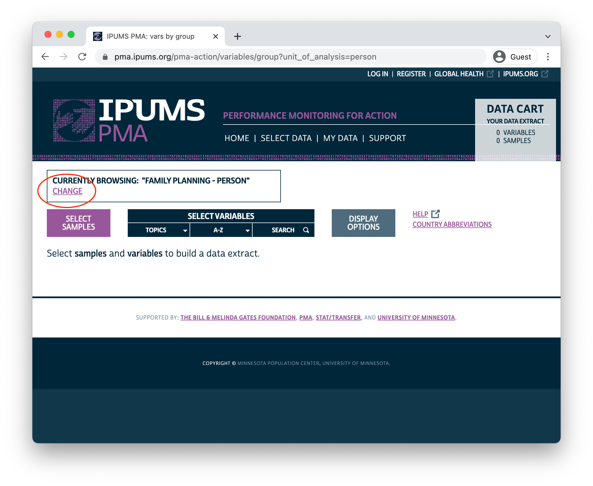
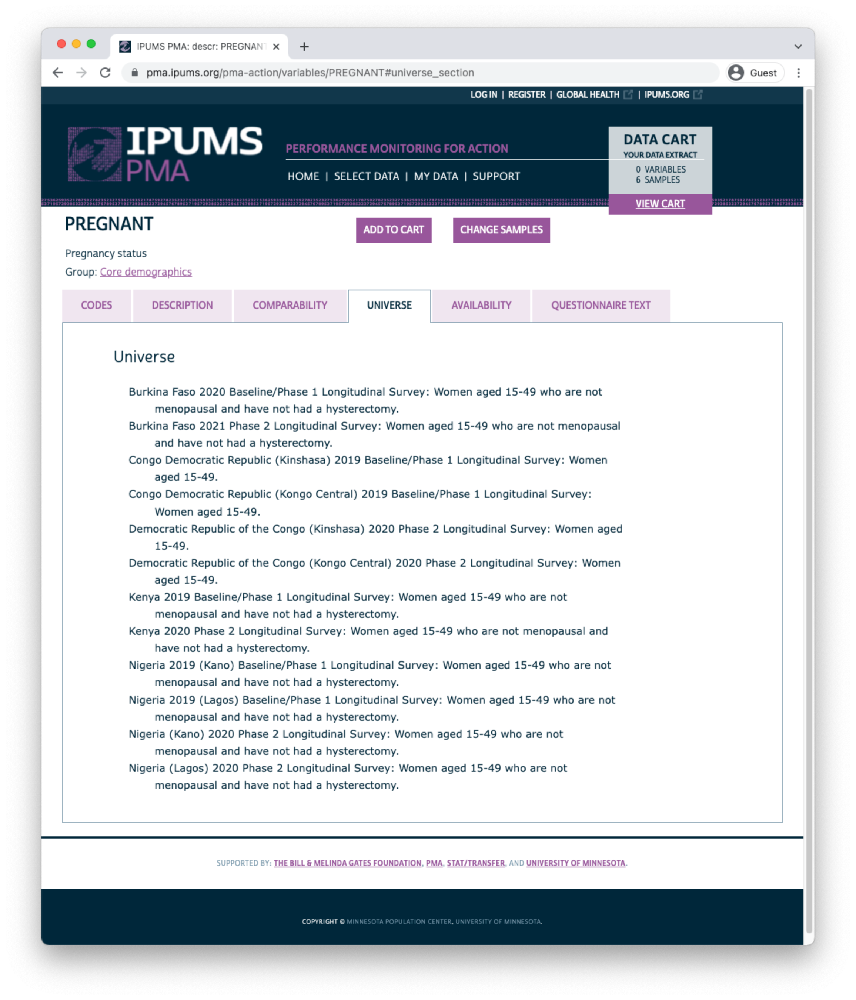
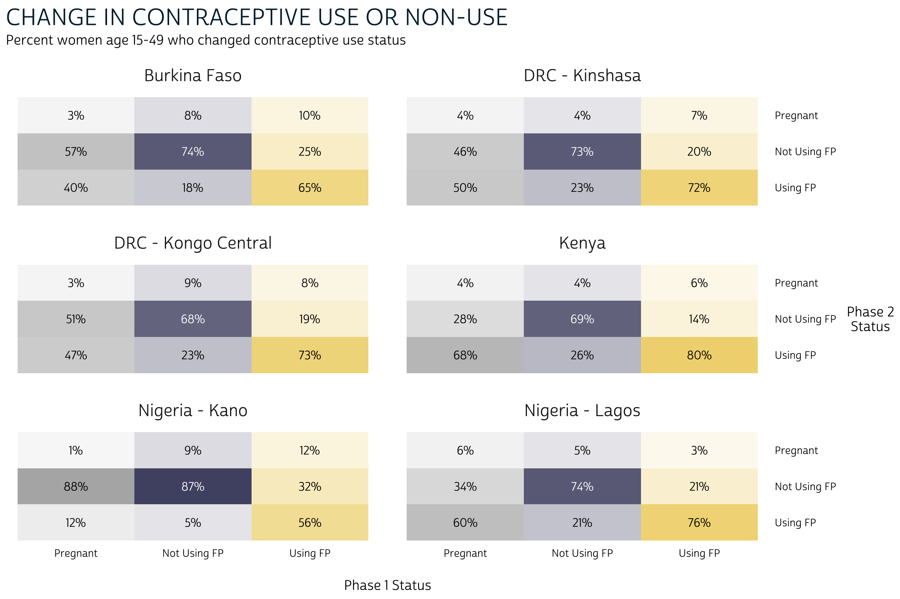
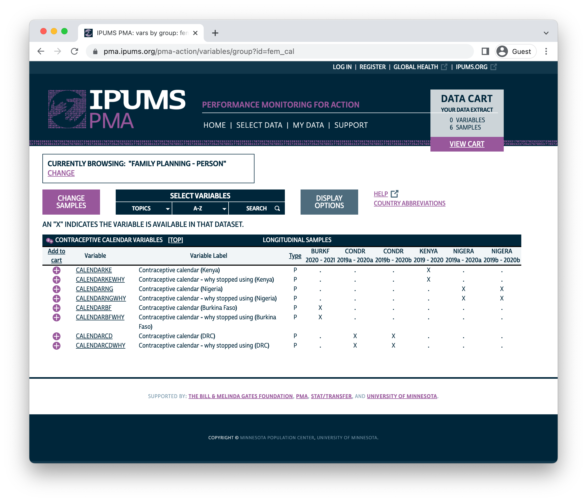

1 Introduction
Performance Monitoring for Action (PMA) uses innovative mobile technology to support low-cost, rapid-turnaround surveys that monitor key health and development indicators.
PMA surveys collect longitudinal data throughout a country at the household and health facility levels by female data collectors, known as resident enumerators, using mobile phones. The survey collects information from the same women and households over time for regular tracking of progress and for understanding the drivers of contraceptive use dynamics. The data are rapidly validated, aggregated, and prepared into tables and graphs, making results quickly available to stakeholders. PMA surveys can be integrated into national monitoring and evaluation systems using a low-cost, rapid-turnaround survey platform that can be adapted and used for various health data needs.
The PMA project is implemented by local partner universities and research organizations who train and deploy the cadres of female resident enumerators.
The purpose of this manual is to provide guidance on the analysis of harmonized panel data for women age 15-49 surveyed by PMA and published in partnership with IPUMS PMA. IPUMS provides census and survey products from around the world in an integrated format, making it easy to compare data from multiple countries. IPUMS PMA data are available free of charge, subject to terms and conditions: please register here to request access to the data featured in this guide.
The contents of this guide are also available on the IPUMS PMA data analysis blog, which features coding examples in R posted every two weeks.
1.1 Background
Dating back to 2013, the original PMA survey design included high-frequency, cross-sectional samples of women and service delivery points collected from eleven countries participating in Family Planning 2020 (FP2020) - a global partnership that supports the rights of women and girls to decide for themselves whether, when, and how many children they want to have. These surveys were designed to monitor annual progress towards FP2020 goals via population-level estimates for several core indicators.
Beginning in 2019, PMA surveys were redesigned under a renewed partnership called Family Planning 2030 (FP2030). These new surveys have been refocused on reproductive and sexual health indicators, and they feature a longitudinal panel of women of childbearing age. This design will allow researchers to measure contraceptive dynamics and changes in women’s fertility intentions over a three year period via annual in-person interviews.In addition to these three in-person surveys, PMA also conducted telephone interviews with panel members focused on emerging issues related to the COVID-19 pandemic in 2020. These telephone surveys are already available for several countries - see our series on PMA COVID-19 surveys for details.
Questions on the redesigned survey cover topics like:
- awareness, perception, knowledge, and use of contraceptive methods
- perceived quality and side effects of contraceptive methods among current users
- birth history and fertility intentions
- aspects of health service provision
- domains of empowerment
1.2 Sampling
PMA panel data includes a mixture of nationally representative and sub-nationally representative samples. The panel study consists of three data collection phases, each spaced one year apart.
As of this writing, IPUMS PMA has released data from the first two phases for four countries where Phase 1 data collection began in 2019; IPUMS PMA has released data from only the first phase for three countries where Phase 1 data collection began in August or September 2020. Phase 3 data collection and processing is currently underway.
| Sample | Phase 1 Data Collection* | Phase 1 | Phase 2 | Phase 3 |
|---|---|---|---|---|
| Burkina Faso | Dec 2019 - Mar 2020 | x | x | |
| Cote d’Ivoire | Sep 2020 - Dec 2020 | x | ||
| DRC - Kinshasa | Dec 2019 - Feb 2020 | x | x | |
| DRC - Kongo Central | Dec 2019 - Feb 2020 | x | x | |
| India - Rajasthan | Aug 2020 - Oct 2020 | x | ||
| Kenya | Nov 2019 - Dec 2019 | x | x | |
| Nigeria - Kano | Dec 2019 - Jan 2020 | x | x | |
| Nigeria - Lagos | Dec 2019 - Jan 2020 | x | x | |
| Uganda | Sep 2020 - Oct 2020 | x |
PMA uses a multi-stage clustered sample design, with stratification at the urban-rural level or by sub-region. Sample clusters - called enumeration areas (EAs) – are provided by the national statistics agency in each country.Displaced GPS coordinates for the centroid of each EA are available for most samples by request from PMA. IPUMS PMA provides shapefiles for PMA countries here. These EAs are sampled using a probability proportional to size (PPS) method relative to the population distribution in each stratum.
At Phase 1, 35 household dwellings were selected at random within each EA. Resident enumerators visited each dwelling and invited one household member to complete a Household QuestionnaireQuestionnaires administered in each country may vary from this Core Household Questionnaire - click here for details. that includes a census of all household members and visitors who stayed there during the night before the interview. Female household members and visitors aged 15-49 were then invited to complete a subsequent Phase 1 Female Questionnaire.Questionnaires administered in each country may vary from this Core Female Questionnaire - click here for details.
One year later, resident enumerators visited the same dwellings and administered a Phase 2 Household Questionnaire. A panel member in Phase 2 is any woman still age 15-49 who could be reached for a second Female Questionnaire, either because:
- she still lived there, or
- she had moved elsewhere within the study area,The “study area” is area within which resident enumerators should attempt to find panel women that have moved out of their Phase 1 dwelling. This may extend beyond the woman’s original EA as determined by in-country administrators - see PMA Phase 2 and Phase 3 Survey Protocol for details. but at least one member of the Phase 1 household remained and could help resident enumerators locate her new dwelling.In cases where no Phase 1 household members remained in the dwelling at Phase 2, women from the household are considered lost to follow-up (LTFU). A panel member is also considered LTFU if a Phase 2 Household Questionnaire was not completed, if she declined to participate, or if she was deceased or otherwise unavailable.
Additionally, resident enumerators administered the Phase 2 Female Questionnaire to new women in sampled households who:
- reached age 15 after Phase 1
- joined the household after Phase 1
- declined the Female Questionnaire at Phase 1, but agreed to complete it at Phase 2
When you select the new Longitudinal sample option at checkout, you’ll be able to include responses from every available phase of the study. These samples are available in either “long” format (responses from each phase will be organized in separate rows) or “wide” format (responses from each phase will be organized in columns).

In addition to following up with women in the panel over time, PMA also adjusted sampling so that a cross-sectional sample could be produced concurrently with each data collection phase. These samples mainly overlap with the data you’ll obtain for a particular phase in the longitudinal sample, except that replacement households were drawn from each EA where more than 10% of households from the previous phase were no longer there. Conversely, panel members who were located in a new dwelling at Phase 2 will not be represented in the cross-sectional sample drawn from that EA. These adjustments ensure that population-level indicators may be derived from cross-sectional samples in a given year, even if panel members move or are lost to follow-up.
You’ll find PMA cross-sectional samples dating back to 2013 if you select the Cross-sectional sample option at checkout.

1.3 Survey Design Elements
Throughout this guide, we’ll demonstrate how to incorporate PMA sampling weights and information about its stratified cluster sampling procedure into your analysis. To do so, we’ll rely on tools from the srvyr package.The srvyr package is a tidy implementation of the popular survey package for R, authored by Dr. Thomas Lumley. For thorough discussion of the types of weights available in both R and Stata, we recommend this blog post by Dr. Lumley.
Whether you intend to work with a new Longitudinal or Cross-sectional data extract, you’ll find the same set of sampling weights available for all PMA Family Planning surveys dating back to 2013:
- HQWEIGHT can be used to generate cross-sectional population estimates from questions on the Household Questionnaire.
HQWEIGHTreflects the calculated selection probability for a household in an EA, normalized at the population-level. Users intending to estimate population-level indicators for households should restrict their sample to one person per household via LINENO - see household weighting guide for details. - FQWEIGHT can be used to to generate cross-sectional population estimates from questions on the Female Questionnaire.
FQWEIGHTadjustsHQWEIGHTfor female non-response within the EA, normalized at the population-level - see female weighting guide for details. - EAWEIGHT can be used to compare the selection probability of a particular household with that of its EA.
Additionally, PMA created a new weight, PANELWEIGHT,
which should be used in longitudinal analyses spanning multiple phases, as it adjusts for loss to follow-up. PANELWEIGHT is available only for Longitudinal data extracts.
For example, suppose we wanted to estimate the proportion of reproductive age women in Burkina Faso who were using contraception at the time of data collection for both Phase 1 and Phase 2. In a cross-sectional or “long” longitudinal extract, you’ll find this information in the variable CP. In a “wide” longitudinal extract, you’ll find it in CP_1 for Phase 1, and in CP_2 for Phase 2. We’ll be working with a “wide” extract loaded into R as an object called dat.
dat %>% count(CP_1, CP_2)## # A tibble: 5 × 3
## CP_1 CP_2 n
## <int+lbl> <int+lbl> <int>
## 1 0 [No] 0 [No] 2589
## 2 0 [No] 1 [Yes] 821
## 3 1 [Yes] 0 [No] 556
## 4 1 [Yes] 1 [Yes] 1241
## 5 99 [NIU (not in universe) or missing] 0 [No] 5The srvyr package provides two functions we’ll need to obtain our population estimate. The first, as_survey_design, allows us to specify PANELWEIGHT as a sampling weight. The second, survey_mean, uses that weight in an estimating function; in this case, we’ll get the estimated proportion where CP_1 and CP_2 both have the value 1 [Yes] after removing missing / NIU responses with CP_1 < 90 & CP_2 < 90.
In subsequent chapters, we’ll use vartype = "ci" to include a 95% confidence interval set by level = 0.95 any time we calculate a population estimate. For discrete variables, we’ll also include proportion = TRUE and prop_method = "logit". In practice, there are large number of ways to calculate a confidence interval for a proportion.See Dean & Pagano [-@Dean-Pagano] for discussion. The srvyr package includes several options for prop_method,See svyciprop for a complete list of methods. but we’ll use these settings because:
- they ensure that each proportion’s confidence interval only includes values between 0% and 100%,
- they will include the real-world population proportion close to 95% of the time,
- the
logitmethod yields a relatively narrow interval compared with other options, and - these intervals will match the default intervals reported by Stata and SPSS survey proportion functions.
library(srvyr)
dat %>%
as_survey_design(weight = PANELWEIGHT) %>%
filter(CP_1 < 90 & CP_2 < 90) %>%
summarise(
survey_mean(
CP_1 * CP_2,
vartype = "ci",
level = 0.95,
proportion = TRUE,
prop_method = "logit"
)
)## # A tibble: 1 × 3
## coef `_low` `_upp`
## <dbl> <dbl> <dbl>
## 1 0.188 0.174 0.203You can also provide information about sample clusters via as_survey_design. In general, we expect households selected from the same EA to share certain characteristics, such that some degree of variation seen in a variable of interest may be non-random at the EA-level. To compensate, you may wish the expand the standard errors produced by survey_mean by providing EA identifiers in EAID.
Here, we include id = EAID_1.As we’ll see in an upcoming post, women are considered “lost to follow-up” if they moved outside the study area after Phase 1. Therefore, EAID_1 and EAID_2 are identical for all panel members: you can use either one to identify sample clusters. Compared with our original estimate, notice that the 95% confidence interval for our contraceptive use estimate is wider when we provide information about the clustered sample design - these are “cluster-robust” standard errors.
dat %>%
as_survey_design(weight = PANELWEIGHT, id = EAID_1) %>%
filter(CP_1 < 90 & CP_2 < 90) %>%
summarise(
survey_mean(
CP_1 * CP_2,
vartype = "ci",
level = 0.95,
proportion = TRUE,
prop_method = "logit"
)
)## # A tibble: 1 × 3
## coef `_low` `_upp`
## <dbl> <dbl> <dbl>
## 1 0.188 0.163 0.215Finally, we’ll also use as_survey_design to specify sample strata. For most samples, including Burkina Faso, this information is included in the variable STRATA. We’ll include it here with strata = STRATA_1.As with EAID, you may use either STRATA_1 or STRATA_2 if your analysis is restricted to panel members.
dat %>%
as_survey_design(weight = PANELWEIGHT, id = EAID_1, strata = STRATA_1) %>%
filter(CP_1 < 90 & CP_2 < 90) %>%
summarise(
survey_mean(
CP_1 * CP_2,
vartype = "ci",
level = 0.95,
proportion = TRUE,
prop_method = "logit"
)
)## # A tibble: 1 × 3
## coef `_low` `_upp`
## <dbl> <dbl> <dbl>
## 1 0.188 0.164 0.214The variable STRATA is not available for samples collected from DRC - Kinshasa or DRC - Kongo Central. If your extract includes any DRC sample, you’ll need to amend this variable to include one unique numeric code for each of those regions.
For example, let’s look at a different “wide” extract, dat2, containing all of the samples included in this data release. Notice that STRATA_1 lists the sample strata for every COUNTRY except for DRC, where you see the value NA.
dat2 %>% count(COUNTRY, STRATA_1)## # A tibble: 27 × 3
## COUNTRY STRATA_1 n
## <int+lbl> <int+lbl> <int>
## 1 1 [Burkina Faso] 85401 [Urban, Burkina Faso] 3058
## 2 1 [Burkina Faso] 85402 [Rural, Burkina Faso] 2154
## 3 2 [Congo, Democratic Republic] NA 3487
## 4 7 [Kenya] 40410 [Bungoma - urban, Kenya] 153
## 5 7 [Kenya] 40411 [Bungoma - rural, Kenya] 489
## 6 7 [Kenya] 40412 [Kakamega - urban, Kenya] 133
## 7 7 [Kenya] 40413 [Kakamega - rural, Kenya] 438
## 8 7 [Kenya] 40414 [Kericho - urban, Kenya] 249
## 9 7 [Kenya] 40415 [Kericho - rural, Kenya] 453
## 10 7 [Kenya] 40416 [Kiambu - urban, Kenya] 214
## 11 7 [Kenya] 40417 [Kiambu - rural, Kenya] 311
## 12 7 [Kenya] 40418 [Kilifi - urban, Kenya] 170
## 13 7 [Kenya] 40419 [Kilifi - rural, Kenya] 455
## 14 7 [Kenya] 40420 [Kitui - urban, Kenya] 153
## 15 7 [Kenya] 40421 [Kitui - rural, Kenya] 586
## 16 7 [Kenya] 40422 [Nairobi - urban, Kenya] 494
## 17 7 [Kenya] 40423 [Nandi - urban, Kenya] 260
## 18 7 [Kenya] 40424 [Nandi - rural, Kenya] 711
## 19 7 [Kenya] 40425 [Nyamira - urban, Kenya] 143
## 20 7 [Kenya] 40426 [Nyamira - rural, Kenya] 382
## 21 7 [Kenya] 40427 [Siaya - urban, Kenya] 130
## 22 7 [Kenya] 40428 [Siaya - rural, Kenya] 437
## 23 7 [Kenya] 40429 [West Pokot - urban, Kenya] 104
## 24 7 [Kenya] 40430 [West Pokot - rural, Kenya] 474
## 25 9 [Nigeria] 56606 [Lagos, Nigeria] 1089
## 26 9 [Nigeria] 56611 [Kano - Urban] 437
## 27 9 [Nigeria] 56612 [Kano - Rural] 561Now let’s see what happens when we try to produce population-level estimates with STRATA_1:
dat2 %>%
as_survey_design(weight = PANELWEIGHT, id = EAID_1, strata = STRATA_1) %>%
filter(CP_1 < 90 & CP_2 < 90) %>%
group_by(COUNTRY, GEOCD, GEONG) %>%
summarise(
survey_mean(
CP_1 * CP_2,
vartype = "ci",
level = 0.95,
proportion = TRUE,
prop_method = "logit"
)
)## Error in (function (object, ...) : missing values in `strata'This fails because as_survey_design encounters NA values in STRATA_1. Fortunately, we can replace those values with numeric codes from the variable GEOCD:
dat2 %>% count(GEOCD)## # A tibble: 3 × 2
## GEOCD n
## <int+lbl> <int>
## 1 1 [Kinshasa] 1973
## 2 2 [Kongo Central] 1514
## 3 NA 14238If GEOCD is not NA, we’ll use its numeric code in place of STRATA_1. Otherwise, we’d like to leave STRATA_1 unchanged. However, because both variables include value labels, we’ll first need remove them with as.numeric. To avoid confusion with the original variable STRATA_1, we’ll call our new variable STRATA_RECODE.
dat2 <- dat2 %>%
mutate(
STRATA_RECODE = if_else(
is.na(GEOCD),
as.numeric(STRATA_1),
as.numeric(GEOCD)
)
)
dat2 %>% count(GEOCD, STRATA_1, STRATA_RECODE)## # A tibble: 28 × 4
## GEOCD STRATA_1 STRATA_RECODE n
## <int+lbl> <int+lbl> <dbl> <int>
## 1 1 [Kinshasa] NA 1 1973
## 2 2 [Kongo Central] NA 2 1514
## 3 NA 40410 [Bungoma - urban, Kenya] 40410 153
## 4 NA 40411 [Bungoma - rural, Kenya] 40411 489
## 5 NA 40412 [Kakamega - urban, Kenya] 40412 133
## 6 NA 40413 [Kakamega - rural, Kenya] 40413 438
## 7 NA 40414 [Kericho - urban, Kenya] 40414 249
## 8 NA 40415 [Kericho - rural, Kenya] 40415 453
## 9 NA 40416 [Kiambu - urban, Kenya] 40416 214
## 10 NA 40417 [Kiambu - rural, Kenya] 40417 311
## 11 NA 40418 [Kilifi - urban, Kenya] 40418 170
## 12 NA 40419 [Kilifi - rural, Kenya] 40419 455
## 13 NA 40420 [Kitui - urban, Kenya] 40420 153
## 14 NA 40421 [Kitui - rural, Kenya] 40421 586
## 15 NA 40422 [Nairobi - urban, Kenya] 40422 494
## 16 NA 40423 [Nandi - urban, Kenya] 40423 260
## 17 NA 40424 [Nandi - rural, Kenya] 40424 711
## 18 NA 40425 [Nyamira - urban, Kenya] 40425 143
## 19 NA 40426 [Nyamira - rural, Kenya] 40426 382
## 20 NA 40427 [Siaya - urban, Kenya] 40427 130
## 21 NA 40428 [Siaya - rural, Kenya] 40428 437
## 22 NA 40429 [West Pokot - urban, Kenya] 40429 104
## 23 NA 40430 [West Pokot - rural, Kenya] 40430 474
## 24 NA 56606 [Lagos, Nigeria] 56606 1089
## 25 NA 56611 [Kano - Urban] 56611 437
## 26 NA 56612 [Kano - Rural] 56612 561
## 27 NA 85401 [Urban, Burkina Faso] 85401 3058
## 28 NA 85402 [Rural, Burkina Faso] 85402 2154Now, we can use STRATA_RECODE with as_survey_design to obtain population estimates for each nationally representative or sub-nationally representative sample.
dat2 %>%
as_survey_design(weight = PANELWEIGHT, id = EAID_1, strata = STRATA_RECODE) %>%
filter(CP_1 < 90 & CP_2 < 90) %>%
group_by(COUNTRY, GEOCD, GEONG) %>%
summarise(
survey_mean(
CP_1 * CP_2,
vartype = "ci",
level = 0.95,
proportion = TRUE,
prop_method = "logit"
)
)## # A tibble: 6 × 6
## # Groups: COUNTRY, GEOCD [5]
## COUNTRY GEOCD GEONG coef `_low` `_upp`
## <int+lbl> <int+lbl> <int+lb> <dbl> <dbl> <dbl>
## 1 1 [Burkina Faso] NA NA 0.188 0.164 0.214
## 2 2 [Congo, Democratic Republic] 1 [Kinshasa] NA 0.320 0.288 0.353
## 3 2 [Congo, Democratic Republic] 2 [Kongo Centra… NA 0.268 0.215 0.329
## 4 7 [Kenya] NA NA 0.366 0.350 0.382
## 5 9 [Nigeria] NA 2 [Lag… 0.293 0.259 0.330
## 6 9 [Nigeria] NA 4 [Kan… 0.0537 0.0322 0.08801.4 Inclusion Criteria for Analysis
The remainder of this guide will feature code you can use to reproduce key indicators included in the PMA Longitudinal Brief for each sample. In many cases, you’ll find separate reports available in English and French, and for both national and sub-national summaries. For reference, here are the highest-level population summaries available in English for each sample where Phase 2 IPUMS PMA data is currently available:
Panel data in these reports is limited to the de facto population of women who completed the Female Questionnaire in both Phase 1 and Phase 2. This includes women who slept in the household during the night before the interview for the Household Questionnaire. The de jure population includes women who are usual household members, but who slept elsewhere that night. We’ll remove de jure cases recorded in the variable RESIDENT.
For example, returning to our “wide” data extract for Burkina Faso, you can see the number of women who slept in the household before the Household Questionnaire for each phase reported in RESIDENT_1 and RESIDENT_2:
dat %>% count(RESIDENT_1)## # A tibble: 3 × 2
## RESIDENT_1 n
## <int+lbl> <int>
## 1 11 [Visitor, slept in hh last night] 106
## 2 21 [Usual member, did not sleep in hh last night] 174
## 3 22 [Usual member, slept in hh last night] 6510dat %>% count(RESIDENT_2)## # A tibble: 5 × 2
## RESIDENT_2 n
## <int+lbl> <int>
## 1 11 [Visitor, slept in hh last night] 74
## 2 21 [Usual member, did not sleep in hh last night] 230
## 3 22 [Usual member, slept in hh last night] 5993
## 4 31 [Slept in hh last night, no response if usually lives in hh] 1
## 5 NA 492The de facto population is represented in codes 11 and 22. We’ll use filter to include only those cases.
dat_2 <- dat %>%
filter(
RESIDENT_1 == 11 | RESIDENT_1 == 22,
RESIDENT_2 == 11 | RESIDENT_2 == 22
)
dat_2 %>% count(RESIDENT_1, RESIDENT_2)## # A tibble: 4 × 3
## RESIDENT_1 RESIDENT_2 n
## <int+lbl> <int+lbl> <int>
## 1 11 [Visitor, slept in hh last night] 11 [Visitor, slept in hh last… 56
## 2 11 [Visitor, slept in hh last night] 22 [Usual member, slept in hh… 39
## 3 22 [Usual member, slept in hh last night] 11 [Visitor, slept in hh last… 17
## 4 22 [Usual member, slept in hh last night] 22 [Usual member, slept in hh… 5855Additionally, these reports only include women who completed (or partially completed) both Female Questionnaires. This information is reported in RESULTFQ. In our “wide” extract, this information appears in RESULTFQ_1 and RESULTFQ_2: if you select the “Female Respondents” option at checkout, only women who completed (or partially completed) the Phase 1 Female Questionnaire will be included in your extract.

We’ll further restrict our sample by selecting only cases where RESULTFQ_2 shows that the woman also completed the Phase 2 questionnaire. Notice that, in addition to each of the value 1 through 10, there are several non-response codes numbered 90 through 99. You’ll see similar values repeated across all IPUMS PMA variables, except that they will be left-padded to match the maximum width of a particular variable (e.g. 9999 is used for INTFQYEAR, which represents a 4-digit year for the Female Interview).
dat %>% count(RESULTFQ_2)## # A tibble: 11 × 2
## RESULTFQ_2 n
## <int+lbl> <int>
## 1 1 [Completed] 5491
## 2 2 [Not at home] 78
## 3 3 [Postponed] 22
## 4 4 [Refused] 66
## 5 5 [Partly completed] 12
## 6 7 [Respondent moved] 15
## 7 10 [Incapacitated] 19
## 8 95 [Not interviewed (female questionnaire)] 4
## 9 96 [Not interviewed (household questionnaire)] 192
## 10 99 [NIU (not in universe)] 399
## 11 NA 492Possible non-response codes include:
95Not interviewed (female questionnaire)96Not interviewed (household questionnaire)97Don’t know98No response or missing99NIU (not in universe)
The value NA in an IPUMS extract indicates that a particular variable is not provided for a selected sample. In a “wide” Longitudinal extract, it may also signify that a particular person was not included in the data from a particular phase. Here, an NA appearing in RESULTFQ_2 indicates that a Female Respondent from Phase 1 was not found in Phase 2.
You can drop incomplete Phase 2 female responses as follows:
dat_3 <- dat %>% filter(RESULTFQ_2 == 1)
dat_3 %>% count(RESULTFQ_1, RESULTFQ_2)## # A tibble: 2 × 3
## RESULTFQ_1 RESULTFQ_2 n
## <int+lbl> <int+lbl> <int>
## 1 1 [Completed] 1 [Completed] 5487
## 2 5 [Partly completed] 1 [Completed] 4Generally, we will combine both filtering steps together in a single function like so:
dat <- dat %>%
filter(
RESIDENT_1 == 11 | RESIDENT_1 == 22,
RESIDENT_2 == 11 | RESIDENT_2 == 22,
RESULTFQ_2 == 1
) In subsequent analyses, we’ll use the remaining cases to show how PMA generates key indicators for contraceptive use status and family planning intentions and outcomes. The summary report for each country includes measures disaggregated by demographic variables like:
- MARSTAT - marital status
- EDUCATT and EDUCATTGEN - highest attended level of educationLevels in
EDUCATTmay vary by country;EDUCATTGENrecodes country-specific levels in four general categories. - AGE - ageAges are frequently reported in five-year groups: 15-19, 20-24, 25-29, 30-34, 35-39, 40-44, and 45-49.
- WEALTHQ and WEALTHT - household wealth quintile or tertileHouseholds are divided into quintiles/tertiles relative to the distribution of an asset SCORE weighted for all sampled households. For subnationally-representative samples (DRC and Nigeria), separate wealth distributions are calculated for each sampled region.
- URBAN and SUBNATIONAL - geographic location
SUBNATIONALincludes subnational regions for all sampled countries; country-specific variables are also available on the household - geography page.
2 Post 2
When we introduced new harmonized panel data from PMA in our last post, we mentioned that we’ve made big changes to the IPUMS PMA website making it easy to compare women’s responses across each phase of data collection. This includes a new option allowing users to choose whether to organize panel data in either long or wide format. In this post, we’ll practice building a data extract in both formats and discuss the advantages of each.
2.1 Getting Started
PMA panel data represent women aged 15-49 from sampled households in eight participating countries. IPUMS PMA makes it possible to combine data from multiple samples from the same unit of analysis: you’ll need to select the Family Planning topic under the Person unit of analysis to begin browsing available samples and variables.


2.2 Sample Selection
Once you’ve selected the Family Planning option, you’ll next need to choose between cross-sectional or longitudinal samples. Cross-sectional samples are selected by default; these are nationally or sub-nationally representative samples collected each year dating backward as far as 2013.

Longitudinal samples are only available from 2019 onward, and they include all of the available phases for each sampled country (sub-nationally representative samples for DRC and Nigeria are listed separately). You’ll only find longitudinal samples for countries where Phase 2 data has been made available; Phase 1 data for Cote d’Ivoire, India, and Uganda can currently be found under the Cross-sectional sample menu (Phase 2 data will be released soon!).
Clicking the Longitudinal button reveals options for either long or wide format. You’ll find the same samples available in either case:


Important: if you decide to change formats after selecting variables, your Data Cart will be emptied and you’ll need to begin again from scratch.

After you’ve selected one of the available longitudinal formats, choose one or more samples listed below. There are also several Sample Members options listed:
- Female Respondents only includes women who completed all or part of a Female Questionnaire. This option selects all members of the panel study. In addition, it includes women who only participated in only one phase - we will demonstrate how to identify and drop these cases below.Women who completed all or part of the Female Questionnaire in more than one phase of the study are considered panel members. Women who completed it only at Phase 1 are included in a longitudinal extract, but they are not panel members. Likewise, women who completed it for the first time at Phase 2 are included, but are not panel members if they 1) will reach age 50 before Phase 3, or 2) declined the invitation to participate again in Phase 3.
- Female Respondents and Household Members adds records for all other members of a Female Respondent’s household. These household members did not complete the Female Questionnaire, but were listed on the household roster provided by the respondent to a Household Questionnaire. Basic demographic variables are available for each household member, as are common wealth, water, sanitation, and other variables shared for all members of the same household.
- Female Respondents and Female Non-respondents includes all women who were eligible to participate in a Female Questionnaire. Eligible women are those age 15-49 who were listed on the roster collected in a Household Questionnaire. If an eligible woman declined the Female Questionnaire or was not available, variables associated with that questionnaire will be coded “Not interviewed (female questionnaire)”.
- All Cases includes all members listed on the household roster from a Household Questionnaire. If the Household Questionnaire was declined or if no respondent was available, any panel member appearing in other phases of the study will be coded “Not interviewed (household questionnaire)” for variables associated with the missing Household Questionnaire.

After you’ve selected samples and sample members for your extract, click the “Submit Sample Selections” button to return to the main data browsing menu.
2.3 Variable Selection
You can browse IPUMS PMA variables by topic or alphabetically by name, or you can search for a particular term in a variable name, label, value labels, or description.

In this example, we’ll select the Discontinuation of Family Planning topic. The availability of each associated variable is shown in a table containing all of the samples we’ve selected.
Xindicates that the variable is available for all phases/indicates that the variable is available for one phase-indicates that the variable is not available for any phase
You can click the + button to add a variable to your cart, or click a variable name to learn more.

Let’s take a look at the variable PREGNANT. You’ll find the variable name and label shown at the top of the page. Below, you’ll see several tabs beginning with the CODES tab. For discrete variables, this tab shows all of the available codes and value labels associated with each response. You’ll also see the same X, /, and - symbols in a table indicating the availability of each response in each sample.

Above, there are no responses for “Not interviewed (female questionnaire)” and “Not interviewed (household questionnaire)”; this is because only samples members included in a “Female Respondents” extract are displayed by default. If we instead choose “All Cases”, this variable will include those response options because we’ll include every person listed on the household roster (even if the Household or Female Questionnaire was not completed).

The symbol / again indicates that a particular response is available for some - but not all - phases of the study. For PREGNANCY it indicates that one of the options was either unavailable or was not selected by any sample respondents in a particular phase. If a variable was not included in all phases of the study, all response options will be marked with this symbol. For example, consider the variable COVIDCONCERN, indicating the respondent’s level of concern about becoming infected with COVID-19.

Because Phase 1 questionnaires were administered prior to the emergence of COVID-19, this variable only appeared on Phase 2 questionnaires. The symbol / indicates limited availability across phases.
You’ll find a detailed description for each variable on the DESCRIPTION tab. This tab also indicates whether a particular question appeared on the Household or Female Questionnaire.

The COMPARABILITY tab describes important differences between samples. Additionally, it may contain information about similar variables appearing in DHS samples provided by IPUMS DHS.

The UNIVERSE tab describes selection criteria for this question. In this case, there are some differences between samples:
- In DRC samples, all women aged 15-49 received this question.
- For all other samples, the question was skipped if any such woman previously indicated that she was menopausal or had a hysterectomy.

The AVAILABILITY tab shows all other samples (including cross-sectional samples) where this variable is available.

Finally, you’ll find the full text of each question on the QUESTIONNAIRE TEXT tab. Each phase of the survey is shown separately, and you may click the “view entire document: text” link to view the complete questionnaire for a particular sample in any given phase.

Use the buttons at the top of this page to add the variable to your Data Cart, or to “VIEW CART” and begin checkout.

2.4 Loading an Extract into R
Your Data Cart shows all of the variables you’ve selected, plus several “preselected” variables that will be automatically included in your extract. Click the “CREATE DATA EXTRACT” button to prepare your download.

Before you submit an extract request, you’ll have the opportunity to choose a “Data Format”. R users should selected Fixed-width text (.dat) - you’ll notice that data formatted for Stata, SPSS, and SAS are also available. CSV files are provided, but not recommended. (If you wish to change Sample Members, you may do so again here.)


Click “APPLY SELECTIONS” to return to the previous screen. There, you may add a description and then proceed to the download page.

After a few moments, you’ll receive an email indicating that your extract has been created. You’ll need to obtain two files from the download page:
- Click the green “Download DAT” button to download the data file. You’ll receive a file with a number like “pma_00001.dat.gz”.
- Right click on “DDI” and click “Save link as”. You’ll receive a corresponding XML file like “pma_00001.xml”.

Place both files in a folder that R can use as its working directory. We strongly recommend using RStudio projects to manage all of the files and analysis scripts used for a particular research project. We’ll place our files in a subfolder called “data” within our own RStudio project folder.
The ipumsr package offers the easiest way to import an IPUMS PMA extract into R. You can install it from CRAN like so:
install.packages("ipumsr")After installation, you’ll be able to load ipumsr and use the function read_ipums_micro to import your data extract. We’ll now demonstrate loading both a long and a wide extract, and we’ll take a brief look at the structure of each.
2.5 Long Data Structure
We’ve downloaded a long data extract (Female Respondents only) and saved it in a folder called “data” in our working directory. We’ll now load it into R as an object called long.
long <- read_ipums_micro(
ddi = "data/pma_00095.xml",
data = "data/pma_00095.dat.gz"
)In a long extract, data from each phase will be organized in separate rows. Here, responses from three panel members are shown:
long %>%
filter(FQINSTID %>% str_starts("011") | FQINSTID %>% str_starts("015")) %>%
arrange(FQINSTID) %>%
select(FQINSTID, PHASE, AGE, PANELWOMAN)## # A tibble: 6 × 4
## FQINSTID PHASE AGE PANELWOMAN
## <chr> <int+lbl> <int+lbl> <int+lbl>
## 1 011W5S0HN91I4H4I3T9JCMBHB 1 [Baseline] 29 NA
## 2 011W5S0HN91I4H4I3T9JCMBHB 2 [First follow up] 30 1 [Yes]
## 3 015NP6FJTIA98FYCBBBS1FOF7 1 [Baseline] 47 NA
## 4 015NP6FJTIA98FYCBBBS1FOF7 2 [First follow up] 48 1 [Yes]
## 5 015WYNNO2WXHH6JA4HA9PL1MR 1 [Baseline] 20 NA
## 6 015WYNNO2WXHH6JA4HA9PL1MR 2 [First follow up] 21 1 [Yes]Each panel member receives a unique ID shown in FQINSTID. The variable PHASE shows that each woman’s responses to the Phase 1 Female Questionnaire appears in the first row, while her Phase 2 responses appear in the second. AGE shows each woman’s age when she completed the Female Questionnaire for each phase.
PANELWOMAN indicates whether the woman completed all or part of the Female Questionnaire in a prior phase, and that she’d agreed to continue participating in the panel study at that time. The value NA appears in the rows for Phase 1, as PANELWOMAN was not included in Phase 1 surveys.
We mentioned above that you’ll also include responses from some non-panel members when you request an extract with Female Respondents. These include women who did not complete all or part the Female Questionnaire in a prior phase, as indicated by PANELWOMAN. These women are not assigned a value for FQINSTID - instead, you’ll find an empty string:
long %>% count(PHASE, PANELWOMAN, FQINSTID == "")## # A tibble: 3 × 4
## PHASE PANELWOMAN `FQINSTID == ""` n
## <int+lbl> <int+lbl> <lgl> <int>
## 1 1 [Baseline] NA FALSE 23591
## 2 2 [First follow up] 0 [No] TRUE 6586
## 3 2 [First follow up] 1 [Yes] FALSE 18194For most longitudinal analysis applications, you’ll need to drop non-panel members together with any women who did not fully complete the Phase 2 Female Questionnaire. We’ll demonstrate using group_by to ensure that there is one row for every FQINSTID where PHASE == 1 and another row where PHASE == 2 & RESULTFQ == 1.
long <- long %>%
group_by(FQINSTID) %>%
filter(any(PHASE == 1) & any(PHASE == 2 & RESULTFQ == 1)) %>%
ungroup() The PMA Longitudinal Briefs published for each sample also include only members of the de facto population. These are women who slept in the household during the night prior to the interview for each Household Questionnaire, such that RESIDENT takes the value 11 or 22. We’ll use group_by again to include only de facto women from both phases.
long <- long %>%
group_by(FQINSTID) %>%
filter(all(RESIDENT %in% c(11, 22))) %>%
ungroup() Following these steps, you can check the size of each analytic sample like so:
long %>% count(COUNTRY, GEOCD, GEONG, PHASE)## # A tibble: 12 × 5
## COUNTRY GEOCD GEONG PHASE n
## <int+lbl> <int+lbl> <int+lbl> <int+lbl> <int>
## 1 1 [Burkina Faso] NA NA 1 [Baseli… 5212
## 2 1 [Burkina Faso] NA NA 2 [First … 5212
## 3 2 [Congo, Democratic Republic] 1 [Kinshasa] NA 1 [Baseli… 1973
## 4 2 [Congo, Democratic Republic] 1 [Kinshasa] NA 2 [First … 1973
## 5 2 [Congo, Democratic Republic] 2 [Kongo Central] NA 1 [Baseli… 1514
## 6 2 [Congo, Democratic Republic] 2 [Kongo Central] NA 2 [First … 1514
## 7 7 [Kenya] NA NA 1 [Baseli… 6939
## 8 7 [Kenya] NA NA 2 [First … 6939
## 9 9 [Nigeria] NA 2 [Lagos] 1 [Baseli… 1089
## 10 9 [Nigeria] NA 2 [Lagos] 2 [First … 1089
## 11 9 [Nigeria] NA 4 [Kano] 1 [Baseli… 998
## 12 9 [Nigeria] NA 4 [Kano] 2 [First … 9982.6 Wide Data Structure
We’ve also downloaded a wide data extract (Female Respondents only) and saved it in the “data” folder in our working directory. We’ll also load this extract into R as an object named wide.
wide <- read_ipums_micro(
ddi = "data/pma_00084.xml",
data = "data/pma_00084.dat.gz"
)In a wide extract, all of the responses from one woman appear in the same row. The IPUMS extract system appends a numeric suffix to each variable name corresponding with the phase from which it was drawn. Consider our three example panel members again:
wide %>%
filter(FQINSTID %>% str_starts("011") | FQINSTID %>% str_starts("015")) %>%
select(FQINSTID, AGE_1, AGE_2, PANELWOMAN_1, PANELWOMAN_2)## # A tibble: 3 × 5
## FQINSTID AGE_1 AGE_2 PANELWOMAN_1 PANELWOMAN_2
## <chr> <int+lbl> <int+lbl> <int+lbl> <int+lbl>
## 1 011W5S0HN91I4H4I3T9JCMBHB 29 30 NA 1 [Yes]
## 2 015NP6FJTIA98FYCBBBS1FOF7 47 48 NA 1 [Yes]
## 3 015WYNNO2WXHH6JA4HA9PL1MR 20 21 NA 1 [Yes]Each panel member has one unique ID shown in FQINSTID. However, AGE is parsed into two columns: AGE_1 shows each woman’s age at Phase 1, and AGE_2 shows her age at Phase 2.
As we’ve discussed, PANELWOMAN is not available for Phase 1, as it indicates whether the woman completed all or part of the Female Questionnaire in a prior phase. For this reason, all values in PANELWOMAN_1 are NA. Most variables are copied once for each phase, even if they - like PANELWOMAN_1 - are not available for all phases.
You might expect the total length of a wide extract to be half the length of a corresponding long extract. This is not the case! A wide extract includes one row for each woman who completed all or part of the Female Questionnaire for any phase - you’ll find placeholder columns for phases where the interview was not conducted.
wide %>%
filter(FQINSTID == "0C8VQU6B03BXLAVVZ8SB90EKQ") %>%
select(RESULTFQ_1, AGE_1, RESULTFQ_2, AGE_2)## # A tibble: 1 × 4
## RESULTFQ_1 AGE_1 RESULTFQ_2 AGE_2
## <int+lbl> <int+lbl> <int+lbl> <int+lbl>
## 1 1 [Completed] 31 2 [Not at home] 95 [Not interviewed (female questionn…In a long extract, rows for the missing phase are dropped. In this example, the woman was “not at home” for the Phase 2 Female Questionnaire. When we select a long extract containing only Female Respondents, her Phase 2 row is excluded automatically (it will be included if you request an extract containing Female Respondents and Female Non-respondents).
long %>%
filter(FQINSTID == "0C8VQU6B03BXLAVVZ8SB90EKQ") %>%
select(PHASE, RESULTFQ, AGE)## # A tibble: 1 × 3
## PHASE RESULTFQ AGE
## <int+lbl> <int+lbl> <int+lbl>
## 1 1 [Baseline] 1 [Completed] 31Again: for most longitudinal analysis applications, you’ll need to remove cases where women were not interviewed for Phase 1 or where the Phase 2 Female Questionnaire was not completed:
wide <- wide %>% filter(RESULTFQ_2 == 1 & !is.na(RESULTFQ_1)) The de facto population appearing in PMA Longitudinal Briefs is defined in wide extracts by cases where the values 11 or 12 appear in both RESIDENT_1 and RESIDENT_2:
wide <- wide %>% filter(RESIDENT_1 %in% c(11, 22) & RESIDENT_2 %in% c(11, 22))Following these steps, each analytic sample contains the same number of cases shown in the final long format extract above.
wide %>%
group_by(COUNTRY, GEOCD, GEONG) %>%
count()## # A tibble: 6 × 4
## # Groups: COUNTRY, GEOCD, GEONG [6]
## COUNTRY GEOCD GEONG n
## <int+lbl> <int+lbl> <int+lbl> <int>
## 1 1 [Burkina Faso] NA NA 5212
## 2 2 [Congo, Democratic Republic] 1 [Kinshasa] NA 1973
## 3 2 [Congo, Democratic Republic] 2 [Kongo Central] NA 1514
## 4 7 [Kenya] NA NA 6939
## 5 9 [Nigeria] NA 2 [Lagos] 1089
## 6 9 [Nigeria] NA 4 [Kano] 9982.7 Which format is best for me?
The choice between long and wide formats ultimately depends on your research objectives.
Many data manipulation tasks, for example, are faster and easier to perform in the wide format. In the example above, we needed to identify women who completed a Female Questionnaire and were members of the de facto population in both phases. In the long format, we first had to group the data by FQINSTID with group_by, thereby ensuring that a Phase 1 and Phase 2 check could be performed for each woman. In preparing for this post, this approach took about 36.5 seconds. By comparison, the same task was achieved without group_by in wide format in just 0.16 seconds. If your workflow requires multiple comparisons between phases, the wide format may be the best choice!
On the other hand, many of the longitudinal modeling packages available for R require data to be in a long format - this includes both the survival package for Cox regression and the lme4 package for multilevel models. Users who prefer the wide format for data cleaning and exploration can manually switch to long format with help from pivot_longer, for example:
wide %>% select(FQINSTID, AGE_1, PREGNANT_1, AGE_2, PREGNANT_2)## # A tibble: 17,725 × 5
## FQINSTID AGE_1 PREGNANT_1 AGE_2 PREGN…¹
## <chr> <int+lbl> <int+lbl> <int+> <int+l>
## 1 uuid:0005f6d7-b7cd-46f6-8a6f-5f051b6ab4a2 30 0 [No] 31 0 [No]
## 2 uuid:0006cb76-09d1-4f2a-a92d-c12fcaf194b5 34 1 [Yes] 34 0 [No]
## 3 uuid:00204481-5cae-4188-abb3-0367d0ed9c14 17 0 [No] 18 0 [No]
## 4 uuid:002398f4-8f2d-4095-8019-c306d39cf2b9 29 0 [No] 29 0 [No]
## 5 uuid:00407300-c1e6-4e24-ab8d-8af5e1ca85a6 25 0 [No] 25 0 [No]
## 6 uuid:00413ed1-d176-44fb-a232-7e53c1db0958 32 0 [No] 32 0 [No]
## 7 uuid:0048a052-66ff-4ed5-9fa9-fc72e6dab696 38 0 [No] 39 0 [No]
## 8 uuid:004d80f0-90c6-4b77-bb4d-21d09c84fe74 38 0 [No] 38 0 [No]
## 9 uuid:00504cf5-870c-4a02-aad7-ea5d47b135ff 33 0 [No] 34 0 [No]
## 10 uuid:00534792-fb84-47b4-8606-e145d74cd089 24 0 [No] 25 0 [No]
## 11 uuid:0058cbb8-9892-4a60-b9ed-fb556a21f862 29 0 [No] 30 0 [No]
## 12 uuid:00682e93-0483-42b4-8f8d-2e0c36a26d37 16 0 [No] 17 0 [No]
## 13 uuid:007699e0-d078-4a30-ace2-6de2cfaa571a 29 0 [No] 30 0 [No]
## 14 uuid:00776552-ad8a-455b-93e0-ac9d066e2a85 22 0 [No] 23 0 [No]
## 15 uuid:0084cafd-e83f-45ee-9906-8a1d2d0b923a 28 0 [No] 29 0 [No]
## 16 uuid:009dbdcf-f9f0-4cb6-94e2-e6a46fb23bd6 41 0 [No] 42 0 [No]
## 17 uuid:00b89b1d-25e1-40f0-8e52-e06ce5525555 47 1 [Yes] 47 0 [No]
## 18 uuid:00bf8df9-340f-454b-95b7-04921ef54c28 15 0 [No] 16 0 [No]
## 19 uuid:00c8312a-561a-4855-840d-63a6fba578ae 22 0 [No] 22 0 [No]
## 20 uuid:00f7a6fb-484e-4664-a646-79dd480ab43e 24 0 [No] 25 0 [No]
## 21 uuid:00f834ef-fb10-4402-a609-f0f39f331f41 47 0 [No] 47 0 [No]
## 22 uuid:01009c42-e131-4845-a746-93c98b892b57 47 0 [No] 47 0 [No]
## 23 uuid:0105d2b2-e4f0-494a-81e2-1847d122cd80 37 0 [No] 38 0 [No]
## 24 uuid:010fbc4c-464d-41ab-b76c-bafa69eb18f4 36 0 [No] 37 0 [No]
## 25 uuid:011ef212-8106-4893-8e37-de7c07c38f9c 43 0 [No] 44 0 [No]
## 26 uuid:011f023e-baba-4bdb-bf41-749857749381 17 0 [No] 17 0 [No]
## 27 uuid:0138720b-6145-484d-b1ac-347f39bc70af 22 0 [No] 22 0 [No]
## 28 uuid:0147c5e0-1de8-49c2-bd35-f4e4ba639e35 35 0 [No] 36 0 [No]
## 29 uuid:01702a75-7518-436d-a2e9-1aed8ff529f8 20 0 [No] 22 0 [No]
## 30 uuid:01a47bc3-496a-4661-bf50-3069209621b5 33 1 [Yes] 34 0 [No]
## # … with 17,695 more rows, and abbreviated variable name ¹PREGNANT_2With pivot_longer, you can strip the suffix 1 or 2 from each variable, placing the result in a new column called PHASE. Then, we’ll pivot each woman’s age and pregnancy status from 2 wide columns into a single long one.
wide %>%
select(FQINSTID, AGE_1, PREGNANT_1, AGE_2, PREGNANT_2) %>%
pivot_longer(
!FQINSTID,
names_pattern = "(.*)_([1-2])",
names_to = c(".value", "PHASE")
)## # A tibble: 35,450 × 4
## FQINSTID PHASE AGE PREGNANT
## <chr> <chr> <int+lbl> <int+lbl>
## 1 uuid:0005f6d7-b7cd-46f6-8a6f-5f051b6ab4a2 1 30 0 [No]
## 2 uuid:0005f6d7-b7cd-46f6-8a6f-5f051b6ab4a2 2 31 0 [No]
## 3 uuid:0006cb76-09d1-4f2a-a92d-c12fcaf194b5 1 34 1 [Yes]
## 4 uuid:0006cb76-09d1-4f2a-a92d-c12fcaf194b5 2 34 0 [No]
## 5 uuid:00204481-5cae-4188-abb3-0367d0ed9c14 1 17 0 [No]
## 6 uuid:00204481-5cae-4188-abb3-0367d0ed9c14 2 18 0 [No]
## 7 uuid:002398f4-8f2d-4095-8019-c306d39cf2b9 1 29 0 [No]
## 8 uuid:002398f4-8f2d-4095-8019-c306d39cf2b9 2 29 0 [No]
## 9 uuid:00407300-c1e6-4e24-ab8d-8af5e1ca85a6 1 25 0 [No]
## 10 uuid:00407300-c1e6-4e24-ab8d-8af5e1ca85a6 2 25 0 [No]
## 11 uuid:00413ed1-d176-44fb-a232-7e53c1db0958 1 32 0 [No]
## 12 uuid:00413ed1-d176-44fb-a232-7e53c1db0958 2 32 0 [No]
## 13 uuid:0048a052-66ff-4ed5-9fa9-fc72e6dab696 1 38 0 [No]
## 14 uuid:0048a052-66ff-4ed5-9fa9-fc72e6dab696 2 39 0 [No]
## 15 uuid:004d80f0-90c6-4b77-bb4d-21d09c84fe74 1 38 0 [No]
## 16 uuid:004d80f0-90c6-4b77-bb4d-21d09c84fe74 2 38 0 [No]
## 17 uuid:00504cf5-870c-4a02-aad7-ea5d47b135ff 1 33 0 [No]
## 18 uuid:00504cf5-870c-4a02-aad7-ea5d47b135ff 2 34 0 [No]
## 19 uuid:00534792-fb84-47b4-8606-e145d74cd089 1 24 0 [No]
## 20 uuid:00534792-fb84-47b4-8606-e145d74cd089 2 25 0 [No]
## 21 uuid:0058cbb8-9892-4a60-b9ed-fb556a21f862 1 29 0 [No]
## 22 uuid:0058cbb8-9892-4a60-b9ed-fb556a21f862 2 30 0 [No]
## 23 uuid:00682e93-0483-42b4-8f8d-2e0c36a26d37 1 16 0 [No]
## 24 uuid:00682e93-0483-42b4-8f8d-2e0c36a26d37 2 17 0 [No]
## 25 uuid:007699e0-d078-4a30-ace2-6de2cfaa571a 1 29 0 [No]
## 26 uuid:007699e0-d078-4a30-ace2-6de2cfaa571a 2 30 0 [No]
## 27 uuid:00776552-ad8a-455b-93e0-ac9d066e2a85 1 22 0 [No]
## 28 uuid:00776552-ad8a-455b-93e0-ac9d066e2a85 2 23 0 [No]
## 29 uuid:0084cafd-e83f-45ee-9906-8a1d2d0b923a 1 28 0 [No]
## 30 uuid:0084cafd-e83f-45ee-9906-8a1d2d0b923a 2 29 0 [No]
## # … with 35,420 more rowsManipulating patterns in variable names with pivot_longer takes practice, and we imagine many users will find it easier to simply work with data in the long format from the beginning.
Fortunately, the updated IPUMS PMA extract system makes it easy to select the samples, sample members, and variables that matter to your particular research question. New choices for long and wide data formats save an additional data cleaning step, allowing you to jump into longitudinal analysis as quickly as possible.
3 Post 3
When we introduced new Family Planning Panel Data from PMA last month, we mentioned that PMA uses a multi-stage cluster sample design for each phase of the panel study. This means you’ll find data from a Household Questionnaire administered once each year, and you’ll find data from a subsequent Female Questionnaire collected shortly afterward. Three years - or phases - of data will be collected in total.
Because data are collected through two questionnaires administered in three phases, there are several places where incomplete or missing data may indicate loss to follow-up - dropped cases from the original panel design. At the same time, PMA uses an open panel design, whereby women who move into the study area or reach participation age after Phase 1 are permitted to join the panel at any subsequent phase.
In this post, we’ll cover these issues in detail. To illustrate, we’ll be using a wide format data extract from IPUMS PMA that includes “All cases” from both currently available phases. In other words, we’ll include every member of the household roster collected in the Household Questionnaire at the start of each phase (even if no Female Questionnaire was completed by that person).
To make our explanation easier to follow, we’ll make use of a data visualization tool known in clinical research settings as a CONSORT diagram.
3.1 CONSORT Diagram
A CONSORT diagram is a flowchart showing enrollment and attrition points, most typically in longitudinal studies. PMA publishes a CONSORT diagram together with the User Notes for each longitudinal sample. We’ll consider the 6 samples for which harmonized Phase 1 and Phase 2 data are currently available:
We’ve constructed a multi-sample CONSORT diagram for this post using the ggplot2 package for R, but we’ve hidden the source code for readers who might want to stay focused on our sample design discussion. In you’re interested, click the “Show CONSORT diagram source code” button to follow along as we build our diagram below.
# load custom font
library(sysfonts)
library(showtext)
sysfonts::font_add(
family = "cabrito",
regular = "../../fonts/cabritosansnormregular-webfont.ttf"
)
showtext::showtext_auto()
# define consort function
consort <- function(dat){
dat <- dat %>%
ungroup() %>%
arrange(pop, step, keep) %>%
mutate(
across(c(pop, label), ~as_factor(.x)),
label = fct_rev(label),
x = as.double(pop) %>% ifelse(keep, ., . + 0.19),
y = as.double(label),
x_line1 = ifelse(keep, x, x - 0.19), # start horiz line at origin
x_line2 = ifelse(keep, x, x - 0.05), # end horiz line 0.05 before label
y_line1 = ifelse(keep, y - 0.3, y),
y_line2 = ifelse(keep, y - 1.7, y),
across(
starts_with("x"),
~case_when(
step <= 6 & (is.na(samedw) | !keep) ~ .x, # leave as-is
step == 9 ~ .x, # leave as-is
keep & samedw ~ .x + 0.19, # right-side dwelling
keep & !samedw ~ .x - 0.19, # left-side dwelling
!keep ~ .x + .19, # dwelling discard
)
),
across(
starts_with("x"), # flip dwelling discard
~case_when(!keep & !samedw ~ .x - 2*(.x - floor(.x)), T ~.x)
),
x_line2 = case_when(
step == 8 & keep & samedw ~ x_line2 - 0.13, # back to origin at step 8
step == 8 & keep & !samedw ~ x_line2 + 0.13,
TRUE ~ x_line2
),
across(
matches("line"),
~ifelse(keep & step == max(step), NA, .x) %>% # no lines at final step
as.double()
),
y = case_when(step == 9 ~ y - 1, TRUE ~ as.double(y)),
y_line1 = ifelse(step == 6 & keep, y_line1 - 0.5, y_line1),
hjust = case_when(
keep ~ "center",
!keep & !samedw ~ "right",
TRUE ~ "left"
)
)
dat %>%
ggplot(aes(x = x, y = y)) +
geom_text(
aes(label = n, hjust = hjust),
size = 3,
family = "cabrito"
) +
geom_segment(
arrow = arrow(length = unit(0.008, "npc")),
aes(x = x_line1, xend = x_line2, y = y_line1, yend = y_line2),
size = .3
) +
scale_x_continuous(
position = "top",
breaks = 1:6,
labels = levels(dat$pop)
) +
scale_y_continuous(
breaks = if(max(dat$step) == 9){
seq(0, 2*max(dat$step)-1, by = 2)
} else if(max(dat$step) == 1){
1
} else {
seq(0, 2*max(dat$step)-1, by = 2) + 1
},
labels = dat %>% filter(keep) %>%
count(label) %>% pull(label) %>% str_wrap(20),
sec.axis = sec_axis(
trans = ~.,
breaks = if(max(dat$step) == 9){
seq(3, 2*max(dat$step)-2, by = 2)
} else if(max(dat$step) == 1){
NULL
} else {
seq(2, 2*max(dat$step)-1, by = 2)
},
labels = if(max(dat$step) > 1){
dat %>% filter(!keep) %>% count(label) %>%
pull(label) %>% str_wrap(20)
} else {
NULL
}
),
expand = if(max(dat$step) > 4){
expansion(mult = 0.05)
} else {
expansion(mult = 0.3)
}
) +
theme_minimal() +
theme(
text = element_text(family = "cabrito"),
axis.ticks = element_blank(),
axis.title = element_blank(),
axis.text.x = element_text(size = 12),
panel.grid = element_blank(),
panel.border = element_blank(),
plot.margin = margin(20, 100, 20, 100)
)
}## Warning: Removed 6 rows containing missing values (geom_segment).
3.2 Setup
To get started, we’ll need to request a wide longitudinal extract from the IPUMS PMA data website. As shown above, we’ll select all 6 of the available samples, and choose “All Cases (Respondents and Non-respondents to Household and Female Questionnaires)”. Notice that both phases are included with each sample when you request a longitudinal extract.

Variables describing sample composition are located under the “Technical” topics heading. Our extract will contain all of the variables in the “Technical Variables” and “Longitudinal Panel” subheadings shown:

Once you’ve finished selecting variables and downloaded an extract, you’ll receive two files: an .xml DDI codebook, and a .dat.gz data file. We’ve saved both of these files in a folder called “data” in our R Working Directory, so we’ll load them into R together with the tidyverse and ipumsr packages.
library(ipumsr)
library(tidyverse)
dat <- read_ipums_micro(
ddi = "data/pma_00086.xml",
data = "data/pma_00086.dat.gz"
)When you first load your wide data extract into R, you’ll notice that most variable names are duplicated: the same variable will appear once with the suffix “1” for Phase 1 variables, and again with the suffix “2” for Phase 2 variables. For example, you’ll find two copies of SAMPLE:
dat %>% count(SAMPLE_1)## # A tibble: 5 × 2
## SAMPLE_1 n
## <int+lbl> <int>
## 1 18012 [Congo, Democratic Republic (Kinshasa and Kongo Central) 2019 Bas… 19245
## 2 40410 [Kenya 2019 Baseline] 42708
## 3 56609 [Nigeria (Kano and Lagos) 2019 Baseline] 12000
## 4 85409 [Burkina Faso 2019 Baseline] 30357
## 5 NA 98687dat %>% count(SAMPLE_2)## # A tibble: 5 × 2
## SAMPLE_2 n
## <int+lbl> <int>
## 1 18015 [Congo, Democratic Republic (Kinshasa and Kongo Central) 2020 Pha… 23186
## 2 40413 [Kenya 2020 Phase 2] 48975
## 3 56612 [Nigeria (Kano and Lagos) 2020 Phase 2] 13227
## 4 85412 [Burkina Faso 2021 Phase 2] 33931
## 5 NA 83678IPUMS PMA combines sub-nationally representative samples for DRC (Kinshasa and Kongo Central) and Nigeria (Kano and Lagos) with one SAMPLE code each. Here, we’ll separate those samples and abbreviate country names to ensure that everything fits nicely in our graphics output. We’ll also use the same recoded variable for Phase 1 and Phase 2 samples together. Let’s call this variable pop (for “population of study”).
We’ll combine the COUNTRY name for each sample together with the DRC and Nigeria regions shown in GEOCD and GEONG, respectively.
# Preview country and region names
dat %>% count(COUNTRY, GEOCD, GEONG)## # A tibble: 6 × 4
## COUNTRY GEOCD GEONG n
## <int+lbl> <int+lbl> <int+lbl> <int>
## 1 1 [Burkina Faso] NA NA 57990
## 2 2 [Congo, Democratic Republic] 1 [Kinshasa] NA 20831
## 3 2 [Congo, Democratic Republic] 2 [Kongo Central] NA 17625
## 4 7 [Kenya] NA NA 83645
## 5 9 [Nigeria] NA 2 [Lagos] 11936
## 6 9 [Nigeria] NA 4 [Kano] 10970# Abbreviate "DRC" and combine `COUNTRY` with `GEOCD` and `GEONG`
dat <- dat %>%
mutate(
across(
c(COUNTRY, GEOCD, GEONG),
~as_factor(.x) %>% as.character()
),
COUNTRY = if_else(str_detect(COUNTRY, "Congo"), "DRC", COUNTRY),
pop = case_when(
!is.na(GEOCD) ~ paste(COUNTRY, "-", GEOCD),
!is.na(GEONG) ~ paste(COUNTRY, "-", GEONG),
TRUE ~ COUNTRY
)
)
dat %>% count(pop)## # A tibble: 6 × 2
## pop n
## <chr> <int>
## 1 Burkina Faso 57990
## 2 DRC - Kinshasa 20831
## 3 DRC - Kongo Central 17625
## 4 Kenya 83645
## 5 Nigeria - Kano 10970
## 6 Nigeria - Lagos 119363.3 Phase 1
Phase 1 marks the beginning of the PMA panel study (baseline). As we’ve mentioned, it consists of two separate questionnaires administered in stages: first, resident enumerators visited 35 household dwellings selected at random within each sample cluster, or enumeration area. If a qualifying respondent was available, they were invited to complete a Household QuestionnaireQuestionnaires administered in each country may vary from this Core Household Questionnaire - click here for details. including a census of all household members and visitors who stayed there during the night before the interview. If this census included any women aged 15-49, the enumerator would later return to the household and invite each eligible woman to complete a Female QuestionnaireQuestionnaires administered in each country may vary from this Core Female Questionnaire - click here for details. and participate in the three-year panel study.
We’ll take a look at the inclusion criteria and missing data codes for each questionnaire, in turn.
3.3.1 Household Questionnaire
In our wide data extract, each PANELWOMAN is a woman who completed all or part of the Phase 1 Female Questionnaire and agreed to participate in the longitudinal panel study: as a result, you’ll find all of her Phase 1 responses and her Phase 2 responses together in a single row.
This is not the case for household members who are not, themselves, participants in the panel study. These household members are represented by one row per phase. For example, if a young child was listed on the Phase 1 Household Questionnaire, you’ll find details about their age in AGEHQ_1, their sex in SEX_1, and their relationship to the head of household in RELATE_1. If you look in the same row for corresponding Phase 2 variables (AGEHQ_2, SEX_2, and RELATE_2), you’ll find NA values even if the child still lived in the household at Phase 2: their Phase 2 data may be located in another row (with NA values listed for Phase 1), or it may not exist if the child was not listed on the Phase 2 household roster. It is not possible to link Phase 1 and Phase 2 responses for household members who were not participants in the panel study.
This explains why, for example, you’ll see a large number of NA values in RESULTHQ_1, which gives the result of the Phase 1 Household Questionnaire.
dat %>% count(RESULTHQ_1)## # A tibble: 10 × 2
## RESULTHQ_1 n
## <int+lbl> <int>
## 1 1 [Completed] 103411
## 2 2 [Not at home] 210
## 3 3 [Postponed] 8
## 4 4 [Refused] 230
## 5 5 [Partly completed] 47
## 6 6 [Vacant or not a dwelling] 95
## 7 7 [Destroyed] 10
## 8 8 [Not found] 3
## 9 9 [Absent extended period] 296
## 10 NA 98687Close to half of the values in RESULTHQ_1 are NA: these are household members for whom no linked Phase 2 data exists.
What about the other values in RESULTHQ_1? You’ll notice a range of outcomes including:
1- Completed5- Partly completed- several other codes giving the reason why no household interview occurred
If no household interview occurred, PMA creates one row to represent the household in RESULTHQ_1. Otherwise, if the household roster was completed during the interview, PMA creates one row for each person on the roster.
In order to determine the proportion of households that completed all or part of the Household Questionnaire - or any other household-level statistics - you must count only one row per household. Each Phase 1 household receives a unique identifier in HHID_1 - this value is an empty string "" for household members included only in Phase 2. All Phase 1 households have a unique HHID_1, regardless of the outcome recorded in RESULTHQ_1.
Therefore, you can use group_by to find the RESULTHQ_1 outcome for each household via HHID_1. To obtain the proportion of Phase 1 households that completed all or part of the questionnaire, we’ll first use filter to drop Phase 2 households with the value "". Then, we’ll use slice to include only the first row in each household. Finally, we’ll count the number of fully (code 1) or partly (code 5) completed questionnaires in RESULTHQ_1 - the base R function prop.table derives proportions for these counts.
dat %>%
filter(HHID_1 != "") %>% # drop Phase 2 households
group_by(HHID_1) %>%
slice(1) %>% # include only the first row in each household
ungroup() %>%
count(RESULTHQ_1 %in% c(1, 5)) %>% # how many households completed all / part?
mutate(prop = prop.table(n))## # A tibble: 2 × 3
## `RESULTHQ_1 %in% c(1, 5)` n prop
## <lgl> <int> <dbl>
## 1 FALSE 852 0.0365
## 2 TRUE 22494 0.964Conversely, it is often useful to exclude non-interviewed households when calculating person-level statistics. In the first row of our CONSORT diagram above, we drop these households before we count the total number of sampled Phase 1 household members.
dat %>%
filter(RESULTHQ_1 %in% c(1, 5)) %>%
count(pop)## # A tibble: 6 × 2
## pop n
## <chr> <int>
## 1 Burkina Faso 30210
## 2 DRC - Kinshasa 10309
## 3 DRC - Kongo Central 8847
## 4 Kenya 42308
## 5 Nigeria - Kano 5722
## 6 Nigeria - Lagos 6062hh <- dat
# Step 1: Household members at Phase 1
hh <- hh %>% group_by(pop) %>% mutate(step = 1, keep = RESULTHQ_1 %in% c(1, 5))
hh_plot <- hh %>%
filter(keep) %>%
count(step, keep) %>%
mutate(
samedw = NA,
label = "Phase 1 household members"
)
consort(hh_plot)## Warning: Removed 6 rows containing missing values (geom_segment).3.3.2 Female Questionnaire
IPUMS PMA uses a non-response code labeled “Not interviewed (household questionnaire)” for variables related to questions that were only relevant if the Household Questionnaire was fully or partly completed. This includes ELIGIBLE_1, which indicates whether a particular household member was a woman aged 15-49 at Phase 1, and therefore eligible for the Phase 1 Female Questionnaire. If the household was not interviewed, eligibility for the Female Questionnaire could not be determined.
dat %>% count(RESULTHQ_1, ELIGIBLE_1)## # A tibble: 12 × 3
## RESULTHQ_1 ELIGIBLE_1 n
## <int+lbl> <int+lbl> <int>
## 1 1 [Completed] 0 [No] 79091
## 2 1 [Completed] 1 [Yes, eligible female respondent] 24320
## 3 2 [Not at home] 96 [Not interviewed (household questionnaire)] 210
## 4 3 [Postponed] 96 [Not interviewed (household questionnaire)] 8
## 5 4 [Refused] 96 [Not interviewed (household questionnaire)] 230
## 6 5 [Partly completed] 0 [No] 31
## 7 5 [Partly completed] 1 [Yes, eligible female respondent] 16
## 8 6 [Vacant or not a dwelling] 96 [Not interviewed (household questionnaire)] 95
## 9 7 [Destroyed] 96 [Not interviewed (household questionnaire)] 10
## 10 8 [Not found] 96 [Not interviewed (household questionnaire)] 3
## 11 9 [Absent extended period] 96 [Not interviewed (household questionnaire)] 296
## 12 NA NA 98687RESULTLFQ_1 shows the result of the Female Questionnaire for eligible women. The non-response code “NIU (not in universe)” is used for household members who were not eligible.
dat %>% count(RESULTFQ_1)## # A tibble: 9 × 2
## RESULTFQ_1 n
## <int+lbl> <int>
## 1 1 [Completed] 23542
## 2 2 [Not at home] 427
## 3 3 [Postponed] 20
## 4 4 [Refused] 150
## 5 5 [Partly completed] 49
## 6 10 [Incapacitated] 145
## 7 96 [Not interviewed (household questionnaire)] 852
## 8 99 [NIU (not in universe)] 79124
## 9 NA 98687You can calculate the proportion of eligible women who completed the Phase 1 Female Questionnaire like so:
dat %>%
filter(ELIGIBLE_1 == 1) %>% # drops ineligible / Phase 2 household members
count(RESULTFQ_1 %in% c(1, 5)) %>%
mutate(prop = prop.table(n))## # A tibble: 2 × 3
## `RESULTFQ_1 %in% c(1, 5)` n prop
## <lgl> <int> <dbl>
## 1 FALSE 745 0.0306
## 2 TRUE 23591 0.969Our CONSORT diagram shows the total number of women who were eligible to participate in the panel study at Phase 1, after excluding women who:
- were members of a household where no Phase 1 Household Questionnaire was administered
- were not eligible (aged 15-49)
- did not complete at least part of the Phase 1 Female Questionnaire
dat %>%
filter(RESULTFQ_1 %in% c(1, 5)) %>%
count(pop)## # A tibble: 6 × 2
## pop n
## <chr> <int>
## 1 Burkina Faso 6790
## 2 DRC - Kinshasa 2639
## 3 DRC - Kongo Central 1970
## 4 Kenya 9558
## 5 Nigeria - Kano 1127
## 6 Nigeria - Lagos 1507# Step 2: HH members Eligible at Phase 1
hh <- hh %>% filter(keep) %>% mutate(step = 2, keep = ELIGIBLE_1 == 1)
hh_plot <- hh %>%
count(step, keep) %>%
mutate(label = if_else(
keep,
"Women aged 15-49",
"Not eligible for Phase 1 FQ"
)) %>%
bind_rows(hh_plot)
# Step 3: Result of Phase 1 FQ
hh <- hh %>% filter(keep) %>% mutate(step = 3, keep = RESULTFQ_1 %in% c(1, 5))
hh_plot <- hh %>%
count(step, keep) %>%
mutate(label = if_else(
keep,
"Completed all / part of Phase 1 FQ",
"Not interviewed for Phase 1 FQ: not home, refused, vacant, etc"
)) %>%
bind_rows(hh_plot)
consort(hh_plot)## Warning: Removed 6 rows containing missing values (geom_segment).
Enumerators invited these women to participate in Phase 2 of the panel study one year later. Only women who agreed to participate at that time are considered panel members at Phase 2, as shown in PANELWOMAN_2.Women who completed the Phase 1 Female Questionnaire but declined to participate in the panel were given an opportunity to join the panel again at Phase 2 (if eligible). They are not panel members as shown in PANELWOMAN_2, but they may be listed as such in PANELWOMAN_3 if they agree to participation in the panel going forward.
Their responses to the panel invitation are recorded in SURVEYWILLING_1. IPUMS PMA uses the non-response code “Not interviewed (female questionnaire)” to indicate women who were eligible, but not interviewed for the Female Questionnaire as shown in RESULTLFQ_1. Additionally, “No response or missing” is used for women who did not respond to the panel invitation.
dat %>% count(SURVEYWILLING_1)## # A tibble: 7 × 2
## SURVEYWILLING_1 n
## <int+lbl> <int>
## 1 0 [No] 1023
## 2 1 [Yes] 22515
## 3 95 [Not interviewed (female questionnaire)] 743
## 4 96 [Not interviewed (household questionnaire)] 852
## 5 98 [No response or missing] 53
## 6 99 [NIU (not in universe)] 79124
## 7 NA 98687You should include “No response or missing” cases when calculating the proportion of Phase 1 female respondents who agreed to participate in the panel follow-up:
dat %>%
filter(RESULTFQ_1 %in% c(1, 5)) %>% # Drops NIU and Not interviewed cases
count(SURVEYWILLING_1) %>%
mutate(prop = prop.table(n))## # A tibble: 3 × 3
## SURVEYWILLING_1 n prop
## <int+lbl> <int> <dbl>
## 1 0 [No] 1023 0.0434
## 2 1 [Yes] 22515 0.954
## 3 98 [No response or missing] 53 0.00225# Step 4: Willing to participate in Phase 2
hh <- hh %>% filter(keep) %>% mutate(step = 4, keep = SURVEYWILLING_1 == 1)
hh_plot <- hh %>%
count(step, keep) %>%
mutate(label = if_else(
keep,
"Consented at Phase 1 to Phase 2 follow-up",
"Declined Phase 2 follow-up at Phase 1"
)) %>%
bind_rows(hh_plot)
consort(hh_plot)## Warning: Removed 6 rows containing missing values (geom_segment).
3.4 Phase 2
Both questionnaires were administered again in Phase 2, approximately one year later. Resident enumerators visited the same dwellings where Phase 1 interviews occurred; if the woman’s household had moved elsewhere within the study area,The “study area” is area within which resident enumerators should attempt to find panel women that have moved out of their Phase 1 dwelling. This may extend beyond the woman’s original EA as determined by in-country administrators - see PMA Phase 2 and Phase 3 Survey Protocol for details. enumerators used local contacts to find its new location. If found, they administered a Household Questionnaire including an updated household roster.
As we’ve mentioned, any woman aged 15-49 listed on the Phase 2 household roster was eligible to complete a Phase 2 Female Questionnaire. However, only women who completed all or part of a Phase 1 Female Questionnaire are considered members of the panel in PANELWOMAN_2.
3.4.1 Household Questionnaire
Several variables are available to describe the status of households surveyed at Phase 2. As with Phase 1, RESULTHQ_2 describes the result of the Phase 2 Household Questionnaire.
dat %>% count(RESULTHQ_2)## # A tibble: 10 × 2
## RESULTHQ_2 n
## <int+lbl> <int>
## 1 1 [Completed] 116955
## 2 2 [Not at home] 298
## 3 3 [Postponed] 15
## 4 4 [Refused] 425
## 5 5 [Partly completed] 16
## 6 6 [Vacant or not a dwelling] 861
## 7 7 [Destroyed] 227
## 8 8 [Not found] 209
## 9 9 [Absent extended period] 313
## 10 NA 83678SAMEDWELLING_2 indicates whether the Household Questionnaire was administered at the same physical dwelling from Phase 1, or whether the enumerator located the woman’s household in a new dwelling.
dat %>% count(SAMEDWELLING_2)## # A tibble: 6 × 2
## SAMEDWELLING_2 n
## <int+lbl> <int>
## 1 0 [No] 7255
## 2 1 [Yes] 110973
## 3 95 [Not interviewed (female questionnaire)] 15
## 4 96 [Not interviewed (household questionnaire)] 19
## 5 99 [NIU (not in universe)] 1057
## 6 NA 83678Each Phase 2 sample may also include new households that were not included in Phase 1, as indicated by HHTYPE_2: these are replacement households drawn for enumeration areas where more than 10% of Phase 1 households were no longer present. They account for all of the non-response code shown in SAMEDWELLING_2, as no prior dwelling was sampled.
dat %>% count(SAMEDWELLING_2, HHTYPE_2)## # A tibble: 6 × 3
## SAMEDWELLING_2 HHTYPE_2 n
## <int+lbl> <int+lbl> <int>
## 1 0 [No] 3 [Panel woman followup] 7255
## 2 1 [Yes] 1 [Phase 1 Dwelling] 110973
## 3 95 [Not interviewed (female questionnaire)] 2 [Replacement cross-section] 15
## 4 96 [Not interviewed (household questionnaire)] 2 [Replacement cross-section] 19
## 5 99 [NIU (not in universe)] 2 [Replacement cross-section] 1057
## 6 NA NA 83678As mentioned above, it is not possible to link Phase 1 and Phase 2 records for household members who were not women participating in the panel study. However, the variable HHMEMSTAT_2 does describe whether a Phase 1 household member was listed on the household roster for Phase 2; if not, PMA creates a Phase 2 record for that person indicating whether they moved or were deceased.
dat %>% count(HHMEMSTAT_2)## # A tibble: 10 × 2
## HHMEMSTAT_2 n
## <int+lbl> <int>
## 1 1 [Still a resident in household] 84402
## 2 2 [Moved within EA] 1155
## 3 3 [Moved outside of EA] 4815
## 4 4 [Moved out of household for school] 1117
## 5 5 [Deceased] 437
## 6 95 [Not interviewed (female questionnaire)] 213
## 7 96 [Not interviewed (household questionnaire)] 2337
## 8 97 [Don't know] 30
## 9 99 [NIU (not in universe)] 24813
## 10 NA 83678After excluding women who reached age 50 at Phase 2, our CONSORT diagram diverges to show whether panel members were found in their Phase 1 dwelling or a new one. Women whose household was not found in the study area are considered lost to follow-up, as are those where the Phase 2 Household Questionnaire was not completed.
The variable HHPANELP2_2 indicates whether any woman who completed the Phase 1 Female Questionnaire was living in the dwelling at Phase 2. Women who were no longer residents of the household are also considered lost to follow-up.
dat %>% count(HHPANELP2_2)## # A tibble: 3 × 2
## HHPANELP2_2 n
## <int+lbl> <int>
## 1 0 [No] 29587
## 2 1 [Yes] 89732
## 3 NA 83678# Step 5: Aged out
hh <- hh %>% filter(keep) %>% mutate(step = 5, keep = AGE_1 < 49)
hh_plot <- hh %>%
count(step, keep) %>%
mutate(label = if_else(
keep,
"Women aged 15-49 at Phase 2",
"Women age 50 at Phase 2"
)) %>%
bind_rows(hh_plot)
# Step 6: Same dwelling
hh <- hh %>%
filter(keep) %>%
mutate(
step = 6,
keep = RESULTHQ_2 %in% 1,
samedw = SAMEDWELLING_2 %in% 1
) %>%
group_by(pop, samedw)
hh_plot <- hh %>%
mutate(samedw = ifelse(!keep, TRUE, samedw)) %>%
count(step, keep) %>%
mutate(
n = case_when(
keep & samedw ~ paste(n, "Phase 1", "Dwelling", sep = "\n"),
keep & !samedw ~ paste(n, "New", "Dwelling", sep = "\n"),
!keep ~ as.character(n)
),
label = if_else(
keep,
"Completed all of the Phase 2 HQ survey",
"Household not found, HQ incomplete, or woman missing from HQ roster"
)
) %>%
bind_rows(hh_plot %>% mutate(n = as.character(n)))
# Step 7: Resident in dwelling
hh <- hh %>% filter(keep) %>% mutate(step = 7, keep = HHMEMSTAT_2 %in% c(1, 99))
hh_plot <- hh %>%
count(step, keep) %>%
mutate(
n = as.character(n),
label = if_else(
keep,
"Resident in dwelling",
"No longer residents"
)
) %>%
bind_rows(hh_plot)
consort(hh_plot)## Warning: Removed 12 rows containing missing values (geom_segment).
3.4.2 Female Questionnaire
Finally, eligible women who were found in a household at Phase 2 were invited to complete a Female Questionnaire. RESULTFQ_2 indicates the result of the Phase 2 Female Questionnaire both for panel members and women who were otherwise eligible to participate.
dat %>% count(RESULTFQ_2)## # A tibble: 11 × 2
## RESULTFQ_2 n
## <int+lbl> <int>
## 1 1 [Completed] 24756
## 2 2 [Not at home] 343
## 3 3 [Postponed] 40
## 4 4 [Refused] 278
## 5 5 [Partly completed] 24
## 6 7 [Respondent moved] 57
## 7 10 [Incapacitated] 241
## 8 95 [Not interviewed (female questionnaire)] 9
## 9 96 [Not interviewed (household questionnaire)] 2337
## 10 99 [NIU (not in universe)] 91234
## 11 NA 83678You can find the proportion of women who completed the Phase 2 Female Questionnaire that were also available at Phase 1 (i.e. panel members) like so:
dat %>%
filter(RESULTFQ_2 == 1) %>%
count(PANELWOMAN_2) %>%
mutate(prop = prop.table(n))## # A tibble: 2 × 3
## PANELWOMAN_2 n prop
## <int+lbl> <int> <dbl>
## 1 0 [No] 6576 0.266
## 2 1 [Yes] 18180 0.734Wide data extracts make it particularly easy to combine Phase 1 and Phase 2 variables for the same woman. Note that potential panel members were identified at Phase 1: they are women who agreed to participate in SURVEYWILLING_1 and were under age 49 in AGE_1. In order to calculate the proportion of potential panel members who ultimately completed the Female Questionnaire at Phase 2, you must include Phase 1 female respondents for whom no Phase 2 data exists. These cases are marked NA in RESULTFQ_2, so they are easily included like so:
dat %>%
filter(SURVEYWILLING_1 == 1 & AGE_1 < 49) %>%
count(RESULTFQ_2 == 1) %>%
mutate(prop = prop.table(n))## # A tibble: 3 × 3
## `RESULTFQ_2 == 1` n prop
## <lgl> <int> <dbl>
## 1 FALSE 2452 0.110
## 2 TRUE 18180 0.817
## 3 NA 1632 0.0733The final row of our CONSORT diagram shows the total number of completed Phase 2 Female Questionnaires for each sample. The totals below match the results reported in each of the PMA User Guides published for individual samples.
dat %>%
group_by(pop) %>%
# denominator: potential panel members at Phase 1
filter(SURVEYWILLING_1 == 1 & AGE_1 < 49) %>%
# numerator: did a potential panel member complete Phase 2 FQ?
count(final = RESULTFQ_2 == 1) %>%
mutate(prop = prop.table(n)) %>%
# drop members who did not compete Phase 2 FQ / no record in Phase 2
filter(final) %>%
select(-final)## # A tibble: 6 × 3
## # Groups: pop [6]
## pop n prop
## <chr> <int> <dbl>
## 1 Burkina Faso 5491 0.841
## 2 DRC - Kinshasa 2006 0.787
## 3 DRC - Kongo Central 1534 0.807
## 4 Kenya 7018 0.798
## 5 Nigeria - Kano 1001 0.923
## 6 Nigeria - Lagos 1130 0.808# Step 8: Result of Phase 2 FQ
hh <- hh %>% filter(keep) %>% mutate(step = 8, keep = RESULTFQ_2 == 1)
hh_plot <- hh %>%
count(step, keep) %>%
mutate(
n = as.character(n),
label = if_else(
keep,
"Completed all of the Phase 2 FQ survey",
"Incomplete Phase 2 FQ survey: not home, refused, incapacitated, etc"
)
) %>%
bind_rows(hh_plot)
# Step 9: Final diagram
hh <- hh %>% filter(keep) %>% mutate(step = 9, keep = TRUE)
hh_plot <- hh %>%
group_by(pop) %>%
count(step, keep) %>%
mutate(
n = as.character(n),
label = "Panel Members at Phase 2"
) %>%
bind_rows(hh_plot)
consort(hh_plot)## Warning: Removed 6 rows containing missing values (geom_segment).
3.5 Summary
There are ultimately several causes of loss to follow-up that may occur at different time points throughout the panel study. An individual is considered lost to follow-up if:
- The household moved out of the Phase 1 dwelling, and the new dwelling could not be located within the study area
- The Phase 2 Household Questionnaire was not completed (a respondent refused, was not available, etc)
- A panel member from the household was no longer a resident (deceased, moved, or status unknown)
- A panel member did not complete a Phase 2 Household Questionnaire (she refused, was not available, etc)
At the same time, the open panel design allows new participants to complete a Female Questionnaire at any phase. These women are not panel members at Phase 2, but they may become panel members at Phase 3 if they are eligible and agree to complete a forthcoming Phase 3 Female Questionnaire. Women can join the panel at Phase 2, for example, if they:
- Reach age 15 only after Phase 1 interviews were completed
- Move into a household sampled at Phase 2
For more details on sample design, check out the IPUMS PMA sample notes and User Guides published for individual samples at pmadata.org.
4 Post 4
We’ve mentioned in previous posts in this series that data from the new PMA panel study gives researchers an important tool for understanding how women’s family planning demand and utilization changes over time. In particular, PMA surveys cover topics like:
- pregnancy intentions and outcomes
- current use of long-acting, short-acting, and traditional contraceptives
- discontinuation of family planning
- intentions for future use of family planning
- unmet need for family planning
- partner’s support for use of family planning
IPUMS PMA recently released harmonized data from four of the participating countries where the first two phases of data collection in this three-year panel study have already been completed. In this post, we’ll demonstrate how to use an IPUMS PMA data extract to calculate and compare key family planning indicators across multiple samples.
Our partners at PMA have published indicators for each of these samples, individually. Phase 2 panel results summaries are available for:
Here, we’ll share code you can use to reproduce the findings in each report, and we’ll demonstrate one simple approach to visualizing indicators across samples with ggplot2, a popular graphics package included in the tidyverse toolkit for R.
4.1 Setup
To get started, you’ll need to load three main packages:
- tidyverse, which includes ggplot2 and other data manipulation tools
- ipumsr for working with IPUMS data
- srvyr for use of survey design information (survey weights and sample cluster IDs)
library(tidyverse)
library(ipumsr)
library(srvyr)We’ll feature data organized in wide format for each of the six samples currently available from IPUMS PMA. You’ll find the “wide” option under the “Longitudinal” sample button on our Select Samples page.

Notice that, under “Sample Members”, we’ve selected the button for “Female Respondents”. This excludes records for all household members who are not, themselves, members of the panel study. You’ll find one row for each woman who completed all or part of the Female Questionnaire for at least one phase of the study.
Add the following variables to you Data Cart, then click the View Cart button to begin checkout (preselected variables are added automatically).
- RESULTFQ - Result of female questionnaire
- PANELWEIGHT - Phase 2 female panel weight
- RESIDENT - Household residence / membership
- AGE - Age in female questionnaire
- PREGNANT - Pregnancy status
- BIRTHEVENT - Number of birth events
- EDUCATTGEN - Highest level of school attended (4 categories)
- MARSTAT - Marital status
- GEOCD - Province, DRC
- GEONG - State, Nigeria
- CP - Contraceptive user
- FPCURREFFMETHRC - Most effective current FP method
- UNMETYN - Total unmet need
- FPPARTSUPPORT - Husband / partner would be supportive of FP use
- FPPLANVAL - When will start using FP method in the future - value
- FPPLANWHEN - When will start using FP method in the future - unit
- COUNTRY - PMA country (preselected)
- EAID - Enumeration area (preselected)
Before completing checkout, make sure that you’ve selected the dat data format (fixed-width text).

Finally, you’ll need to download 2 files: an xml metadata file and a dat.gz compressed data file. We’ve saved both of these files in the “data” folder in R’s working directory, so we’ll import both to create a dataframe called dat:
dat <- read_ipums_micro(
ddi = "data/pma_00106.xml",
data = "data/pma_00106.dat.gz"
)4.2 Populations of Interest
We’ve mentioned in previous posts that PMA samples are only valid for the de facto population: these are women who slept in the household during the night before the interview for the Household Questionnaire in both phases. These women are coded either 11 or 22 in both RESIDENT_1 and RESIDENT_2.
dat <- dat %>% filter(RESIDENT_1 %in% c(11, 22) & RESIDENT_2 %in% c(11, 22))We also mentioned in our sample membership guide that women who completed the Phase 1 Female Questionnaire may have been lost to follow-up at Phase 2. As a reminder, we’ll need to drop any cases where RESULTFQ_2 is not coded 1 for “completed”.
dat <- dat %>% filter(RESULTFQ_2 == 1)Additionally, a small number of women in each sample elected not to respond to key questions regarding current use of contraceptives. These cases are coded 90 and above, as shown on the CP Codes tab. In a wide extract, these cases can be identified with CP_1 and CP_2.
dat <- dat %>% filter(CP_1 < 90, CP_2 < 90) Finally, recall that only the Burkina Faso and Kenya samples are nationally representative. Samples from DRC represent regions identified by GEOCD, while samples from Nigeria represent regions identified by GEONG. In order to distinguish each population of interest, we’ll define a custom variable POP that shows each sample’s COUNTRY label concatenated with each of these regions where appropriate.
POP- Population of interest
dat <- dat %>%
mutate(POP = case_when(
!is.na(GEOCD) ~ paste("DRC -", as_factor(GEOCD)),
!is.na(GEONG) ~ paste("Nigeria -", as_factor(GEONG)),
TRUE ~ as_factor(COUNTRY) %>% as.character()
))The remaining sample size for each population of interest is simply a count of each level in POP.
dat %>% count(POP)## # A tibble: 6 × 2
## POP n
## <chr> <int>
## 1 Burkina Faso 5207
## 2 DRC - Kinshasa 1967
## 3 DRC - Kongo Central 1511
## 4 Kenya 6934
## 5 Nigeria - Kano 998
## 6 Nigeria - Lagos 10884.3 Population Inference
We’ll use the srvyr package to incorporate survey design information into each of the population estimates calculated below. This includes PANELWEIGHT, which represents the calculated inverse selection probability for all panel members, adjusted for loss to follow-up.
You might remember from earlier posts that PMA surveys are collected within spatially-defined sample clusters. We’ll also include identifying numbers for each cluster as survey design information via EAID. Here, we’ll use clusters identified in EAID_1.Because women are considered “lost to follow-up” if they moved outside the study area, EAID_1 and EAID_2 are identical for all panel members: you can use either one to identify sample clusters.
Most PMA samples are also collected within separate strata indicated by STRATA. We’ve previously noted that STRATA is not available for samples collected from DRC - Kinshasa and DRC - Kongo Central, so we demonstrated how to create placeholder codes for those samples in a variable we called STRATA_RECODE. To review: STRATA_RECODE uses unique numeric codes from STRATA, except that it also includes unique identifiers for each sampled region in GEOCD.
dat <- dat %>%
mutate(
STRATA_RECODE = if_else(
is.na(GEOCD),
as.numeric(STRATA_1),
as.numeric(GEOCD)
)
)
dat %>% count(STRATA_1, GEOCD, STRATA_RECODE) ## # A tibble: 28 × 4
## STRATA_1 GEOCD STRATA_RECODE n
## <int+lbl> <int+lbl> <dbl> <int>
## 1 40410 [Bungoma - urban, Kenya] NA 40410 153
## 2 40411 [Bungoma - rural, Kenya] NA 40411 488
## 3 40412 [Kakamega - urban, Kenya] NA 40412 133
## 4 40413 [Kakamega - rural, Kenya] NA 40413 438
## 5 40414 [Kericho - urban, Kenya] NA 40414 249
## 6 40415 [Kericho - rural, Kenya] NA 40415 453
## 7 40416 [Kiambu - urban, Kenya] NA 40416 213
## 8 40417 [Kiambu - rural, Kenya] NA 40417 311
## 9 40418 [Kilifi - urban, Kenya] NA 40418 170
## 10 40419 [Kilifi - rural, Kenya] NA 40419 455
## 11 40420 [Kitui - urban, Kenya] NA 40420 153
## 12 40421 [Kitui - rural, Kenya] NA 40421 585
## 13 40422 [Nairobi - urban, Kenya] NA 40422 493
## 14 40423 [Nandi - urban, Kenya] NA 40423 260
## 15 40424 [Nandi - rural, Kenya] NA 40424 711
## 16 40425 [Nyamira - urban, Kenya] NA 40425 143
## 17 40426 [Nyamira - rural, Kenya] NA 40426 382
## 18 40427 [Siaya - urban, Kenya] NA 40427 130
## 19 40428 [Siaya - rural, Kenya] NA 40428 437
## 20 40429 [West Pokot - urban, Kenya] NA 40429 104
## 21 40430 [West Pokot - rural, Kenya] NA 40430 473
## 22 56606 [Lagos, Nigeria] NA 56606 1088
## 23 56611 [Kano - Urban] NA 56611 437
## 24 56612 [Kano - Rural] NA 56612 561
## 25 85401 [Urban, Burkina Faso] NA 85401 3053
## 26 85402 [Rural, Burkina Faso] NA 85402 2154
## 27 NA 1 [Kinshasa] 1 1967
## 28 NA 2 [Kongo Central] 2 1511The srvyr function as_survey_design allows us to pass the information in PANELWEIGHT, EAID_1, and STRATA_RECODE to other package functions like survey_mean. We’ll also demonstrate how to use this information in formal significance tests within each sample via svychisq.
Let’s begin with a simple example. The variable CP indicates whether a woman was currently using any family planning method. The variables CP_1 and CP_2 in our wide extract represent responses collected at Phase 1 and Phase 2, respectively. With help from srvyr, we’ll obtain a population-level estimate of the proportion of women who were using a method at Phase 2, given their status at Phase 1.
cp_tbl <- dat %>%
group_by(POP) %>%
summarise(
.groups = "keep",
cur_data() %>%
as_survey_design(weight = PANELWEIGHT, id = EAID_1, strata = STRATA_RECODE) %>%
group_by(CP_1, CP_2) %>%
summarise(survey_mean(vartype = "ci", prop = TRUE, prop_method = "logit"))
)
cp_tbl## # A tibble: 24 × 6
## # Groups: POP [6]
## POP CP_1 CP_2 coef `_low` `_upp`
## <chr> <int+lbl> <int+lbl> <dbl> <dbl> <dbl>
## 1 Burkina Faso 0 [No] 0 [No] 0.790 0.763 0.815
## 2 Burkina Faso 0 [No] 1 [Yes] 0.210 0.185 0.237
## 3 Burkina Faso 1 [Yes] 0 [No] 0.347 0.306 0.391
## 4 Burkina Faso 1 [Yes] 1 [Yes] 0.653 0.609 0.694
## 5 DRC - Kinshasa 0 [No] 0 [No] 0.739 0.685 0.787
## 6 DRC - Kinshasa 0 [No] 1 [Yes] 0.261 0.213 0.315
## 7 DRC - Kinshasa 1 [Yes] 0 [No] 0.275 0.239 0.314
## 8 DRC - Kinshasa 1 [Yes] 1 [Yes] 0.725 0.686 0.761
## 9 DRC - Kongo Central 0 [No] 0 [No] 0.736 0.685 0.782
## 10 DRC - Kongo Central 0 [No] 1 [Yes] 0.264 0.218 0.315
## 11 DRC - Kongo Central 1 [Yes] 0 [No] 0.270 0.207 0.343
## 12 DRC - Kongo Central 1 [Yes] 1 [Yes] 0.730 0.657 0.793
## 13 Kenya 0 [No] 0 [No] 0.697 0.676 0.717
## 14 Kenya 0 [No] 1 [Yes] 0.303 0.283 0.324
## 15 Kenya 1 [Yes] 0 [No] 0.200 0.183 0.217
## 16 Kenya 1 [Yes] 1 [Yes] 0.800 0.783 0.817
## 17 Nigeria - Kano 0 [No] 0 [No] 0.946 0.910 0.968
## 18 Nigeria - Kano 0 [No] 1 [Yes] 0.0544 0.0321 0.0905
## 19 Nigeria - Kano 1 [Yes] 0 [No] 0.440 0.308 0.581
## 20 Nigeria - Kano 1 [Yes] 1 [Yes] 0.560 0.419 0.692
## 21 Nigeria - Lagos 0 [No] 0 [No] 0.757 0.713 0.796
## 22 Nigeria - Lagos 0 [No] 1 [Yes] 0.243 0.204 0.287
## 23 Nigeria - Lagos 1 [Yes] 0 [No] 0.240 0.196 0.290
## 24 Nigeria - Lagos 1 [Yes] 1 [Yes] 0.760 0.710 0.804Here, we first use group_by to divide the data extract into individual samples defined by POP. We then reference each of these samples as cur_data inside a summary function defined by summarise - this ensures that the population estimates obtained from our combined data extract are identical to those you would obtain if you downloaded one extract for each sample and analyzed them separately.
Within summarise, we use as_survey_design to specify information about the design of each sample, and we then use a second group_by to identify each of our variables of interest, CP_1 and CP_2. Finally, we use a second summarise function to calculate a srvyr summary statistic: in this case, we use survey_mean to estimate proportions in the population.
The population estimate for each row appears in the column _coef. Looking at row 1, we would estimate that 79% of women aged 15-49 in Burkina Faso used no method both at Phase 1 and again at Phase 2. The columns _low and _upp report the limits of a 95% confidence interval: 76.3% and 81.5%.
Comparing these confidence intervals gives us an informal, conservative way to test for a significant difference between outcomes for each POP: if the intervals for any pair of outcomes in the same sample include no common values, we’ll say that a significant difference exists. Formal testing may also reveal significant differences between pairs of outcomes where these intervals overlap only slightly. Our approach is well suited for data visualization, but it should not replace formal testing. Fortunately, you can adapt our code to replace (or complement) the output from survey_mean.
For example, here we demonstrate how to calculate a Rao-Scott chi-square test for significant differences between the estimated population proportions for each POP and the proportions we would expect to observe if Phase 2 outcomes were statistically independent from Phase 1 conditions.The Rao-Scott second-order correction to Pearson’s chi-square test is used to incorporate survey design information from as_survey_design, reflecting weighted population estimates. Wald-type chi-square tests are also available: see svychisq for details. Because we’re interested in just one summary statistic per sample, we no longer need to group_by CP_1 and CP_2; instead, we’ll use the formula ~CP_1 + CP_2 in the function svychisq.
rao_tbl <- dat %>%
group_by(POP) %>%
summarise(
.groups = "keep",
cur_data() %>%
as_survey_design(weight = PANELWEIGHT, id = EAID_1, strata = STRATA_RECODE) %>%
summarise(rao = svychisq(~CP_1 + CP_2, design = .) %>% list)
)
rao_tbl## # A tibble: 6 × 2
## # Groups: POP [6]
## POP rao
## <chr> <list>
## 1 Burkina Faso <htest>
## 2 DRC - Kinshasa <htest>
## 3 DRC - Kongo Central <htest>
## 4 Kenya <htest>
## 5 Nigeria - Kano <htest>
## 6 Nigeria - Lagos <htest>Our new summary column rao contains output for each sample’s test in a list. From here, you can extract output elements rowwise by name like so:
rao_tbl %>%
rowwise() %>%
mutate(
`F` = rao$statistic,
p.value = rao$p.value,
sig95 = p.value < 0.05
)## # A tibble: 6 × 5
## # Rowwise: POP
## POP rao F p.value sig95
## <chr> <list> <dbl> <dbl> <lgl>
## 1 Burkina Faso <htest> 468. 4.62e- 50 TRUE
## 2 DRC - Kinshasa <htest> 216. 4.80e- 21 TRUE
## 3 DRC - Kongo Central <htest> 123. 9.43e- 16 TRUE
## 4 Kenya <htest> 1140. 8.58e-102 TRUE
## 5 Nigeria - Kano <htest> 89.2 2.23e- 9 TRUE
## 6 Nigeria - Lagos <htest> 204. 2.85e- 19 TRUE4.4 Visualization
We’ll use simple grouped bar charts to show population estimates for each proportion below. A grouped bar chart differs from the stacked bar charts shown in PMA reports in that each response is plotted along an axis (rather than stacked together in a single bar). We’ll show grouped bar charts here so that we can also include error bars representing a 95% confidence interval for each proportion.
For example, let’s plot the estimates created in cp_tbl above. As a preliminary step, we’ll recode CP_1 and CP_2 with as_factor and sort their levels with fct_relevel. This ensures that the value labels for each variable will be printed on our plot.
cp_tbl <- cp_tbl %>%
mutate(
across(
c(CP_1, CP_2),
~as_factor(.x) %>% fct_relevel("No", "Yes")
)
)Next, we’ll use ggplot2 to build the plot. Because our data includes multiple samples, we’ll use facet_grid to plot all summary data in multiple panels. The functions geom_bar and geom_errorbar plot the grouped bars and error bars, respectively. A baseline plot should look something like this:
cp_tbl %>%
ggplot(aes(x = coef, y = CP_2)) +
facet_grid(rows = vars(POP), cols = vars(CP_1)) +
geom_bar(stat = "identity") +
geom_errorbar(aes(xmin = `_low`, xmax = `_upp`), width = 0.2)
One of the powerful features of ggplot2 is that you can use pre-built themes to customize this baseline layout. We’ll build on theme_minimal to create our own theme_pma (with custom fonts incorporated by the sysfonts and showtext packages). Feel free to use our theme, or tweak it to create your own!
library(showtext)
sysfonts::font_add(
family = "cabrito",
regular = "../../fonts/cabritosansnormregular-webfont.ttf"
)
showtext::showtext_auto()
theme_pma <- theme_minimal() %+replace%
theme(
text = element_text(family = "cabrito", size = 13),
plot.title = element_text(size = 22, color = "#00263A",
hjust = 0, margin = margin(b = 5)),
plot.subtitle = element_text(hjust = 0, margin = margin(b = 10)),
strip.background = element_blank(),
strip.text.y = element_text(size = 16, angle = 0),
panel.spacing = unit(1, "lines"),
axis.title.y = element_text(angle = 0, margin = margin(r = 10))
)Throughout this post, we’ll be repeating the same functions to create grouped bars, error bars, and labels for our plot. In order to avoid repeating ourselves each time, we’ll combine these functions together with theme_pma in a single function called pma_bars.
pma_bars <- function(
title = NULL, # an optional title
subtitle = NULL, # an optional subtitle
xaxis = NULL, # an optional label for the x-axis (displayed above)
yaxis = NULL # an optional label for the y-axis (displayed left)
){
components <- list(
if(exists("theme_pma")){theme_pma},
labs(
title = title,
subtitle = subtitle,
y = str_wrap(yaxis, 10),
x = NULL,
fill = NULL
),
scale_x_continuous(
position = 'bottom',
sec.axis = sec_axis(trans = ~., name = xaxis, breaks = NULL),
labels = scales::label_percent()
),
scale_y_discrete(limits = rev),
geom_bar(stat = "identity", fill = "#98579BB0"),
geom_errorbar(
aes(xmin = `_low`, xmax = `_upp`),
width = 0.2,
color = "#00263A"
)
)
}Going forward, we’ll incorporate pma_bars together with a ggplot and facet function for a given set of variables like so:
cp_tbl %>%
ggplot(aes(x = coef, y = CP_2)) +
facet_grid(rows = vars(POP), cols = vars(CP_1)) +
pma_bars(
title = "Change in Contracptive Use Status",
subtitle = "A grouped bar chart, faceted by population of interest",
xaxis = "Phase 1",
yaxis = "Phase 2"
)
4.5 Key Indicators
4.5.1 Contraceptive Use or Non-Use
Let’s continue our examination of CP. In the PMA reports for each sample linked above, you’ll notice that women who were pregnant at either phase are distinguished from women who reported use or non-use in CP_1 or CP_2. We’ll identify these women in the variable PREGNANT, and then we’ll create a combined indicator called FPSTATUS.
FPSTATUS- Pregnant, using contraception, or using no contraception
dat <- dat %>%
mutate(
FPSTATUS_1 = case_when(
PREGNANT_1 == 1 ~ "Pregnant",
CP_1 == 1 ~ "Using FP",
CP_1 == 0 ~ "Not Using FP"
),
FPSTATUS_2 = case_when(
PREGNANT_2 == 1 ~ "Pregnant",
CP_2 == 1 ~ "Using FP",
CP_2 == 0 ~ "Not Using FP"
),
across(
c(FPSTATUS_1, FPSTATUS_2),
~.x %>% fct_relevel("Pregnant", "Not Using FP", "Using FP")
)
)We’ll now revise cp_tbl to include information from FPSTATUS_1 and FPSTATUS_2. This will help us answer key questions like:
- Are women who were pregnant at Phase 1 more likely to use or not use family planning at Phase 2?
- Are women who were using (or not using) contraception at Phase 1 likely to maintain the same status at Phase 2?
cp_tbl <- dat %>%
group_by(POP) %>%
summarise(
.groups = "keep",
cur_data() %>%
as_survey_design(weight = PANELWEIGHT, id = EAID_1, strata = STRATA_RECODE) %>%
group_by(FPSTATUS_1, FPSTATUS_2) %>%
summarise(survey_mean(vartype = "ci", prop = TRUE, prop_method = "logit"))
)Next, we’ll plot cp_tbl with pma_bars:
cp_tbl %>%
ggplot(aes(x = coef, y = FPSTATUS_2)) +
facet_grid(cols = vars(FPSTATUS_1), rows = vars(POP)) +
pma_bars(
"CHANGE IN CONTRACEPTIVE USE OR NON-USE",
"Percent women age 15-49 who changed contraceptive use status",
xaxis = "Phase 1 Status",
yaxis = "Phase 2 Status"
)
To reiterate: comparing the error bars within each of these 18 panels gives us a informal, but conservative test for significant difference. We’ll say that a significant difference occurs where two pairs of error bars do not overlap (but additional testing may be necessary to determine whether a significant difference occurs where error bars overlap only slightly). A few observations:
- For women who were pregnant at Phase 1, there is usually no apparent difference between using and not using family planning at Phase 2. Kenya and Nigeria - Kano are the exception: in Kenya, pregnant women at Phase 1 were appear more likely to be using FP at Phase 2, while the opposite is true in Kano.
- Overall, non-pregnant women at Phase 1 appeared more likely to maintain the same status (use or non-use) at Phase 2 than they were to switch or become pregnant.
4.5.2 Contraceptive Method Type
PMA surveys also ask contraceptive users to indicate which method they are currently using at each phase of the study. If a woman reports using more than one method, FPCURREFFMETH shows her most effective currently used method. These responses are combined with detailed information about use of the lactational amenorrhea method (LAM), emergency contraception, or injectable type in FPCURREFFMETHRC. PMA reports use FPCURREFFMETHRC to determine whether each woman’s most effective current method is a short-acting, long-acting, or traditional method.
Long-acting methods include:
- IUDs
- implants
- male sterilization
- female sterilization
Short-acting methods include:
- injectables (intramuscular and subcutaneous)
- the pill
- emergency contraception
- male condoms
- female condoms
- LAM
- diaphragm
- foam/jelly
- standard days method
Traditional methods include:
- rhythm
- withdrawal
- other traditional
These methods are coded sequentially by group in FPCURREFFMETHRC. Women who are “NIU (not in universe)” were using no method.
dat %>% count(FPCURREFFMETHRC_1)## # A tibble: 19 × 2
## FPCURREFFMETHRC_1 n
## <int+lbl> <int>
## 1 101 [Female Sterilization] 198
## 2 102 [Male Sterilization] 1
## 3 111 [Implants] 2248
## 4 112 [IUD] 226
## 5 121 [Injectables (3 months)] 1412
## 6 123 [Injectables (Sayana Press)] 296
## 7 131 [Pill] 547
## 8 132 [Emergency Contraception] 243
## 9 141 [Male condom] 791
## 10 142 [Female condom] 1
## 11 151 [Diaphragm] 1
## 12 152 [Foam] 1
## 13 160 [Standard Days/Cycle Beads Method] 70
## 14 170 [Lactational amenorrhea method (LAM)] 24
## 15 210 [Rhythm] 569
## 16 220 [Withdrawal] 351
## 17 240 [Other traditional] 153
## 18 998 [No response or missing] 1
## 19 999 [NIU (not in universe)] 10572We’ll use across to recode the Phase 1 and Phase 2 versions of FPCURREFFMETHRC simultaneously. We’ll also attach the prefix CAT to each variable, indicating that we’ve created “categorized” versions of each.
CAT_FPSFPCURREFFMETHRC_1- Phase 1 contraceptive method typeCAT_FPSFPCURREFFMETHRC_2- Phase 2 contraceptive method type
dat <- dat %>%
mutate(
across(
c(FPCURREFFMETHRC_1, FPCURREFFMETHRC_2),
~case_when(
.x < 120 ~ "long-acting",
.x < 200 ~ "short-acting",
.x < 900 ~ "traditional",
TRUE ~ "none") %>%
fct_relevel( "long-acting", "short-acting", "traditional", "none"),
.names = "CAT_{.col}"
)
) Next, we’ll generate population estimates for our derived variables, CAT_FPCURREFFMETHRC_1 and CAT_FPCURREFFMETHRC_2.
meth_tbl <- dat %>%
group_by(POP) %>%
summarise(
.groups = "keep",
cur_data() %>%
as_survey_design(weight = PANELWEIGHT, id = EAID_1, strata = STRATA_RECODE) %>%
group_by(CAT_FPCURREFFMETHRC_1, CAT_FPCURREFFMETHRC_2) %>%
summarise(survey_mean(vartype = "ci", prop = TRUE, prop_method = "logit"))
)We’ll again use pma_bars to plot the results.
meth_tbl %>%
ggplot(aes(x = coef, y = CAT_FPCURREFFMETHRC_2)) +
facet_grid(cols = vars(CAT_FPCURREFFMETHRC_1), rows = vars(POP)) +
pma_bars(
"CHANGE IN CONTRACEPTIVE METHOD TYPE",
"Percent of women age 15-49 who changed contraceptive method or use status",
xaxis = "Phase 1 Method",
yaxis = "Phase 2 Method"
)
What do we learn from this plot? Let’s consider each column in turn:
- Users of “long-acting” methods at Phase 1 appear more likely to have used “long-acting” methods at Phase 2 than to have changed status (except perhaps in Kano, where the intervals for “long-acting” and “none” overlap at Phase 2).
- Users of “short-acting” methods at Phase 1 appeared generally likely to use them again at Phase 2, but some samples show that women are equally likely to be using “none” at Phase 2. A difference between these two outcomes is visually apparent only in Kinshasa, Kenya, and Lagos (where women were more likely to be using “short-acting” methods than “none”).
- The status of Phase 1 “traditional” users is generally unclear at Phase 2. In Kinshasa, Kongo Central, and Lagos, these women seem most likely to remain “traditional” users at Phase 2. Elsewhere, there are no clear trends.
- Users of “none” at Phase 1 were clearly most likely to remain as such at Phase 2.
4.5.3 Contraceptive Dynamics by Subgroup
We can also use FPCURREFFMETHRC to see whether women switched methods, stopped using any method, started using any method, or made no changes. Let’s summarize this information as CHG_FPCURR:
CHG_FPCURR- Change in contraceptive use between Phase 1 and Phase 2
dat <- dat %>%
mutate(
CHG_FPCURR = case_when(
FPCURREFFMETHRC_1 > 900 & FPCURREFFMETHRC_2 > 900 ~ "Continued non-use",
FPCURREFFMETHRC_1 > 900 ~ "Started using",
FPCURREFFMETHRC_2 > 900 ~ "Stopped using",
FPCURREFFMETHRC_1 != FPCURREFFMETHRC_2 ~ "Changed methods",
FPCURREFFMETHRC_1 == FPCURREFFMETHRC_2 ~ "Continued method"
)
) PMA reports disaggregate the outcomes captured in CHG_FPCURR by age, marital status, education level, and parity (number of live childbirths).
4.5.3.1 Age
We’ll use PMA’s categorization of AGE_2 to examine differences between women in three categories.
CAT_AGE_2- Phase 2 age (3 categories)
dat <- dat %>%
mutate(
CAT_AGE_2 = case_when(
AGE_2 < 20 ~ "15-19",
AGE_2 < 25 ~ "20-24",
TRUE ~ "25-49"
)
) Plotting CAT_AGE_2 on the y-axis allows us to compare confidence intervals across age groups. For example, notice that women aged 15-19 in every population seem more likely to continue non-use than women who are aged 20-24 or 25-49 (column 3).
dat %>%
group_by(POP) %>%
summarise(
.groups = "keep",
cur_data() %>%
as_survey_design(weight = PANELWEIGHT, id = EAID_1, strata = STRATA_RECODE) %>%
group_by(CAT_AGE_2, CHG_FPCURR) %>%
summarise(survey_mean(vartype = "ci", prop = TRUE, prop_method = "logit"))
) %>%
ggplot(aes(x = coef, y = CAT_AGE_2)) +
facet_grid(cols = vars(CHG_FPCURR), rows = vars(POP)) +
pma_bars(
"CHANGE IN CONTRACEPTIVEUSE STATUS, BY AGE",
yaxis = "Phase 2 Age"
)
4.5.3.2 Education level
The variable EDUCATTGEN standardizes educational categories across countries (see EDUCATT for country-specific codes). To match PMA reports, we’ll recode EDUCATTGEN into just three groups:
CAT_EDUCATTGEN_2- Phase 2 education level (3 categories)
dat <- dat %>%
mutate(
CAT_EDUCATTGEN_2 = case_when(
EDUCATTGEN_2 < 3 ~ "None / Primary",
EDUCATTGEN_2 == 3 ~ "Secondary",
EDUCATTGEN_2 == 4 ~ "Tertiary"
)
) As with age, we’ll plot CAT_EDUCATTGEN_2 on the y-axis. There aren’t many clear takeaways here: confidence intervals overlap in each column for almost every education level, so visual inspection reveals no clear significant differences:
dat %>%
filter(EDUCATTGEN_2 < 90) %>% # drop if missing
group_by(POP) %>%
summarise(
.groups = "keep",
cur_data() %>%
as_survey_design(weight = PANELWEIGHT, id = EAID_1, strata = STRATA_RECODE) %>%
group_by(CAT_EDUCATTGEN_2, CHG_FPCURR) %>%
summarise(survey_mean(vartype = "ci", prop = TRUE, prop_method = "logit"))
) %>%
ggplot(aes(x = coef, y = CAT_EDUCATTGEN_2)) +
facet_grid(cols = vars(CHG_FPCURR), rows = vars(POP)) +
pma_bars(
"CHANGE IN CONTRACEPTIVEUSE STATUS, BY EDUCATION LEVEL",
yaxis = "Phase 2 Education Level"
)
4.5.3.3 Marital status
The variable MARSTAT indicates each woman’s marital / partnership status. PMA considers women “in union” to be those who are currently married (code 21) or currently living with their partner (code 22). Otherwise, women who were never married, divorced / separated, or widowed are considered “not in union”.
CAT_MARSTAT_2- Phase 2 marital status (2 categories)
dat <- dat %>%
mutate(
CAT_MARSTAT_2 = case_when(
MARSTAT_2 %in% 21:22 ~ "In union",
TRUE ~ "Not in union"
)
) Here, we see that women who were not in a union at Phase 2 were significantly more likely to continue non-use of contraception compared to married / partnered women in each population. On the other hand, women who were in a union mainly appeared more likely to continue using the same method, or perhaps to change methods (most clearly in Kenya).
dat %>%
group_by(POP) %>%
summarise(
.groups = "keep",
cur_data() %>%
as_survey_design(weight = PANELWEIGHT, id = EAID_1, strata = STRATA_RECODE) %>%
group_by(CAT_MARSTAT_2, CHG_FPCURR) %>%
summarise(survey_mean(vartype = "ci", prop = TRUE, prop_method = "logit"))
) %>%
ggplot(aes(x = coef, y = CAT_MARSTAT_2)) +
facet_grid(cols = vars(CHG_FPCURR), rows = vars(POP)) +
pma_bars(
"CHANGE IN CONTRACEPTIVE METHOD TYPE, BY MARITAL STATUS",
yaxis = "Phase 2 Marital Status"
)
4.5.3.4 Parity
Parity refers to the number of times a women has given live birth (excluding stillbirths). This information is recorded in the IPUMS variable BIRTHEVENT, in which the values 0 and 99 (not in universe) can both be interpreted as “none”.
CAT_BIRTHEVENT_2- Phase 2 number of live births (4 categories)
dat <- dat %>%
mutate(
CAT_BIRTHEVENT_2 = case_when(
BIRTHEVENT_2 %in% c(0, 99) ~ "None",
BIRTHEVENT_2 %in% c(1, 2) ~ "One-two",
BIRTHEVENT_2 %in% c(3, 4) ~ "Three-four",
BIRTHEVENT_2 >= 5 ~ "Five +") %>%
fct_relevel("None", "One-two", "Three-four", "Five +")
) There are few clear patterns related to parity, except that women who have never given birth are also more likely to continue non-use of contraception between phases.
dat %>%
filter(BIRTHEVENT_2 != 98) %>% # drops 2 missing cases (code 98)
group_by(POP) %>%
summarise(
.groups = "keep",
cur_data() %>%
as_survey_design(weight = PANELWEIGHT, id = EAID_1, strata = STRATA_RECODE) %>%
group_by(CAT_BIRTHEVENT_2, CHG_FPCURR) %>%
summarise(survey_mean(vartype = "ci", prop = TRUE, prop_method = "logit"))) %>%
ggplot(aes(x = coef, y = CAT_BIRTHEVENT_2)) +
facet_grid(cols = vars(CHG_FPCURR), rows = vars(POP)) +
pma_bars(
"CHANGE IN CONTRACEPTIVE METHOD TYPE, BY PARITY",
yaxis = "Phase 2 Childbirths"
)
4.5.4 Other Panel Dynamics
The final page in each PMA report covers family planning dynamics related to unmet need, partner support, and plans for future use of family planning methods. In each case, we’ll be focusing on women who were not using any method at Phase 1. We’ll show how each of these dynamics impacts the likelihood that Phase 1 non-users would have adopted any family planning method at Phase 2.
dat <- dat %>% filter(CP_1 == 0)4.5.4.1 Unmet need
PMA defines unmet need for family planning according to each woman’s fertility preferences, current use of family planning methods, and risk factors for pregnancy. Women may have “unmet need” for birth spacing (e.g. pregnant women whose pregnancy was mistimed) or for limiting births (e.g. pregnant women whose pregnancy was unwanted), while women are considered “not at risk” if they are not sexually active or cannot become pregnant. The variable UNMETNEED provides detailed information on types of need for each woman, and on related variables that were used to calculate unmet need.
The binary variable UNMETYN recodes UNMETNEED as either “Unmet need”, or “No unmet need”. We’ll reword these labels only slightly to minimize the amount of repeated text on our plot:
dat %>%
mutate(UNMETYN_1 = if_else(UNMETYN_1 == 1, "Yes", "No")) %>%
group_by(POP) %>%
summarise(
.groups = "keep",
cur_data() %>%
as_survey_design(weight = PANELWEIGHT, id = EAID_1, strata = STRATA_RECODE) %>%
group_by(UNMETYN_1, CP_2) %>%
summarise(survey_mean(vartype = "ci", prop = TRUE, prop_method = "logit"))
) %>%
filter(CP_2 == 1) %>%
ggplot(aes(x = coef, y = UNMETYN_1)) +
facet_grid(rows = vars(POP)) +
pma_bars(
"UNMET NEED FOR FAMILY PLANNING",
"Percent of women age 15-49 who were not using a method at Phase 1",
xaxis = "Phase 2: Adopted a method",
yaxis = "Phase 1: Unmet Need"
)Overall, these results suggest that non-users with unmet need for family planning at Phase 1 were more likely to adopt a method at Phase 2 compared to non-users who had none (e.g. women who were not sexually active, could not become pregnant, etc.). However, formal testing is needed to determine whether these trends were statistically significant in Burkina Faso and Nigeria - Lagos.
4.5.4.2 Partner support
Women who were not using family planning and not pregnant at Phase 1 were asked whether they thought their husband / partner would be supportive of use of family planning in the future. These results are recorded in FPPARTSUPPORT. We’ll exclude non-partnered women here, as they are “NIU (not in universe)”.
dat %>%
filter(FPPARTSUPPORT_1 %in% c(0, 1, 97)) %>%
mutate(FPPARTSUPPORT_1 = FPPARTSUPPORT_1 %>% as_factor) %>%
group_by(POP) %>%
summarise(
.groups = "keep",
cur_data() %>%
as_survey_design(weight = PANELWEIGHT, id = EAID_1, strata = STRATA_RECODE) %>%
group_by(FPPARTSUPPORT_1, CP_2) %>%
summarise(survey_mean(vartype = "ci", prop = TRUE, prop_method = "logit"))
) %>%
filter(CP_2 == 1) %>%
ggplot(aes(x = coef, y = FPPARTSUPPORT_1)) +
facet_grid(rows = vars(POP)) +
pma_bars(
"PARTNER SUPPORT FOR FAMILY PLANNING",
"Percent of women age 15-49 who were not using a method at Phase 1",
xaxis = "Phase 2: Adopted a method",
yaxis = "Phase 1: Partner would support FP"
)We’ve included responses for women who were unsure whether their partner would or would not support future use of FP (“Dont know”), but Phase 2 outcomes for these women were usually not visually distinct from those who answered “Yes” or “No”. Formal testing is needed to determine whether any significant differences exist.
Meanwhile, women with Phase 1 partner support in DRC - Kongo Central and Kenya were more likely to adopt a method than not. Outcomes for women in other populations are not visibly different based on partner support, one way or the other (again, formal testing may prove otherwise).
4.5.4.3 Intentions
Lastly, we’ll demonstrate the impact of women’s plans for future family planning use at Phase 1. The variable FPUSPLAN indicates whether women had plans for future use at any point in the future, but here we’ll consider whether women had plans to adopt a method within the next year to correspond with the timing of Phase 2 surveys.
There are two variables that describe the approximate time when women said they would adopt a family planning method (if at all). FPPLANVAL contains a raw number that should be matched with a unit of time (months, years) or a categorical response (“soon / now”, “after the birth of this child”) in FPPLANWHEN:
dat %>% count(FPPLANWHEN_1)## # A tibble: 7 × 2
## FPPLANWHEN_1 n
## <int+lbl> <int>
## 1 1 [Months] 932
## 2 2 [Years] 3039
## 3 3 [Soon / Now] 685
## 4 4 [After the birth of this child] 338
## 5 97 [Don't know] 893
## 6 98 [No response or missing] 18
## 7 99 [NIU (not in universe)] 4668We’ll create FPPLANYR_1 to indicate whether each woman planned to use family planning within a year’s time at Phase 1.
FPPLANYR_1- Phase 1 plans to use FP within one year
dat <- dat %>%
mutate(
FPPLANYR_1 = case_when(
FPPLANWHEN_1 == 1 & FPPLANVAL_1 <= 12 ~ "Yes", # Within 12 months
FPPLANWHEN_1 == 2 & FPPLANVAL_1 == 1 ~ "Yes", # Within 1 year
FPPLANWHEN_1 %in% c(3, 4) ~ "Yes", # Soon / now or after current pregnancy
TRUE ~ "No" # Includes date unknown, no response, or no intention (FPUSPLAN)
)
)Our final plot shows the difference in FP adoption between women who planned to do so within the year, compared with women with no such plans.
dat %>%
group_by(POP) %>%
summarise(
.groups = "keep",
cur_data() %>%
as_survey_design(weight = PANELWEIGHT, id = EAID_1, strata = STRATA_RECODE) %>%
group_by(FPPLANYR_1, CP_2) %>%
summarise(survey_mean(vartype = "ci", prop = TRUE, prop_method = "logit"))
) %>%
filter(CP_2 == 1) %>%
ggplot(aes(x = coef, y = FPPLANYR_1)) +
facet_grid(rows = vars(POP)) +
pma_bars(
"INTENTION TO USE FAMIILY PLANNING WITHIN ONE YEAR",
"Percent of women age 15-49 who were not using a method at Phase 1",
xaxis = "Phase 2: Adopted a method",
yaxis = "Phase 1: Plan to use FP"
)
In every population, Phase 1 non-users who planned to adopt a method by Phase 2 were significantly more likely to do so. However, a significant majority of Phase 1 non-users with plans to adopt a method actually did so only in Kenya, where the 95% confidence interval for “Yes” responses includes only proportions greater than the 50% threshold. In fact, women who adopted a method at Phase 2 represent a significant minority of Phase 1 non-users who planned to do so in Burkina Faso, DRC - Kongo Central, and Nigeria - Kano.
4.6 Wrap-up
As we’ve seen, grouped bar charts give us a simple way to identify clear differences between Phase 2 outcomes for subgroups defined by baseline family planning conditions or key demographic features. Additionally, when we facet populations of interest on the same axis, we can easily compare differences between subgroups for many samples in a single figure.
One drawback to this approach is that it’s more conservative than formal statistical tests. We are not able to easily spot differences near the conventional 95% certainty threshold. However, we demonstrated how you can adapt our code to conduct formal hypothesis tests like the Rao-Scott chi-square test for weighted proportions.
Another drawback to this approach is that we’ve been unable to showcase estimates for the proportion of responses at any one phase of the study. For example, in our last figure, we estimated that about 35% of women who planned to use contraception within the year at Phase 1 did so at Phase 2; our figure does not show how many women planned to use contraception within the year as a share of the Phase 1 population.
To better understand the change over time relative to the size of each subgroup in our analysis, we’ll turn to a slightly more complicated data visualization method. In our next post, we’ll show how to create alluvial plots, like those shown in the first two pages of each PMA report.
5 Post 5
In our last post, we demonstrated how to calculate key indicators for women’s family planning status with new panel surveys from our partners at PMA. When you download PMA data from IPUMS PMA, you can include multiple samples together in the same data extract. Currently, Phase 1 and Phase 2 data are available for six samples, and we’ve devoted much of this series to reproducing and synthesizing the major findings published in individual PMA reports for each sample:
Now that we’ve learned how to compare population-level estimates for indicators in each population with grouped bar charts, we’d like to dig into some of the other data visualization tools that are commonly used for two-phase panel data. We’ll quickly recap our approach to building bar charts, and then we’ll explore color-coded crosstabs - or heatmaps - followed by alluvial plots built with ggalluvial, an extension to the ggplot2 package for R.
5.1 Setup
In addition to ggalluvial, we’ll also showcase just a few of the helpful functions in scales, a package devoted to making axes, labels, and legends easier to read (in particular, we’ll use percent to transform proportions into percentages labeled with the % symbol). You’ll need those two packages, plus the three packages we’ve already used at length in this series: tidyverse, ipumsr, and srvyr.
library(tidyverse)
library(ipumsr)
library(srvyr)
library(ggalluvial)
library(scales)As a reminder, our last post featured a wide format data extract with “Female Respondents” only (other household members not participating in the panel study are excluded). If you’re following along with this series, you can use the same extract again in this post; if not, you’ll need to build a new extract that contains all of the variables we’ll use here (preselected variables are added automatically):
- RESULTFQ - Result of female questionnaire
- PANELWEIGHT - Phase 2 female panel weight
- RESIDENT - Household residence / membership
- PREGNANT - Pregnancy status
- GEOCD - Province, DRC
- GEONG - State, Nigeria
- CP - Contraceptive user
- COUNTRY - PMA country (preselected)
- EAID - Enumeration area (preselected)
Today’s analysis will focus on three recoded variables we derived in our last post:
POP- Population of interestFPSTATUS_1- Pregnant, using contraception, or using no contraception at Phase 1FPSTATUS_2- Pregnant, using contraception, or using no contraception at Phase 2
Finally, our analysis dropped cases for women who only completed one of the two Female Questionnaires, were not members of the de facto population, or skipped critical questions regarding current use of family planning. If you’d like a refresher on the steps we took to load, filter, and recode data from our previous post, click the button below:
# import the data extract and metadata files
dat <- read_ipums_micro(
ddi = "data/pma_00106.xml",
data = "data/pma_00106.dat.gz"
)
# inclusion criteria for analysis
dat <- dat %>%
filter(
RESULTFQ_2 == 1, # must have completed Phase 1 FQ
RESIDENT_1 %in% c(11, 22) & # must be de facto population (both phases)
RESIDENT_2 %in% c(11, 22),
CP_1 < 90 & CP_2 < 90 # must answer "current FP use" question (both phases)
)
# custom variables: `POP` and `FPSTATUS`
dat <- dat %>%
mutate(
# Population of interest (country + region, where applicable)
POP = case_when(
!is.na(GEOCD) ~ paste("DRC -", as_factor(GEOCD)),
!is.na(GEONG) ~ paste("Nigeria -", as_factor(GEONG)),
TRUE ~ as_factor(COUNTRY) %>% as.character()
),
# strata: includes placeholder values for DRC regions
STRATA_RECODE = if_else(
is.na(GEOCD),
as.numeric(STRATA_1),
as.numeric(GEOCD)
),
# Family planning use-status at Phase 1
FPSTATUS_1 = case_when(
PREGNANT_1 == 1 ~ "Pregnant",
CP_1 == 1 ~ "Using FP",
CP_1 == 0 ~ "Not Using FP"
),
# Family planning use-status at Phase 2
FPSTATUS_2 = case_when(
PREGNANT_2 == 1 ~ "Pregnant",
CP_2 == 1 ~ "Using FP",
CP_2 == 0 ~ "Not Using FP"
),
# Create factors to control order of display in graphics output
across(
c(FPSTATUS_1, FPSTATUS_2),
~.x %>% fct_relevel("Pregnant", "Not Using FP", "Using FP")
)
)One more thing: our blog uses a particular font, layout, and color scheme that we’ve incorporated into a custom theme we call theme_pma. Feel free to use our theme, tweak it, or create your own. In case you’re interested, we’ve included the code necessary to create our theme below (you’ll need the showtext package to load a custom font).
# Custom font
library(showtext)
sysfonts::font_add(
family = "cabrito",
regular = "../../fonts/cabritosansnormregular-webfont.ttf"
)
showtext::showtext_auto()
update_geom_defaults("text", list(family = "cabrito", size = 4))
# Theme
theme_pma <- theme_minimal() %+replace%
theme(
text = element_text(family = "cabrito", size = 13),
plot.title = element_text(size = 22, color = "#00263A",
hjust = 0, margin = margin(b = 5)),
plot.subtitle = element_text(hjust = 0, margin = margin(b = 10)),
strip.background = element_blank(),
strip.text.y = element_text(size = 16, angle = 0),
panel.spacing = unit(1, "lines"),
axis.title.y = element_text(angle = 0, margin = margin(r = 10))
)5.2 Grouped Bar Charts
Now let’s revisit the grouped bar chart we made to compare FPSTATUS_1 and FPSTATUS_2 for each population POP. We made this chart in basically two steps.
First, we used srvyr to build a summary table that incorporates survey weights from PANELWEIGHT and generates a 95% confidence interval for each estimate. We used EAID_1 to generate the cluster-robust standard errors underlying each confidence interval, and we stratified standard error estimation by STRATA_RECODE.
Notice that we group_by FPSTATUS_1 and FPSTATUS_2 here. When we do this, survey_mean estimates the proportion of outcomes represented by the variable that appears last, which is FPSTATUS_2. The proportions sum to 1.0 for each combination of POP and FPSTATUS_1: in other words, we obtain the proportion of FPSTATUS_2 on the condition that women from a given POP held a particular status represented by FPSTATUS_1. For this reason, this is known as a conditional distribution.
status_tbl <- dat %>%
group_by(POP) %>%
summarise(
.groups = "keep",
cur_data() %>%
as_survey_design(weight = PANELWEIGHT, id = EAID_1, strata = STRATA_RECODE) %>%
group_by(FPSTATUS_1, FPSTATUS_2) %>%
summarise(survey_mean(prop = TRUE, prop_method = "logit", vartype = "ci"))
)
status_tbl## # A tibble: 54 × 6
## # Groups: POP [6]
## POP FPSTATUS_1 FPSTATUS_2 coef `_low` `_upp`
## <chr> <fct> <fct> <dbl> <dbl> <dbl>
## 1 Burkina Faso Pregnant Pregnant 0.0302 0.0137 0.0652
## 2 Burkina Faso Pregnant Not Using FP 0.568 0.491 0.642
## 3 Burkina Faso Pregnant Using FP 0.401 0.329 0.478
## 4 Burkina Faso Not Using FP Pregnant 0.0779 0.0651 0.0929
## 5 Burkina Faso Not Using FP Not Using FP 0.739 0.711 0.765
## 6 Burkina Faso Not Using FP Using FP 0.183 0.158 0.211
## 7 Burkina Faso Using FP Pregnant 0.0993 0.0815 0.121
## 8 Burkina Faso Using FP Not Using FP 0.248 0.213 0.287
## 9 Burkina Faso Using FP Using FP 0.653 0.609 0.694
## 10 DRC - Kinshasa Pregnant Pregnant 0.0367 0.0140 0.0930
## # … with 44 more rowsAs a second step, we plotted each conditional distribution as a series of grouped bar charts arranged in facets by POP. Because we wanted to recycle the same layout for several similar variables, we wrapped all of the necessary ggplot2 tools together in a custom function called pma_bars.
pma_bars <- function(
title = NULL, # an optional title
subtitle = NULL, # an optional subtitle
xaxis = NULL, # an optional label for the x-axis (displayed above)
yaxis = NULL # an optional label for the y-axis (displayed left)
){
components <- list(
theme_pma,
labs(
title = title,
subtitle = subtitle,
y = str_wrap(yaxis, 10),
x = NULL,
fill = NULL
),
scale_x_continuous(
position = 'bottom',
sec.axis = sec_axis(trans = ~., name = xaxis, breaks = NULL),
labels = scales::label_percent()
),
scale_y_discrete(limits = rev),
geom_bar(stat = "identity", fill = "#98579BB0"),
geom_errorbar(
aes(xmin = `_low`, xmax = `_upp`),
width = 0.2,
color = "#00263A"
)
)
}status_tbl %>%
ggplot(aes(x = coef, y = FPSTATUS_2)) +
facet_grid(cols = vars(FPSTATUS_1), rows = vars(POP)) +
pma_bars(
"CHANGE IN CONTRACEPTIVE USE OR NON-USE",
"Percent women age 15-49 who changed contraceptive use status",
xaxis = "Phase 1 Status",
yaxis = "Phase 2 Status"
)
5.3 Heatmaps
We love this bar chart because it packs a lot of information into a single, reader-friendly graphic. However, we mentioned that it has some considerable drawbacks. Most importantly, we weren’t able to include information from the marginal distribution in each phase.
A marginal distribution for FPSTATUS_1 would indicate the likelihood that a woman began the survey period pregnant, using family planning, or not using family planning. Likewise the marginal distribution for FPSTATUS_2 estimates the likelihood that a woman would hold any such status at Phase 2, independently of her status at Phase 1. We call these distributions “marginal” because they’re usually included in the row or column margins of a crosstab.
Let’s return to status_tbl, but this time we’ll plot it as a crosstab with color and alpha (transparency) aesthetics. This type of crosstab is usually called a heatmap. First, we’ll again wrap a few cosmetic layout options into a custom function we’ll call pma_heatmap.
pma_heatmap <- function(
title = NULL, # an optional title
subtitle = NULL, # an optional subtitle
xaxis = NULL, # an optional label for the x-axis (displayed below)
yaxis = NULL # an optional label for the y-axis (displayed right)
){
components <- list(
theme_pma %+replace% theme(
axis.text = element_text(size = 10),
strip.text.x = element_text(size = 16,
margin = margin(t = 10, b = 10)),
axis.title.y.right = element_text(angle = 0, margin = margin(l = 10)),
axis.title.x.bottom = element_text(margin = margin(t = 20)),
panel.grid = element_blank(),
legend.position = "none"
),
labs(
title = title,
subtitle = subtitle,
x = xaxis,
y = str_wrap(yaxis, 10),
),
scale_fill_manual(values = c(
"Pregnant" = "#B4B3B3",
"Not Using FP" = "#4E4F71",
"Using FP" = "#EFD372"
)),
scale_color_manual(values = c("black", "white")),
scale_y_discrete(position = "right", limits = rev)
)
}The plot, itself, is built with rectangles from geom_tile and text labels from geom_text. Both of these require a pair of x and y-coordinates, so we’ll specify them globally in a ggplot function.
Then, we tell geom_tile to use one fill color for each type of response in FPSTATUS_1: this makes it easy for the reader to see that the totals in each tile sum to 100% in columns (not rows). The alpha aesthetic uses the value in coef to control the transparency of each color (by default, our minimum value 0 would be 100% transparent).
The aesthetics in geom_text include label and color. Only label is really necessary: it tells the function to use the value in coef as a text label, except that we use percent to stylize each number as a percentage rounded to the nearest integer. We’re also including color to switch the font color from black to white for purple tiles where coef is higher than 0.5: black text would be too hard to read here.
Finally, facet_wrap plots each POP separately. We use nrow = 3 to specify three rows, and we use scales = "fixed" to save a bit of space: the labels for FPSTATUS_1 and FPSTATUS_2 are printed only once in the row and column margins for the entire plot.
status_tbl %>%
ggplot(aes(x = FPSTATUS_1, y = FPSTATUS_2)) +
geom_tile(aes(fill = FPSTATUS_1, alpha = coef)) +
geom_text(aes(
label = scales::percent(coef, 1),
color = coef > 0.5 & FPSTATUS_1 == "Not Using FP" # white vs black text
)) +
facet_wrap(~POP, nrow = 3, scales = "fixed") +
pma_heatmap(
"CHANGE IN CONTRACEPTIVE USE OR NON-USE",
"Percent women age 15-49 who changed contraceptive use status",
xaxis = "Phase 1 Status",
yaxis = "Phase 2 Status"
) 
The nice thing about this heatmap layout is that we can easily include data from the marginal distribution of FPSTATUS_1 and FPSTATUS_2. To do so, we’ll first need to add them to status_tbl. Note: because our heatmap is not well-suited for comparing confidence intervals, we’ll omit them in survey_mean with the argument vartype = NULL.
col_margins <- dat %>%
group_by(POP) %>%
summarise(
.groups = "keep",
cur_data() %>%
as_survey_design(weight = PANELWEIGHT, id = EAID_1, strata = STRATA_RECODE) %>%
group_by(FPSTATUS_1) %>%
summarise(cols = survey_mean(prop = TRUE, prop_method = "logit", vartype = NULL))
)
row_margins <- dat %>%
group_by(POP) %>%
summarise(
.groups = "keep",
cur_data() %>%
as_survey_design(weight = PANELWEIGHT, id = EAID_1, strata = STRATA_RECODE) %>%
group_by(FPSTATUS_2) %>%
summarise(rows = survey_mean(prop = TRUE, prop_method = "logit", vartype = NULL))
)
status_tbl <- status_tbl %>% right_join(col_margins) %>% right_join(row_margins)## Joining, by = c("POP", "FPSTATUS_1")
## Joining, by = c("POP", "FPSTATUS_2")status_tbl## # A tibble: 54 × 8
## # Groups: POP [6]
## POP FPSTATUS_1 FPSTATUS_2 coef `_low` `_upp` cols rows
## <chr> <fct> <fct> <dbl> <dbl> <dbl> <dbl> <dbl>
## 1 Burkina Faso Pregnant Pregnant 0.0302 0.0137 0.0652 0.0879 0.0799
## 2 Burkina Faso Pregnant Not Using FP 0.568 0.491 0.642 0.0879 0.583
## 3 Burkina Faso Pregnant Using FP 0.401 0.329 0.478 0.0879 0.337
## 4 Burkina Faso Not Using FP Pregnant 0.0779 0.0651 0.0929 0.624 0.0799
## 5 Burkina Faso Not Using FP Not Using FP 0.739 0.711 0.765 0.624 0.583
## 6 Burkina Faso Not Using FP Using FP 0.183 0.158 0.211 0.624 0.337
## 7 Burkina Faso Using FP Pregnant 0.0993 0.0815 0.121 0.288 0.0799
## 8 Burkina Faso Using FP Not Using FP 0.248 0.213 0.287 0.288 0.583
## 9 Burkina Faso Using FP Using FP 0.653 0.609 0.694 0.288 0.337
## 10 DRC - Kinshasa Pregnant Pregnant 0.0367 0.0140 0.0930 0.0552 0.0533
## # … with 44 more rowsTo keep things simple, we’ve named the marginal distribution for FPSTATUS_1 “cols”, and the marginal distribution for FPSTATUS_2 “rows”. Ultimately, we think it’s clearest to paste these values (as percentages) together with the original labels from FPSTATUS_1 and FPSTATUS_2 (the symbol \n represents a line break). We’ll also transform each character string into a factor, which ensures that the values will be plotted in the same order that they appear in our table.
Finally, we switch from scales = "fixed" to scales = "free". This time, we’ll want to print the row and column margins for each POP separately.
status_tbl %>%
ggplot(aes(
x = paste0(scales::percent(cols, 1), "\n", FPSTATUS_1) %>% as_factor,
y = paste0(scales::percent(rows, 1), "\n", FPSTATUS_2) %>% as_factor
)) +
geom_tile(aes(fill = FPSTATUS_1, alpha = coef)) +
geom_text(aes(
label = scales::percent(coef, 1),
color = coef > 0.5 & FPSTATUS_1 == "Not Using FP"
)) +
facet_wrap(~POP, nrow = 3, scales = "free") +
pma_heatmap(
"CHANGE IN CONTRACEPTIVE USE OR NON-USE",
"Percent women age 15-49 who changed contraceptive use status",
xaxis = "Phase 1 Status",
yaxis = "Phase 2 Status"
)
The information contained in our heatmap is similar to what we saw in our bar chart, except for two things:
- There are no error bars on our heatmap. If we wanted to include information about the confidence interval for each estimation, we would have to include text symbols.
- While both plots show information about the conditional distribution of
FPSTATUS_2given a starting point inFPSTATUS_1, only the heatmap includes the marginal distribution of each variable in its row and column margins.
The marginal distribution may provide crucial information about the conditional distribution that we would otherwise miss. Consider Burkina Faso, where both users and non-users of family planning at Phase 1 were generally most likely to maintain their status at Phase 2. The marginal distribution adds additional information: non-users comprise a larger share of the overall population at Phase 1.
In certain contexts, you may want to combine information from the Phase 1 marginal distribution together with the conditional distribution of outcomes at Phase 2. To continue with our example from Burkina Faso, you might report that - because non-users represent about 62% of the population, only about 11% of the population adopted family planning at Phase 2 following non-use at Phase 1. That is: 18% of 62% is 11%.
In contrast with the conditional distribution, this type of distribution describes the share of the population that experiences some combination of Phase 1 and Phase 2 outcomes without assuming a particular starting point at Phase 1. It’s known as a joint distribution because it gives the probability that two events will happen together (in sequence). Let’s return to our summary table, status_tbl:
status_tbl## # A tibble: 54 × 8
## # Groups: POP [6]
## POP FPSTATUS_1 FPSTATUS_2 coef `_low` `_upp` cols rows
## <chr> <fct> <fct> <dbl> <dbl> <dbl> <dbl> <dbl>
## 1 Burkina Faso Pregnant Pregnant 0.0302 0.0137 0.0652 0.0879 0.0799
## 2 Burkina Faso Pregnant Not Using FP 0.568 0.491 0.642 0.0879 0.583
## 3 Burkina Faso Pregnant Using FP 0.401 0.329 0.478 0.0879 0.337
## 4 Burkina Faso Not Using FP Pregnant 0.0779 0.0651 0.0929 0.624 0.0799
## 5 Burkina Faso Not Using FP Not Using FP 0.739 0.711 0.765 0.624 0.583
## 6 Burkina Faso Not Using FP Using FP 0.183 0.158 0.211 0.624 0.337
## 7 Burkina Faso Using FP Pregnant 0.0993 0.0815 0.121 0.288 0.0799
## 8 Burkina Faso Using FP Not Using FP 0.248 0.213 0.287 0.288 0.583
## 9 Burkina Faso Using FP Using FP 0.653 0.609 0.694 0.288 0.337
## 10 DRC - Kinshasa Pregnant Pregnant 0.0367 0.0140 0.0930 0.0552 0.0533
## # … with 44 more rowsTo find the estimated joint distribution for each combination of FPSTATUS_1 and FPSTATUS_2, you could simply multiply each value in cols by the value in coef:
status_tbl %>% mutate(joint = cols * coef)## # A tibble: 54 × 9
## # Groups: POP [6]
## POP FPSTATUS_1 FPSTATUS_2 coef `_low` `_upp` cols rows joint
## <chr> <fct> <fct> <dbl> <dbl> <dbl> <dbl> <dbl> <dbl>
## 1 Burkina Faso Pregnant Pregnant 0.0302 0.0137 0.0652 0.0879 0.0799 0.00266
## 2 Burkina Faso Pregnant Not Using FP 0.568 0.491 0.642 0.0879 0.583 0.0499
## 3 Burkina Faso Pregnant Using FP 0.401 0.329 0.478 0.0879 0.337 0.0353
## 4 Burkina Faso Not Using FP Pregnant 0.0779 0.0651 0.0929 0.624 0.0799 0.0486
## 5 Burkina Faso Not Using FP Not Using FP 0.739 0.711 0.765 0.624 0.583 0.461
## 6 Burkina Faso Not Using FP Using FP 0.183 0.158 0.211 0.624 0.337 0.114
## 7 Burkina Faso Using FP Pregnant 0.0993 0.0815 0.121 0.288 0.0799 0.0286
## 8 Burkina Faso Using FP Not Using FP 0.248 0.213 0.287 0.288 0.583 0.0713
## 9 Burkina Faso Using FP Using FP 0.653 0.609 0.694 0.288 0.337 0.188
## 10 DRC - Kinshasa Pregnant Pregnant 0.0367 0.0140 0.0930 0.0552 0.0533 0.00203
## # … with 44 more rowsIn practice, you’ll usually want to let srvyr calculate a confidence interval for each joint probability. To do so, we’ll add an interact function listing the variables in group_by that we want to model jointly.
joint_tbl <- dat %>%
group_by(POP) %>%
summarise(
.groups = "keep",
cur_data() %>%
as_survey_design(weight = PANELWEIGHT, id = EAID_1, strata = STRATA_RECODE) %>%
group_by(interact(FPSTATUS_1, FPSTATUS_2)) %>%
summarise(joint = survey_mean(prop = TRUE, prop_method = "logit", vartype = "ci"))
)
joint_tbl## # A tibble: 54 × 6
## # Groups: POP [6]
## POP FPSTATUS_1 FPSTATUS_2 joint joint_low joint_upp
## <chr> <fct> <fct> <dbl> <dbl> <dbl>
## 1 Burkina Faso Pregnant Pregnant 0.00266 0.00120 0.00587
## 2 Burkina Faso Pregnant Not Using FP 0.0499 0.0404 0.0615
## 3 Burkina Faso Pregnant Using FP 0.0353 0.0291 0.0427
## 4 Burkina Faso Not Using FP Pregnant 0.0486 0.0402 0.0588
## 5 Burkina Faso Not Using FP Not Using FP 0.461 0.428 0.495
## 6 Burkina Faso Not Using FP Using FP 0.114 0.100 0.130
## 7 Burkina Faso Using FP Pregnant 0.0286 0.0228 0.0357
## 8 Burkina Faso Using FP Not Using FP 0.0713 0.0613 0.0829
## 9 Burkina Faso Using FP Using FP 0.188 0.164 0.214
## 10 DRC - Kinshasa Pregnant Pregnant 0.00203 0.000794 0.00515
## # … with 44 more rowsNow, the values in joint sum to 1.0 for each POP. Returning to our heatmap, we’ll want to use the same color for every column, indicating that the percentages sum for 100% for each population.
joint_tbl %>%
ggplot(aes(x = FPSTATUS_1, y = FPSTATUS_2)) +
geom_tile(aes(alpha = joint), fill = "#98579B") +
geom_text(aes(
label = scales::percent(joint, 1),
color = joint > 0.5 & FPSTATUS_1 == "Not Using FP"
)) +
facet_wrap(~POP, nrow = 3, scales = "fixed") +
pma_heatmap(
"CHANGE IN CONTRACEPTIVE USE OR NON-USE",
"Percent women age 15-49 who changed contraceptive use status",
xaxis = "Phase 1 Status",
yaxis = "Phase 2 Status"
) 
Information provided by the joint distribution nuances our story a bit further. To continue with our examination of Burkina Faso: we knew that family planning users and non-users at Phase 1 were each most likely to maintain, rather than switch their status at Phase 2. However, it’s now clear that continuous non-users (non-users at both Phase 1 and Phase 2) represent a near-majority of the population.
5.4 Alluvial plots
Alluvial plots are an especially popular way to visualize longitudinal data, in part, because they combine information from each of the three distributions we’ve discussed. They also make it possible to show data from more than two variables (we’ll use them again when Phase 3 data become available). You’ll find alluvial plots on the first two pages of the PMA report for each sample.
In an alluvial plot, the marginal distribution of responses for each variable are usually plotted in vertical stacks. The ggalluvial package authors refer to these stacks as “strata”, and they may be layered onto a ggplot with geom_stratum. In our case, the strata will show the marginal distribution of women in FPSTATUS_1 and FPSTATUS_2.
The joint distribution for any pair of variables is plotted in horizontal splines called “alluvia”, which bridge the space between any given pair of strata. Alluvia are plotted with geom_flow.
Finally, we’ll use color to map each alluvium with an originating stratum from FPSTATUS_1. This will help the reader visualize the conditional distribution of FPSTATUS_2 responses given a starting point in FPSTATUS_1.
To begin, let’s revisit joint_tbl, which only contains the joint distribution for FPSTATUS_1 and FPSTATUS_2. In fact, ggalluvial will calculate the marginal distribution for both variables automatically if we reshape joint_tbl with pivot_longer like so:
joint_tbl <- joint_tbl %>%
rowid_to_column("alluvium") %>%
pivot_longer(
c(FPSTATUS_1, FPSTATUS_2),
names_to = "x",
values_to = "stratum"
) %>%
mutate(x = ifelse(x == "FPSTATUS_1", "Phase 1", "Phase 2")) %>%
arrange(x, alluvium)
joint_tbl## # A tibble: 108 × 7
## # Groups: POP [6]
## alluvium POP joint joint_low joint_upp x stratum
## <int> <chr> <dbl> <dbl> <dbl> <chr> <fct>
## 1 1 Burkina Faso 0.00266 0.00120 0.00587 Phase 1 Pregnant
## 2 2 Burkina Faso 0.0499 0.0404 0.0615 Phase 1 Pregnant
## 3 3 Burkina Faso 0.0353 0.0291 0.0427 Phase 1 Pregnant
## 4 4 Burkina Faso 0.0486 0.0402 0.0588 Phase 1 Not Using FP
## 5 5 Burkina Faso 0.461 0.428 0.495 Phase 1 Not Using FP
## 6 6 Burkina Faso 0.114 0.100 0.130 Phase 1 Not Using FP
## 7 7 Burkina Faso 0.0286 0.0228 0.0357 Phase 1 Using FP
## 8 8 Burkina Faso 0.0713 0.0613 0.0829 Phase 1 Using FP
## 9 9 Burkina Faso 0.188 0.164 0.214 Phase 1 Using FP
## 10 10 DRC - Kinshasa 0.00203 0.000794 0.00515 Phase 1 Pregnant
## # … with 98 more rowsHere, we create the column alluvium to hold the original row number for each of the 56 combinations of POP, FPSTATUS_1, and FPSTATUS_2. When we pivot_longer, we repeat the value in joint once for each end of the same alluvium. The values in stratum describe the strata to to which each alluvium is attached, and x indicates whether the stratum is located in the Phase 1 or Phase 2 stack.
As with our heatmap, we’ll want to define some custom fonts, color, and layout options adapted from theme_pma. We’ll bundle these together in a function called pma_alluvial - feel free to use, adjust, or omit this function for your own purposes.
pma_alluvial <- function(
title = NULL, # an optional title
subtitle = NULL, # an optional subtitle
xaxis = NULL, # an optional label for the x-axis (displayed below)
yaxis = NULL # an optional label for the y-axis (displayed left)
){
components <- list(
theme_pma %+replace% theme(
plot.title = element_text(size = 22, color = "#541E5A",
hjust = 0.5, mar = margin(b = 5)),
plot.subtitle = element_text(hjust = 0.5, margin = margin(b = 20)),
axis.text.x = element_text(color = "#541E5A",
margin = margin(t = 5, b = 10)),
strip.text.x = element_text(size = 13, margin = margin(b = 5)),
plot.margin = margin(0, 100, 0, 100),
legend.position = "bottom",
legend.title = element_blank(),
legend.spacing.x = unit(10, "pt"),
panel.grid = element_blank(),
axis.text.y = element_blank()
),
labs(
title = title,
subtitle = subtitle,
x = xaxis,
y = str_wrap(yaxis, 10),
),
scale_fill_manual(values = c(
"Pregnant" = "#B4B3B3",
"Not Using FP" = "#4E4F71",
"Using FP" = "#EFD372"
)),
scale_y_continuous(expand = c(0, 0))
)
}We’ll start by mapping common aesthetics in a ggplot function. We’ll map the values in x onto our x-axis, and we’ll map the values in joint onto the y-axis. The remaining aesthetics are specific to the functions from ggalluvial: we’ll use stratum to build vertical strata and to define colors mapped with “fill”. We also use the identifying numbers in alluvium to organize responses into alluvia.
The remaining functions are straightforward, since they mainly use information passed from ggplot. We make only one small modification to geom_stratum: setting size = 0 removes border lines that appear around each stratum, by default.
status_alluvial <- joint_tbl %>%
ggplot(aes(
x = x,
y = joint,
fill = stratum,
stratum = stratum,
alluvium = alluvium
)) +
geom_flow() +
geom_stratum(size = 0) +
facet_wrap(~POP, scales = "free_x", nrow = 1) +
pma_alluvial(
"CHANGE IN CONTRACEPTIVE USE OR NON-USE",
"Percent women age 15-49 who changed contraceptive use status",
)
status_alluvialOf course, you should always include either y-axis gridlines or text labels for the probabilities shown on a plot like this one. We find it clearer to include the latter, which we’ll build with geom_text.
These labels are a bit tricky, but the basic idea is that you use stat = "stratum" to label strata, and stat = "flow" to label alluvia. Then, you use after_stat to build labels from statistics that ggalluvial uses to construct the plot - check out this list of available statistics for details. We’ll use the prop statistic to obtain both the marginal and joint probabilities for each outcome (we’ll leave the conditional probabilities unlabeled, but you could adjust this code to include them here).
status_alluvial +
geom_text(
stat = "stratum", # label strata
aes(label = ifelse(
x == 1, # labels the strata for Phase 1, otherwise blank ""
scales::percent(after_stat(prop), 1),
""
)),
nudge_x = -0.2, # nudge a bit to the left
hjust = "right", # right-justify
) +
geom_text(
stat = "stratum", # label strata
aes(label = ifelse(
x == 2, # labels the strata for Phase 2, otherwise blank ""
scales::percent(after_stat(prop), 1),
""
)),
nudge_x = 0.2, # nudge a bit to the right
hjust = "left", # left-justify
) +
geom_text(
stat = "flow", # label alluvia
aes(label = ifelse(
after_stat(flow) == "to" & # only label the destination (right-side)
after_stat(prop) >= 0.01, # hide if 0%
scales::percent(after_stat(prop), 1),
""
)),
nudge_x = -0.2, # nudge a bit to the left
hjust = "right", # right-justify
size = 3 # use a slightly smaller font
) Now, it’s easy to identify the proportion of women at each phase and the proportion who switched or maintained their status between phases. If possible, we recommend aligning alluvial plots for every sample in a single row as shown: this allows the readers to visually compare the relative size of strata and alluvia across samples.
5.5 Next Steps
So far in this series, we’ve covered topics related to:
- Data availability
- Instructions of obtaining data
- Sample design
- Key family planning indicators
- Data Visualization
In two weeks, we’ll be wrapping up this introduction to PMA Panel Data with an update on a topic we first covered last year: the contraceptive calendar section of the Female Questionnaire. As we’ll see, the calendar adds a different temporal dimension to the panel study: it represents the contraceptive use, non-use, and pregnancy status of women recalled on a monthly basis for several months prior the interview. We’ll show how to parse these data from string-format, and how to merge responses obtained at Phase 1 and Phase 2 for each woman.
6 Post 6
We’re wrapping up our introduction to the new PMA Panel Surveys this week with an update to a topic we first introduced one year ago when IPUMS PMA released Phase 1 data from Burkina Faso, DRC, Kenya, and Nigeria. With the release of Phase 2 data from these countries this spring, it’s now possible to combine monthly contraceptive calendar data collected at multiple timepoints, each covering partially overlapping periods in the reproductive health history of every panel member.
The contraceptive calendar data are particularly exciting because they offer researchers an opportunity to explore longitudinal analysis techniques that are otherwise not feasible with the first two phases of panel observations. For example, we’ll demonstrate how you might use survival analysis to test whether women with unmet need or plans to adopt a family planning method at Phase 1 were quicker to begin using one in the months between Phase 1 and Phase 2. Additionally, because calendar data are collected once per phase, there are unique opportunities to study the reliability of self-reporting for the same month recalled at different times [@Anglewicz2022-mx].
In this post, we’ll share code you can use to parse and analyze calendar data collected in each phase in a data extract containing multiple samples. We’ll use the survival package for R to model “time-to-event” for adoption of a family planning method for women who were not using one on the day of the Phase 1 interview. Finally, we’ll use ggplot2 to build a Kaplan-Meier curve for the cumulative incidence of adoption over each month between the Phase 1 and Phase 2 interviews.
6.1 Setup
Over on the contraceptive calendar variable group page, you’ll find two types of calendars for every sample:

We refer to the main calendar as the “contraceptive calendar”, and it includes the following variables:
This calendar represents contraceptive use, pregnancy, pregnancy termination, and birth information for each month preceding the interview for the Female Questionnaire in a particular phase of the panel study. Women are asked to recall their status for each month in the calendar period, and their responses are recorded in a single comma delimited string with the following codes:
B- BirthP- PregnantT- Pregnancy ended0- No family planning method used1- Female Sterilization2- Male Sterilization3- Implant4- IUD5- Injectables7- Pill8- Emergency Contraception9- Male Condom10- Female Condom11- Diaphragm12- Foam / Jelly13- Standard Days / Cycle beads14- LAM30- Rhythm method31- Withdrawal39- Other traditional methods
The second calendar is the “discontinuation calendar”, and it gives the reason why a woman stopped using a family planning method for each month following an episode of continuous use. This calendar is represented by the following variables:
Like the main contraceptive calendar, the discontinuation calendar is a single comma delimited string. It contains the following codes for months when a method was discontinued (and is blank otherwise):
1- Infrequent sex / husband away2- Became pregnant while using3- Wanted to become pregnant4- Husband / partner disapproved5- Wanted more effective method6- Side effects / health concerns7- Lack of access / too far8- Costs too much9- Inconvenient to use10- Up to God / fatalistic11- Difficult to get pregnant / menopausal12- Marital dissolution / separation96- Other
We’ve created a data extract containing all of the eight calendar variables, plus these additional variables that we’ll need for our analysis:
- RESULTFQ - Result of female questionnaire
- FQINSTID - Unique ID for female questionnaire
- RESIDENT - Household residence / membership
- COUNTRY - Country of residence
- INTFQMON & INTFQYEAR - Date of Female Questionnaire interview
- FPCURREFFMETHRC - Most effective current family planning method (recodedThe related variable FPCURREFFMETH reports the most effective method reported by each woman. In FPCURREFFMETHRC, these responses are combined with detailed information about her use of the lactational amenorrhea method (LAM), emergency contraception, or specific types of injectable methods.)
- PREGNANT - Current pregnancy status
- UNMETYN - Total unmet need
- FPPLANVAL - When will start using FP method in the future - value
- FPPLANWHEN - When will start using FP method in the future - unit
- KID1STBIRTHMO & KID1STBIRTHYR - Date of first childbirth
- LASTBIRTHMO & LASTBIRTHYR - Date of most recent childbirth
- PANELBIRTHMO & PANELBIRTHYR - Date of childbirth during the panel study
- OTHERBIRTHMO & OTHERBIRTHYR - Date of any other childbirth during the calendar period
- PREGENDMO & PREGENDYR - Date of most recent pregnancy termination (miscarriage, abortion, or stillbirth)
- PANELPREGENDMO & PANELPREGENDYR - Date of pregnancy termination during the panel study (miscarriage, abortion, or stillbirth)
- FPBEGINUSEMO & FPBEGINUSEYR - Date of adoption for currently used family planning method
Our extract contains data from all available longitudinal samples.Burkina Faso, Kenya, DRC (Kinshasa and Kongo Central), and Nigeria (Kano and Lagos) As in previous posts, we’ve selected “Female Respondents” organized in wide format: each row represents the Phase 1 and Phase 2 responses for one female respondent. Variables from the Phase 1 questionnaire are named with the suffix _1 (e.g. CALENDARKE_1), while variables from the Phase 2 questionnaire are named with the suffix _2 (e.g. CALENDARKE_2).
We’ll load the data extract into R together with each of the packages we’ll feature in this post. Then, we’ll drop cases for women who did not fully complete the Female Questionnaire or were not members of the de facto population in both phases.
Finally, we’ll modify two variables to make this post a bit easier to read. First, we’ll transform COUNTRY into a factor containing a two-letter ISO country code for each sample.COUNTRYSTR also contains ISO codes for each country, but it contains blank values for women with responses from only one phase. Second, we’ll generate a short ID for each woman based on her location in the dataframe: this is for display purposes only - we recommend that users adopt FQINSTID for their own analyses.
library(ipumsr)
library(tidyverse)
library(survival)
dat <- read_ipums_micro(
ddi = "data/pma_00111.xml",
data = "data/pma_00111.dat.gz"
)
dat <- dat %>%
filter(
RESULTFQ_1 == 1 & RESULTFQ_2 == 1,
RESIDENT_1 %in% c(11, 22) &
RESIDENT_2 %in% c(11, 22)
) %>%
mutate(COUNTRY = COUNTRY %>% as_factor %>% recode(
"Burkina Faso" = "BF",
"Congo, Democratic Republic" = "CD",
"Kenya" = "KE",
"Nigeria" = "NG"
)) %>%
rowid_to_column("ID")6.2 Century Month Codes (CMC)
As shown above, we’ll be referencing several variables representing dates in this post. Generally, IPUMS PMA publishes every date with two variables: one representing the month (e.g. INTFQMON) and one representing the year (e.g. INTFQYEAR). Sometimes, you’ll notice a third variable representing dates with a century month code (CMC): each CMC represents the number of months that have passed between a given date and January 1900. CMC dates are particularly useful for calculating the time between events because they replace two variables (with different units) with one simple integer.
Some CMC variables are available directly from IPUMS PMA (e.g. INTFQCMC), but we’ll create our own CMC variables for all of the dates we’ll reference in this post. CMC dates are simply calculated as follows:
\[CMC = Month + 12*(Year – 1900)\]
Because all or part of a date may be missing (the month or year), and because certain dates may be NIU (not in universe) (e.g. “date of most recent childbirth” for women who have never given birth), we’ll need to consider specific circumstances where we should use the value NA in a CMC variable.
In the contraceptive calendar, we’ll be measuring the time between events in months. Therefore, it would be insufficient to include cases where a woman only reported the year in which an event occurred. We’ll create a function that generates NA values if the numeric code representing a month is 90 or higher (all valid months are coded 1 through 12), and if a year is 9000 or higher (all valid years are in the 1900s or 2000s). Otherwise, we’ll use the CMC formula to calculate the appropriate CMC value for each date.
Let’s call this function make_cmc:
make_cmc <- function(mo, yr){
case_when(mo < 90 & yr < 9000 ~ mo + 12*(yr - 1900))
}You can apply make_cmc to any combination of variables representing the month and year for a date. We’ll create one CMC for each date in our data extract.
dat <- dat %>%
mutate(
INTFQCMC_1 = make_cmc(INTFQMON_1, INTFQYEAR_1),
INTFQCMC_2 = make_cmc(INTFQMON_2, INTFQYEAR_2),
KID1STBIRTHCMC_1 = make_cmc(KID1STBIRTHMO_1, KID1STBIRTHYR_1),
KID1STBIRTHCMC_2 = make_cmc(KID1STBIRTHMO_2, KID1STBIRTHYR_2),
LASTBIRTHCMC_1 = make_cmc(LASTBIRTHMO_1, LASTBIRTHYR_1),
LASTBIRTHCMC_2 = make_cmc(LASTBIRTHMO_2, LASTBIRTHYR_2),
OTHERBIRTHCMC_1 = make_cmc(OTHERBIRTHMO_1, OTHERBIRTHYR_1),
OTHERBIRTHCMC_2 = make_cmc(OTHERBIRTHMO_2, OTHERBIRTHYR_2),
PANELBIRTHCMC_1 = make_cmc(PANELBIRTHMO_1, PANELBIRTHYR_1),
PANELBIRTHCMC_2 = make_cmc(PANELBIRTHMO_2, PANELBIRTHYR_2),
PREGENDCMC_1 = make_cmc(PREGENDMO_1, PREGENDYR_1),
PREGENDCMC_2 = make_cmc(PREGENDMO_2, PREGENDYR_2),
PANELPREGENDCMC_1 = make_cmc(PANELPREGENDMO_1, PANELPREGENDYR_1),
PANELPREGENDCMC_2 = make_cmc(PANELPREGENDMO_2, PANELPREGENDYR_2),
FPBEGINUSECMC_1 = make_cmc(FPBEGINUSEMO_1, FPBEGINUSEYR_1),
FPBEGINUSECMC_2 = make_cmc(FPBEGINUSEMO_2, FPBEGINUSEYR_2)
) Let’s check our work. For example, consider how we’ve handled PANELBIRTHCMC_2 - the date of a woman’s childbirth that happened during the panel study. If we count the dates by PANELBIRTHMO_2 and use tail to examine the last few rows, we see that one woman reported code 97 indicating that she did not know the precise month of birth. Meanwhile, there were 15,064 cases coded 99 indicating that they were NIU (not in universe) (no birth occurred during the panel study). We’ve coded both of these case types with the value NA; all other values follow the CMC formula to count the number of months between January 1900 and the month of birth.
dat %>%
count(PANELBIRTHMO_2, PANELBIRTHYR_2, PANELBIRTHCMC_2) %>%
tail()## # A tibble: 6 × 4
## PANELBIRTHMO_2 PANELBIRTHYR_2 PANELBIRTHCMC_2 n
## <int+lbl> <int+lbl> <dbl> <int>
## 1 12 [December] 2017 1416 1
## 2 12 [December] 2018 1428 13
## 3 12 [December] 2019 1440 99
## 4 12 [December] 2020 1452 90
## 5 97 [Don't know] 2017 NA 1
## 6 99 [NIU (not in universe)] 9999 [NIU (not in universe)] NA 150646.3 Merging Country Calendars
You may be wondering: why does IPUMS PMA publish a separate calendar variable for each country?
In fact, the width of each calendar variable differs by the number of months women were asked to recall in a particular sample. This, in turn, depends on the range of dates in which women were interviewed for the Female Questionnaire in a particular phase.
6.3.1 Start and Stop Dates
You can find the precise range of dates included in each calendar on the description tab for each country’s calendar variable.

The first month in each country’s calendar is listed below:
| Country | Phase 1 | Phase 2 |
|---|---|---|
| Burkina Faso | Jan 2018 | Jan 2018 |
| DRC | Jan 2017 | Jan 2018 |
| Kenya | Jan 2017 | Jan 2018 |
| Nigeria | Jan 2017 | Jan 2018 |
Before we can merge calendars for multiple samples, we’ll need to determine the correct beginning and ending points for each woman’s calendar. First, we’ll create CALSTART_1 and CALSTART_2 to record the CMC date for the first month.
dat <- dat %>%
mutate(
CALSTART_1 = if_else(COUNTRY == "BF", 2018, 2017),
CALSTART_2 = 2018,
across(c(CALSTART_1, CALSTART_2), ~12*(.x - 1900) + 1)
) Next, we’ll create CALSTOP_1 and CALSTOP_2 to record the CMC date we created in INTFQCMC_1 and INTFQCMC_2. These dates cover a range of months in each sample.
| Country | Phase 1 | Phase 2 |
|---|---|---|
| Burkina Faso | Dec 2019 - Mar 2020 | Dec 2020 - Apr 2021 |
| DRC | Dec 2019 - Feb 2020 | Dec 2020 - Mar 2021 |
| Kenya | Nov 2019 - Dec 2019 | Nov 2020 - Dec 2020 |
| Nigeria | Dec 2019 - Jan 2020 | Dec 2020 - Feb 2021 |
dat <- dat %>%
mutate(
CALSTOP_1 = INTFQCMC_1,
CALSTOP_2 = INTFQCMC_2
)Now, let’s take a look at the calendar variables we want to merge. You’ll only find responses in the calendar for the country in which a woman resides. The other calendars in her row will appear as an empty character string, the value "". For example, notice that the variable CALENDARKE_1 is blank for these women from Burkina Faso:
dat %>%
filter(COUNTRY == "BF") %>%
select(ID, COUNTRY, CALENDARBF_1, CALENDARKE_1)## # A tibble: 5,208 × 4
## ID COUNTRY CALENDARBF_1 CALEN…¹
## <int> <fct> <chr+lbl> <chr+l>
## 1 1 BF ,,,,,,,,,,0,0,0,0,0,0,0,0,0,0,0,0,B,P,P,P,P,P,P,P,P,0,… ""
## 2 2 BF ,,,,,,,,,,,P,P,P,P,P,P,P,0,0,0,0,0,0,0,3,3,3,3,3,3,3,3… ""
## 3 3 BF ,,,,,,,,,,,0,0,0,0,0,0,0,0,0,0,0,0,0,0,0,0,0,0,0,0,0,0… ""
## 4 4 BF ,,,,,,,,,,,0,0,0,5,5,5,5,5,5,5,5,5,5,5,0,0,0,0,0,0,0,0… ""
## 5 5 BF ,,,,,,,,,,,0,0,0,0,0,0,0,0,0,0,0,0,0,0,0,0,0,0,0,B,P,P… ""
## 6 6 BF ,,,,,,,,,,,0,0,0,0,0,0,0,0,0,0,0,0,0,0,0,0,0,0,0,0,0,0… ""
## 7 7 BF ,,,,,,,,,,,0,0,0,0,0,0,0,0,0,0,0,0,0,T,P,P,P,P,P,P,0,0… ""
## 8 8 BF ,,,,,,,,,,,B,P,P,P,P,P,P,P,P,P,0,0,0,0,0,0,0,0,0,0,0,0… ""
## 9 9 BF ,,,,,,,,,,,,3,3,3,3,3,3,3,3,3,3,3,3,3,3,3,3,3,3,3,3,3,… ""
## 10 10 BF ,,,,,,,,,,,0,0,0,0,0,0,0,0,0,0,0,0,0,0,0,0,0,0,0,0,0,0… ""
## # … with 5,198 more rows, and abbreviated variable name ¹CALENDARKE_16.3.2 Pivot Country Calendars
We’ll want to use pivot_longer to reformat dat so that each calendar variable appears in a separate row, including calendars collected in different phases of the panel study. Let’s call our reformatted data frame cals. For now, it will only include ID, COUNTRY, and all variables that start with CAL.
cals <- dat %>% select(ID, COUNTRY, starts_with("CAL"))We’ll “pivot” cals in two steps. First, we’ll strip the numeric suffix from each calendar variable: we’ll store this information in a new column called PHASE. All of the calendar variables from the same phase will then be stored in a separate row (resulting in two rows per woman).
cals <- cals %>%
pivot_longer(
cols = starts_with("CAL"),
names_pattern = "(.*)_(.*)",
names_to = c(".value", "PHASE")
)cals ## # A tibble: 35,424 × 13
## ID COUNTRY PHASE CALENDA…¹ CALEN…² CALEN…³ CALEN…⁴ CALEN…⁵ CALEN…⁶ CALEN…⁷
## <int> <fct> <chr> <chr+lbl> <chr+l> <chr+l> <chr+l> <chr+l> <chr+l> <chr+l>
## 1 1 BF 1 ",,,,,,,… ",,,,,… "" "" "" "" ""
## 2 1 BF 2 ",,,,,,,… ",,,,,… "" "" "" "" ""
## 3 2 BF 1 ",,,,,,,… ",,,,,… "" "" "" "" ""
## 4 2 BF 2 ",,,,,,,… ",,,,,… "" "" "" "" ""
## 5 3 BF 1 ",,,,,,,… "" "" "" "" "" ""
## 6 3 BF 2 "" "" "" "" "" "" ""
## 7 4 BF 1 ",,,,,,,… ",,,,,… "" "" "" "" ""
## 8 4 BF 2 ",,,,,,,… ",,,,,… "" "" "" "" ""
## 9 5 BF 1 ",,,,,,,… ",,,,,… "" "" "" "" ""
## 10 5 BF 2 "" "" "" "" "" "" ""
## # … with 35,414 more rows, 3 more variables: CALENDARCDWHY <chr+lbl>,
## # CALSTART <dbl>, CALSTOP <dbl>, and abbreviated variable names ¹CALENDARBF,
## # ²CALENDARBFWHY, ³CALENDARKE, ⁴CALENDARKEWHY, ⁵CALENDARNG, ⁶CALENDARNGWHY,
## # ⁷CALENDARCDBefore we “pivot” a second time, we’ll want to identify suffixes that we can again strip and use as new column names (just as we did with _1 and _2 when we created PHASE). Let’s use FPSTATUS for the main contraceptive calendar, and WHYSTOP for the discontinuation calendar. When we pivot_longer again, these suffixes will appear as two new columns containing each type of calendar.
cals <- cals %>%
rename_with(
~paste0(.x, "FPSTATUS"),
.cols = starts_with("CALENDAR") & !ends_with("WHY")
) %>%
rename_with(
~paste0(.x, "STOP"),
.cols = starts_with("CALENDAR") & ends_with("WHY")
) %>%
pivot_longer(
cols = starts_with("CALENDAR"),
names_pattern = "CALENDAR(..)(.*)",
names_to = c("COUNTRY_CAL", ".value"),
values_to = "CALENDAR_STRING"
)Now, each woman occupies eight rows (4 country calendars per phase). We’ve also stripped the 2-letter country code from each calendar name to create COUNTRY_CAL: this indicates the country associated with each calendar.
cals ## # A tibble: 141,696 × 8
## ID COUNTRY PHASE CALSTART CALSTOP COUNTRY_CAL FPSTATUS WHYSTOP
## <int> <fct> <chr> <dbl> <dbl> <chr> <chr+lbl> <chr+l>
## 1 1 BF 1 1417 1442 BF ",,,,,,,,,,0,0,0,0,… ",,,,,…
## 2 1 BF 1 1417 1442 KE "" ""
## 3 1 BF 1 1417 1442 NG "" ""
## 4 1 BF 1 1417 1442 CD "" ""
## 5 1 BF 2 1417 1453 BF ",,,,,,,,,,,3,3,3,3… ",,,,,…
## 6 1 BF 2 1417 1453 KE "" ""
## 7 1 BF 2 1417 1453 NG "" ""
## 8 1 BF 2 1417 1453 CD "" ""
## 9 2 BF 1 1417 1441 BF ",,,,,,,,,,,P,P,P,P… ",,,,,…
## 10 2 BF 1 1417 1441 KE "" ""
## # … with 141,686 more rowsLastly, we can drop any row where COUNTRY does not match the value in COUNTRY_CAL:
cals <- cals %>%
filter(COUNTRY_CAL == COUNTRY) %>%
select(-COUNTRY_CAL)
cals ## # A tibble: 35,424 × 7
## ID COUNTRY PHASE CALSTART CALSTOP FPSTATUS WHYSTOP
## <int> <fct> <chr> <dbl> <dbl> <chr+lbl> <chr+l>
## 1 1 BF 1 1417 1442 ",,,,,,,,,,0,0,0,0,0,0,0,0,0,0,… ",,,,,…
## 2 1 BF 2 1417 1453 ",,,,,,,,,,,3,3,3,3,3,3,0,0,0,0… ",,,,,…
## 3 2 BF 1 1417 1441 ",,,,,,,,,,,P,P,P,P,P,P,P,0,0,0… ",,,,,…
## 4 2 BF 2 1417 1453 ",,,,,,,,,,,,5,5,5,5,5,5,5,5,5,… ",,,,,…
## 5 3 BF 1 1417 1441 ",,,,,,,,,,,0,0,0,0,0,0,0,0,0,0… ""
## 6 3 BF 2 1417 1453 "" ""
## 7 4 BF 1 1417 1441 ",,,,,,,,,,,0,0,0,5,5,5,5,5,5,5… ",,,,,…
## 8 4 BF 2 1417 1452 ",,,,,,,,,,,,0,0,0,0,0,0,0,0,0,… ",,,,,…
## 9 5 BF 1 1417 1441 ",,,,,,,,,,,0,0,0,0,0,0,0,0,0,0… ",,,,,…
## 10 5 BF 2 1417 1453 "" ""
## # … with 35,414 more rowsWe’re nearly ready to split each string into more usable variables for our analysis. But, before we do so: you might notice that there are still some calendars represented by empty character strings "" (see FPSTATUS in rows 6 and 10 above). These are cases where calendar data are not available.
6.4 Data Availability
There are two reasons why a woman’s calendar might be unavailable.
First, these women might be NIU (not in universe), as described on the IPUMS PMA universe tab for each country’s contraceptive calendar. Generally, NIU cases are women who reported no qualifying event during the calendar period: a blank string could indicate that she was never pregnant and never adopted or discontinued a family planning method in any month during that period.

Second, a blank might reflect missing data, like the duration of a pregnancy or an episode of continuous contraceptive use. Contraceptive calendars do not contain missing values for individual months, so you’ll find the complete calendar missing if data from any one month was missing.
Currently, about 1 in every 5 calendars is blank "" for one of these two reasons.
cals %>% count(FPSTATUS == "") %>% mutate(prop = prop.table(n))## # A tibble: 2 × 3
## `FPSTATUS == ""` n prop
## <lgl> <int> <dbl>
## 1 FALSE 28153 0.795
## 2 TRUE 7271 0.205In some research applications, you might want to complete the empty calendars for women who were NIU. For example: if a woman used the contraceptive pill from the beginning of the calendar period continuously through the day of the interview, her calendar is currently blank because she did not adopt or discontinue using the pill in that time span. You might want to fill her calendar with the value 7 repeated once for every month between CALSTART and CALSTOP.
Similarly, we can complete all calendars for women who never used a family planning method and were never pregnant during the calendar period: in this case, we’ll repeat the value 0.
Note, however, that it is not possible to complete calendars for women who experienced birth or pregnancy termination during the calendar period. If these calendars are blank, we cannot determine the duration of the pregnancy or whether any family planning method was used prior to the pregnancy. We’ll flag these cases with a new variable we’ll call CALMISSING.
We’ll begin by attaching all of the CMC variables we created above (except INTFQCMC) along with the variables PREGNANT and FPCURREFFMETHRC. In order to match the format of cals, we’ll again use pivot_longer to create separate rows for the dates collected from each PHASE.
cals <- dat %>%
select(
ID, matches("CMC") & !matches("INTFQ"),
starts_with("PREGNANT"), starts_with("FPCURREFFMETHRC"),
) %>%
pivot_longer(
!ID,
names_pattern = "(.*)_(.*)",
names_to = c(".value", "PHASE")
) %>%
full_join(cals, by = c("ID", "PHASE"))
cals ## # A tibble: 35,424 × 16
## ID PHASE KID1STB…¹ FPBEG…² LASTB…³ OTHER…⁴ PANEL…⁵ PREGE…⁶ PANEL…⁷ PREGN…⁸
## <int> <chr> <dbl> <dbl> <dbl> <dbl> <dbl> <dbl> <dbl> <int+l>
## 1 1 1 1314 NA 1430 NA NA NA NA 0 [No]
## 2 1 2 1314 1448 1430 1430 1430 NA NA 0 [No]
## 3 2 1 NA NA 1390 NA NA NA NA 1 [Yes]
## 4 2 2 NA 1444 1443 NA 1443 NA NA 0 [No]
## 5 3 1 NA NA NA NA NA NA NA 0 [No]
## 6 3 2 NA NA NA NA NA NA NA 0 [No]
## 7 4 1 1324 1428 1406 NA NA NA NA 0 [No]
## 8 4 2 1324 NA 1406 NA NA NA NA 0 [No]
## 9 5 1 1366 NA 1422 NA NA NA NA 0 [No]
## 10 5 2 1366 NA 1422 NA NA NA NA 0 [No]
## # … with 35,414 more rows, 6 more variables: FPCURREFFMETHRC <int+lbl>,
## # COUNTRY <fct>, CALSTART <dbl>, CALSTOP <dbl>, FPSTATUS <chr+lbl>,
## # WHYSTOP <chr+lbl>, and abbreviated variable names ¹KID1STBIRTHCMC,
## # ²FPBEGINUSECMC, ³LASTBIRTHCMC, ⁴OTHERBIRTHCMC, ⁵PANELBIRTHCMC, ⁶PREGENDCMC,
## # ⁷PANELPREGENDCMC, ⁸PREGNANTNow, we’ll create CALMISSING to indicate whether women with an empty value "" in FPSTATUS were actually pregnant or adopted a family planning method at some point during the calendar period. In other words: we’ll test whether any one of our CMC variables shows an event that occurred after CALSTART, but is not recorded in FPSTATUS. Likewise, this check will determine whether any such women are currently pregnant.
cals <- cals %>%
mutate(
.after = PHASE,
CALMISSING = FPSTATUS == "" & WHYSTOP == "" & {
PREGNANT == 1 | if_any(ends_with("CMC"), ~!is.na(.x) & .x >= CALSTART)
}
) %>%
relocate(CALSTART, .after = CALMISSING)
cals ## # A tibble: 35,424 × 17
## ID PHASE CALMISS…¹ CALST…² KID1S…³ FPBEG…⁴ LASTB…⁵ OTHER…⁶ PANEL…⁷ PREGE…⁸
## <int> <chr> <lgl> <dbl> <dbl> <dbl> <dbl> <dbl> <dbl> <dbl>
## 1 1 1 FALSE 1417 1314 NA 1430 NA NA NA
## 2 1 2 FALSE 1417 1314 1448 1430 1430 1430 NA
## 3 2 1 FALSE 1417 NA NA 1390 NA NA NA
## 4 2 2 FALSE 1417 NA 1444 1443 NA 1443 NA
## 5 3 1 FALSE 1417 NA NA NA NA NA NA
## 6 3 2 FALSE 1417 NA NA NA NA NA NA
## 7 4 1 FALSE 1417 1324 1428 1406 NA NA NA
## 8 4 2 FALSE 1417 1324 NA 1406 NA NA NA
## 9 5 1 FALSE 1417 1366 NA 1422 NA NA NA
## 10 5 2 TRUE 1417 1366 NA 1422 NA NA NA
## # … with 35,414 more rows, 7 more variables: PANELPREGENDCMC <dbl>,
## # PREGNANT <int+lbl>, FPCURREFFMETHRC <int+lbl>, COUNTRY <fct>,
## # CALSTOP <dbl>, FPSTATUS <chr+lbl>, WHYSTOP <chr+lbl>, and abbreviated
## # variable names ¹CALMISSING, ²CALSTART, ³KID1STBIRTHCMC, ⁴FPBEGINUSECMC,
## # ⁵LASTBIRTHCMC, ⁶OTHERBIRTHCMC, ⁷PANELBIRTHCMC, ⁸PREGENDCMCYou can see in this output, for example, that the woman in row 10 (ID == 5 and PHASE == 2) should have a calendar starting in month 1417. She tells us in LASTBIRTHCMC that she gave birth in month 1422, 5 months after the calendar period began, but the string we would expect to find in FPSTATUS is blank. We have flagged this row with CALMISSING because we won’t be able to reconstruct her FPSTATUS calendar without knowing exactly when she became pregnant for this birth, or whether she was using a family planning method in any month prior.
On the other hand, women with blank FPSTATUS calendars who were not flagged with CALMISSING have not given birth or switched family planning methods during the calendar period. We can assume that they have held their current status between CALSTART and CALSTOP.
Prior to this procedure, 1 in 5 rows in cals contained an empty FPSTATUS calendar. With help from CALMISSING, we’ll now be able to reduce the proportion of empty calendars to less than 1 in 20.
cals %>% count(CALMISSING, FPSTATUS == "") %>% mutate(prop = prop.table(n))## # A tibble: 3 × 4
## CALMISSING `FPSTATUS == ""` n prop
## <lgl> <lgl> <int> <dbl>
## 1 FALSE FALSE 28153 0.795
## 2 FALSE TRUE 5811 0.164
## 3 TRUE TRUE 1460 0.0412We’ll now complete the blank calendars for women who were not flagged by CALMISSING. First, we’ll recode FPCURREFFMETHRC to match the values used in the calendar:
cals <- cals %>%
mutate(
FPCURREFFMETHRC = FPCURREFFMETHRC %>%
zap_labels() %>%
# NA if "No response or missing" (1 case)
na_if(998) %>%
# Note: 5 is used twice, and 6 is not used
recode(
"999" = 0, "101" = 1, "102" = 2, "111" = 3, "112" = 4, "121" = 5,
"123" = 5, "131" = 7, "132" = 8, "141" = 9, "142" = 10, "151" = 11,
"152" = 12, "160" = 13, "170" = 14, "210" = 30, "220" = 31, "240" = 39
)
) Then, we’ll create CALDUR to calculate the duration (in months) of each woman’s calendar.
cals <- cals %>% mutate(CALDUR = CALSTOP - CALSTART + 1)Finally, we’ll complete each empty string in FPSTATUS for women not flagged by CALMISSING (leaving it the same otherwise). To clean-up, we’ll also drop any variables that are no longer needed.
cals <- cals %>%
mutate(FPSTATUS = if_else(
# If `FPSTATUS` is blank and `CALMISSING` is FALSE...
FPSTATUS == "" & !CALMISSING,
# Repeat "," and the value in `FPCURREFFMETHRC` as many times as `CALDUR`:
str_c(",", FPCURREFFMETHRC) %>% str_dup(CALDUR),
# Otherwise, recycle `FPSTATUS` as a character string:
as.character(FPSTATUS)
)) %>%
select(-c(
ends_with("CMC"), CALDUR, CALSTOP,
CALMISSING, PREGNANT, FPCURREFFMETHRC
))6.5 Splitting months into columns
We’ve now completed as many of the blank calendars as we can, so it’s time to transform each calendar string into variables that will be usable in survival analysis.
We’ll begin with another pivot_longer function to position FPSTATUS and WHYSTOP together in a single column. Notice the temporary column name describes the type of calendar that appears in the temporary column value.
cals <- cals %>% pivot_longer(c("FPSTATUS", "WHYSTOP"))
cals ## # A tibble: 70,848 × 6
## ID PHASE CALSTART COUNTRY name value
## <int> <chr> <dbl> <fct> <chr> <chr+lbl>
## 1 1 1 1417 BF FPSTATUS ",,,,,,,,,,0,0,0,0,0,0,0,0,0,0,0,0,B,P…
## 2 1 1 1417 BF WHYSTOP ",,,,,,,,,,,,,,,,,,,,,,,,,,,,,,,,,,,"
## 3 1 2 1417 BF FPSTATUS ",,,,,,,,,,,3,3,3,3,3,3,0,0,0,0,0,0,0,…
## 4 1 2 1417 BF WHYSTOP ",,,,,,,,,,,,,,,,,,,,,,,,,,,,,,,,,,,,,…
## 5 2 1 1417 BF FPSTATUS ",,,,,,,,,,,P,P,P,P,P,P,P,0,0,0,0,0,0,…
## 6 2 1 1417 BF WHYSTOP ",,,,,,,,,,,,,,,,,,,,,,,,,6,,,,,,,,,,"
## 7 2 2 1417 BF FPSTATUS ",,,,,,,,,,,,5,5,5,5,5,5,5,5,5,B,P,P,P…
## 8 2 2 1417 BF WHYSTOP ",,,,,,,,,,,,,,,,,,,,,,,,,,,,,,,,,,,,6…
## 9 3 1 1417 BF FPSTATUS ",,,,,,,,,,,0,0,0,0,0,0,0,0,0,0,0,0,0,…
## 10 3 1 1417 BF WHYSTOP ""
## # … with 70,838 more rowsNow, we’ll use separate to split each string into several columns. You can manually specify the maximum number of columns you’ll need to hold all of the calendars in your data extract, or you can let R determine the max length of each string.Here, we’re counting the number of commas in each string, so we add +1 (e.g. 0,0,0 has two commas, but three responses). We’ll call this number ncols.
# How many columns would be needed for the single longest calendar?
ncols <- max(str_count(cals$value, ","), na.rm = TRUE) + 1
ncols ## [1] 48In separate, we tell R to split each string into 48 columns: if any given calendar has fewer than 48 values, we fill the left-most columns with the value NA as needed.
# Create one column for every month in the longest calendar
cals <- cals %>%
separate(value, into = paste0("cal", ncols:1), sep = ",", fill = "left", )
cals ## # A tibble: 70,848 × 53
## ID PHASE CALSTART COUNTRY name cal48 cal47 cal46 cal45 cal44 cal43 cal42
## <int> <chr> <dbl> <fct> <chr> <chr> <chr> <chr> <chr> <chr> <chr> <chr>
## 1 1 1 1417 BF FPSTA… <NA> <NA> <NA> <NA> <NA> <NA> <NA>
## 2 1 1 1417 BF WHYST… <NA> <NA> <NA> <NA> <NA> <NA> <NA>
## 3 1 2 1417 BF FPSTA… "" "" "" "" "" "" ""
## 4 1 2 1417 BF WHYST… "" "" "" "" "" "" ""
## 5 2 1 1417 BF FPSTA… <NA> <NA> <NA> <NA> <NA> <NA> <NA>
## 6 2 1 1417 BF WHYST… <NA> <NA> <NA> <NA> <NA> <NA> <NA>
## 7 2 2 1417 BF FPSTA… "" "" "" "" "" "" ""
## 8 2 2 1417 BF WHYST… "" "" "" "" "" "" ""
## 9 3 1 1417 BF FPSTA… <NA> <NA> <NA> <NA> <NA> <NA> <NA>
## 10 3 1 1417 BF WHYST… <NA> <NA> <NA> <NA> <NA> <NA> <NA>
## # … with 70,838 more rows, and 41 more variables: cal41 <chr>, cal40 <chr>,
## # cal39 <chr>, cal38 <chr>, cal37 <chr>, cal36 <chr>, cal35 <chr>,
## # cal34 <chr>, cal33 <chr>, cal32 <chr>, cal31 <chr>, cal30 <chr>,
## # cal29 <chr>, cal28 <chr>, cal27 <chr>, cal26 <chr>, cal25 <chr>,
## # cal24 <chr>, cal23 <chr>, cal22 <chr>, cal21 <chr>, cal20 <chr>,
## # cal19 <chr>, cal18 <chr>, cal17 <chr>, cal16 <chr>, cal15 <chr>,
## # cal14 <chr>, cal13 <chr>, cal12 <chr>, cal11 <chr>, cal10 <chr>, …As you can see, this produced 48 columns named cal48 to cal1, where cal1 is the earliest month in chronological time. You’ll notice some blank strings for women whose calendar included empty placeholders (e.g. ,,,,,,,3,3,3...). We’ll now use across to convert blank strings "" to NA as well.
cals <- cals %>%
mutate(across(
starts_with("cal", ignore.case = FALSE),
~na_if(.x, "")
))
cals ## # A tibble: 70,848 × 53
## ID PHASE CALSTART COUNTRY name cal48 cal47 cal46 cal45 cal44 cal43 cal42
## <int> <chr> <dbl> <fct> <chr> <chr> <chr> <chr> <chr> <chr> <chr> <chr>
## 1 1 1 1417 BF FPSTA… <NA> <NA> <NA> <NA> <NA> <NA> <NA>
## 2 1 1 1417 BF WHYST… <NA> <NA> <NA> <NA> <NA> <NA> <NA>
## 3 1 2 1417 BF FPSTA… <NA> <NA> <NA> <NA> <NA> <NA> <NA>
## 4 1 2 1417 BF WHYST… <NA> <NA> <NA> <NA> <NA> <NA> <NA>
## 5 2 1 1417 BF FPSTA… <NA> <NA> <NA> <NA> <NA> <NA> <NA>
## 6 2 1 1417 BF WHYST… <NA> <NA> <NA> <NA> <NA> <NA> <NA>
## 7 2 2 1417 BF FPSTA… <NA> <NA> <NA> <NA> <NA> <NA> <NA>
## 8 2 2 1417 BF WHYST… <NA> <NA> <NA> <NA> <NA> <NA> <NA>
## 9 3 1 1417 BF FPSTA… <NA> <NA> <NA> <NA> <NA> <NA> <NA>
## 10 3 1 1417 BF WHYST… <NA> <NA> <NA> <NA> <NA> <NA> <NA>
## # … with 70,838 more rows, and 41 more variables: cal41 <chr>, cal40 <chr>,
## # cal39 <chr>, cal38 <chr>, cal37 <chr>, cal36 <chr>, cal35 <chr>,
## # cal34 <chr>, cal33 <chr>, cal32 <chr>, cal31 <chr>, cal30 <chr>,
## # cal29 <chr>, cal28 <chr>, cal27 <chr>, cal26 <chr>, cal25 <chr>,
## # cal24 <chr>, cal23 <chr>, cal22 <chr>, cal21 <chr>, cal20 <chr>,
## # cal19 <chr>, cal18 <chr>, cal17 <chr>, cal16 <chr>, cal15 <chr>,
## # cal14 <chr>, cal13 <chr>, cal12 <chr>, cal11 <chr>, cal10 <chr>, …We’ll now pivot_longer again, placing each month into a single column temporarily called value. The label in name describes whether a particular value originated in the FPSTATUS or WHYSTOP calendar. We strip the numeric suffix from each column to create MONTH, which indicates the sequential month associated with each value.
cals <- cals %>%
pivot_longer(
starts_with("cal", ignore.case = FALSE),
names_to = "MONTH",
names_prefix = "cal"
)
cals ## # A tibble: 3,400,704 × 7
## ID PHASE CALSTART COUNTRY name MONTH value
## <int> <chr> <dbl> <fct> <chr> <chr> <chr>
## 1 1 1 1417 BF FPSTATUS 48 <NA>
## 2 1 1 1417 BF FPSTATUS 47 <NA>
## 3 1 1 1417 BF FPSTATUS 46 <NA>
## 4 1 1 1417 BF FPSTATUS 45 <NA>
## 5 1 1 1417 BF FPSTATUS 44 <NA>
## 6 1 1 1417 BF FPSTATUS 43 <NA>
## 7 1 1 1417 BF FPSTATUS 42 <NA>
## 8 1 1 1417 BF FPSTATUS 41 <NA>
## 9 1 1 1417 BF FPSTATUS 40 <NA>
## 10 1 1 1417 BF FPSTATUS 39 <NA>
## # … with 3,400,694 more rowsFrom MONTH and CALSTART, we’ll derive CALCMC to mark the calendar month for each value.
cals <- cals %>%
mutate(CALCMC = CALSTART + as.integer(MONTH) - 1)
cals## # A tibble: 3,400,704 × 8
## ID PHASE CALSTART COUNTRY name MONTH value CALCMC
## <int> <chr> <dbl> <fct> <chr> <chr> <chr> <dbl>
## 1 1 1 1417 BF FPSTATUS 48 <NA> 1464
## 2 1 1 1417 BF FPSTATUS 47 <NA> 1463
## 3 1 1 1417 BF FPSTATUS 46 <NA> 1462
## 4 1 1 1417 BF FPSTATUS 45 <NA> 1461
## 5 1 1 1417 BF FPSTATUS 44 <NA> 1460
## 6 1 1 1417 BF FPSTATUS 43 <NA> 1459
## 7 1 1 1417 BF FPSTATUS 42 <NA> 1458
## 8 1 1 1417 BF FPSTATUS 41 <NA> 1457
## 9 1 1 1417 BF FPSTATUS 40 <NA> 1456
## 10 1 1 1417 BF FPSTATUS 39 <NA> 1455
## # … with 3,400,694 more rowsFinally, we’ll use pivot_wider to align the months for each available calendar, and then arrange each woman’s calendar by CALCMC. If any month includes no value from either Phase 1 or Phase 2, we’ll use filter to remove it from our data frame (these are placeholder values for future months).
In its final format, cals contains one row for every month covered by the contraceptive calendar from either Phase 1 or Phase 2. You’ll notice that the two calendars contain overlapping months, as with the dates between CALCMC 1417 and 1442 for the first woman shown below.
cals <- cals %>%
select(ID, PHASE, CALCMC, name, value) %>%
pivot_wider(
names_from = c(name, PHASE),
values_from = value
) %>%
filter(!(is.na(FPSTATUS_1) & FPSTATUS_2 == "")) %>%
arrange(ID, desc(CALCMC))
cals## # A tibble: 769,071 × 6
## ID CALCMC FPSTATUS_1 WHYSTOP_1 FPSTATUS_2 WHYSTOP_2
## <int> <dbl> <chr> <chr> <chr> <chr>
## 1 1 1453 <NA> <NA> 3 <NA>
## 2 1 1452 <NA> <NA> 3 <NA>
## 3 1 1451 <NA> <NA> 3 <NA>
## 4 1 1450 <NA> <NA> 3 <NA>
## 5 1 1449 <NA> <NA> 3 <NA>
## 6 1 1448 <NA> <NA> 3 <NA>
## 7 1 1447 <NA> <NA> 0 <NA>
## 8 1 1446 <NA> <NA> 0 <NA>
## 9 1 1445 <NA> <NA> 0 <NA>
## 10 1 1444 <NA> <NA> 0 <NA>
## 11 1 1443 <NA> <NA> 0 <NA>
## 12 1 1442 0 <NA> 0 <NA>
## 13 1 1441 0 <NA> 0 <NA>
## 14 1 1440 0 <NA> 0 <NA>
## 15 1 1439 0 <NA> 0 <NA>
## 16 1 1438 0 <NA> 0 <NA>
## 17 1 1437 0 <NA> 0 <NA>
## 18 1 1436 0 <NA> 0 <NA>
## 19 1 1435 0 <NA> 0 <NA>
## 20 1 1434 0 <NA> 0 <NA>
## 21 1 1433 0 <NA> 0 <NA>
## 22 1 1432 0 <NA> 0 <NA>
## 23 1 1431 0 <NA> 0 <NA>
## 24 1 1430 B <NA> B <NA>
## 25 1 1429 P <NA> P <NA>
## 26 1 1428 P <NA> P <NA>
## 27 1 1427 P <NA> P <NA>
## 28 1 1426 P <NA> P <NA>
## 29 1 1425 P <NA> P <NA>
## 30 1 1424 P <NA> P <NA>
## 31 1 1423 P <NA> P <NA>
## 32 1 1422 P <NA> 0 <NA>
## 33 1 1421 0 <NA> 0 <NA>
## 34 1 1420 0 <NA> 0 <NA>
## 35 1 1419 0 <NA> 0 <NA>
## 36 1 1418 0 <NA> 0 <NA>
## 37 1 1417 0 <NA> 0 <NA>
## 38 2 1452 <NA> <NA> 5 <NA>
## 39 2 1451 <NA> <NA> 5 <NA>
## 40 2 1450 <NA> <NA> 5 <NA>
## # … with 769,031 more rows6.6 Analysis
We mentioned at the beginning of this post that there are many ways to work with the contraceptive calendar data once you’ve formatted it this way. For example, we just saw that the FPSTATUS_1 and FPSTATUS_2 columns are a nearly perfect match for the woman marked ID == 1: she reports that she used no method of contraception between month 1417 until month 1421. Then, in Phase 1 she recalled that she became pregnant in month 1422; in Phase 2, she instead recalled that she became pregnant in month 1423. In both phases, she reports that she gave birth in month 1430, and then returned to using no family planning method.
We encourage researchers to explore sources of recall bias that may account for discrepancies between the Phase 1 and Phase 2 calendars. Generally, we assume that individuals remember events more reliably when they are in recent memory, but this may not always be true! For more on the reliability of responses in contraceptive calendars across PMA samples, we strongly recommend checking out work by Anglewicz et al. [-@Anglewicz2022-mx].
Here, we’d like to highlight just one way that the PMA panel design might help researchers understand patterns in the calendar data. When we introduced the Phase 1 contraceptive calendars one year ago, we mentioned that Phase 2 calendars would allow researchers to compare the rate of adoption for women who were using no method at Phase 1; we also suggested that you might compare adoption rates for women with unmet need or plans to adopt a method within the next year. Let’s now check to see whether these factors had any effect on the monthly contraceptive use status for each month between Phase 1 and Phase 2.
First, we’ll need to identify women who were not using any family planning method at Phase 1. These are cases where FPCURREFFMETHRC_1 is coded 999 for NIU (not in universe). We’ll drop any other cases from our original data frame dat, and we’ll call this new data frame nonusers.
nonusers <- dat %>% filter(FPCURREFFMETHRC_1 == 999)We’ll follow steps in a previous post to identify women who meet the PMA criteria for “unmet need” in UNMETYN_1, and also those who planned to adopt a family planning method within one year at Phase 1 as shown in FPPLANVAL_1 and FPPLANWHEN_1.
nonusers <- nonusers %>%
mutate(
UNMETYN_1 = UNMETYN_1 == 1,
FPPLANYR_1 = case_when(
FPPLANWHEN_1 == 1 & FPPLANVAL_1 <= 12 ~ TRUE, # Within 12 months
FPPLANWHEN_1 == 2 & FPPLANVAL_1 == 1 ~ TRUE, # Within 1 year
FPPLANWHEN_1 %in% c(3, 4) ~ TRUE, # Soon / now, after current pregnancy
TRUE ~ FALSE # Includes date unknown, no response, or no intention (FPUSPLAN)
)
) In that same post, we shared code you can use to create a custom theme for graphics built with ggplot2. We named our theme theme_pma; if you’d like to review the code for our graphics theme, click the button below.
library(showtext)
sysfonts::font_add(
family = "cabrito",
regular = "../../fonts/cabritosansnormregular-webfont.ttf"
)
showtext::showtext_auto()
update_geom_defaults("text", list(family = "cabrito", size = 4))
theme_pma <- theme_minimal() %+replace%
theme(
text = element_text(family = "cabrito", size = 13),
plot.title = element_text(size = 22, color = "#00263A",
hjust = 0, margin = margin(b = 5)),
plot.subtitle = element_text(hjust = 0, margin = margin(b = 10)),
strip.background = element_blank(),
strip.text.y = element_text(size = 16, angle = 0),
panel.spacing = unit(1, "lines"),
axis.title.y = element_text(angle = 0, margin = margin(r = 10)),
axis.title.x = element_text(margin = margin(t = 10))
)Before we begin our analysis, let’s see the proportion of nonusers in each country who had unmet need or plans to adopt a family planning method within one year at Phase 1.
nonusers %>%
count(COUNTRY, UNMETYN_1, FPPLANYR_1) %>%
mutate(
UNMETYN_1 = if_else(UNMETYN_1, "Unmet Need\n", "No Unmet Need\n"),
FPPLANYR_1 = if_else(FPPLANYR_1, "Plan 1 Yr\n", "No Plan 1 Yr\n")
) %>%
group_by(COUNTRY) %>%
mutate(prop = prop.table(n), tot = sum(n)) %>% # joint percentages
group_by(COUNTRY, UNMETYN_1) %>%
mutate(propcol = sum(n)/tot) %>% # column margins
group_by(COUNTRY, FPPLANYR_1) %>%
mutate(proprow = sum(n)/tot) %>% # row margins
ungroup() %>%
mutate(
propcol = paste(UNMETYN_1, scales::percent(propcol, .1)),
proprow = paste(FPPLANYR_1, scales::percent(proprow, .1)),
proplbl = scales::percent(prop, .1)
) %>%
ggplot(aes(x = propcol, y = proprow)) +
geom_tile(fill = "#98579BB0", aes(alpha = prop)) +
facet_wrap(vars(COUNTRY), scales = "free") +
geom_text(aes(label = proplbl)) +
labs(
title = "Non-users: Unmet Need and Intentions to Adopt a Method within 1 Year",
subtitle = "Percentage among sampled women not currently using any method at Phase 1",
x = NULL, y = NULL
) +
theme_pma %+replace%
theme(panel.grid = element_blank(), legend.position = "none")
As you can see, a majority of Phase 1 nonusers in each country had both no unmet need and no plans to adopt a method within the next year. We might expect these women to be least likely to adopt a method within the subsequent months covered by the Phase 2 contraceptive calendar. Conversely, we might expect that women who planned to adopt a method within the year would be most likely to adopt a method during the calendar period, but this might be mitigated by factors related to unmet need.
Let’s now attach the contraceptive calendar data from Phase 2 to nonusers. We’ll exclude months before INTFQCMC_1 and women we identified with CALMISSING (where all values in FPSTATUS_2 are now NA). Finally, we’ll exclude women for whom either UNMETYN_1 or FPPLANYR_1 is missing, NIU, or otherwise coded NA.
nonusers <- nonusers %>%
select(ID, COUNTRY, INTFQCMC_1, UNMETYN_1, FPPLANYR_1) %>%
full_join(cals, ., by = "ID") %>%
filter(
CALCMC >= INTFQCMC_1,
!if_any(c(FPSTATUS_2, UNMETYN_1, FPPLANYR_1), is.na)
)The next several steps will help us remove every month for each woman except for the last consecutive month in which she was not using a family planning method after the Phase 1 interview. For those who were still not using a method by the date of the Phase 2 interview, we might say say she “survived” the full observation period. We’ll use the survival package to model the likelihood that a woman would have progressed through each month of the calendar without adopting a family planning method.
First, we’ll classify every month in each woman’s calendar with a new variable USE indicating whether she used any family planning method that month. We’ll then create MO to count the number of months that have passed between each month and the earliest month in CALCMC.
nonusers <- nonusers %>%
transmute(
ID, COUNTRY, CALCMC,
FPSTATUS_2, UNMETYN_1, FPPLANYR_1,
MO = CALCMC - INTFQCMC_1,
USE = !FPSTATUS_2 %in% c("0", "B", "P", "T")
)
nonusers ## # A tibble: 116,860 × 8
## ID COUNTRY CALCMC FPSTATUS_2 UNMETYN_1 FPPLANYR_1 MO USE
## <int> <fct> <dbl> <chr> <lgl> <lgl> <dbl> <lgl>
## 1 1 BF 1453 3 FALSE TRUE 11 TRUE
## 2 1 BF 1452 3 FALSE TRUE 10 TRUE
## 3 1 BF 1451 3 FALSE TRUE 9 TRUE
## 4 1 BF 1450 3 FALSE TRUE 8 TRUE
## 5 1 BF 1449 3 FALSE TRUE 7 TRUE
## 6 1 BF 1448 3 FALSE TRUE 6 TRUE
## 7 1 BF 1447 0 FALSE TRUE 5 FALSE
## 8 1 BF 1446 0 FALSE TRUE 4 FALSE
## 9 1 BF 1445 0 FALSE TRUE 3 FALSE
## 10 1 BF 1444 0 FALSE TRUE 2 FALSE
## 11 1 BF 1443 0 FALSE TRUE 1 FALSE
## 12 1 BF 1442 0 FALSE TRUE 0 FALSE
## 13 2 BF 1452 5 FALSE FALSE 11 TRUE
## 14 2 BF 1451 5 FALSE FALSE 10 TRUE
## 15 2 BF 1450 5 FALSE FALSE 9 TRUE
## 16 2 BF 1449 5 FALSE FALSE 8 TRUE
## 17 2 BF 1448 5 FALSE FALSE 7 TRUE
## 18 2 BF 1447 5 FALSE FALSE 6 TRUE
## 19 2 BF 1446 5 FALSE FALSE 5 TRUE
## 20 2 BF 1445 5 FALSE FALSE 4 TRUE
## # … with 116,840 more rowsNext, we’ll create USEMO to copy the month recorded in MO for each month of USE (otherwise, case_when assigns the value NA). If there are any months of USE for an individual woman, we’ll identify the first such month with ADOPT; if there are no cases of USE, ADOPT will record the last month in MO. Finally we’ll use RC to indicate whether ADOPT is “right censored” - these are cases where ADOPT is the last month in MO.
nonusers <- nonusers %>%
group_by(ID) %>%
mutate(
USEMO = case_when(USE ~ MO),
ADOPT = ifelse(any(USE), min(USEMO, na.rm = T), max(MO)),
RC = case_when(ADOPT == MO ~ !USE)
) %>%
ungroup()
nonusers ## # A tibble: 116,860 × 11
## ID COUNTRY CALCMC FPSTATUS_2 UNMETYN_1 FPPLANYR_1 MO USE USEMO ADOPT RC
## <int> <fct> <dbl> <chr> <lgl> <lgl> <dbl> <lgl> <dbl> <dbl> <lgl>
## 1 1 BF 1453 3 FALSE TRUE 11 TRUE 11 6 NA
## 2 1 BF 1452 3 FALSE TRUE 10 TRUE 10 6 NA
## 3 1 BF 1451 3 FALSE TRUE 9 TRUE 9 6 NA
## 4 1 BF 1450 3 FALSE TRUE 8 TRUE 8 6 NA
## 5 1 BF 1449 3 FALSE TRUE 7 TRUE 7 6 NA
## 6 1 BF 1448 3 FALSE TRUE 6 TRUE 6 6 FALSE
## 7 1 BF 1447 0 FALSE TRUE 5 FALSE NA 6 NA
## 8 1 BF 1446 0 FALSE TRUE 4 FALSE NA 6 NA
## 9 1 BF 1445 0 FALSE TRUE 3 FALSE NA 6 NA
## 10 1 BF 1444 0 FALSE TRUE 2 FALSE NA 6 NA
## 11 1 BF 1443 0 FALSE TRUE 1 FALSE NA 6 NA
## 12 1 BF 1442 0 FALSE TRUE 0 FALSE NA 6 NA
## 13 2 BF 1452 5 FALSE FALSE 11 TRUE 11 3 NA
## 14 2 BF 1451 5 FALSE FALSE 10 TRUE 10 3 NA
## 15 2 BF 1450 5 FALSE FALSE 9 TRUE 9 3 NA
## 16 2 BF 1449 5 FALSE FALSE 8 TRUE 8 3 NA
## 17 2 BF 1448 5 FALSE FALSE 7 TRUE 7 3 NA
## 18 2 BF 1447 5 FALSE FALSE 6 TRUE 6 3 NA
## 19 2 BF 1446 5 FALSE FALSE 5 TRUE 5 3 NA
## 20 2 BF 1445 5 FALSE FALSE 4 TRUE 4 3 NA
## # … with 116,840 more rowsNotice, for example, that the first month of USE for ID == 1 occurs in month 6. Hence, ADOPT == 6 and, because she adopted a method before the end of the calendar, RC == FALSE.
Finally, we’ll now drop every row except for those matching ADOPT. This leaves one row for each woman in nonusers.
nonusers <- nonusers %>% filter(ADOPT == MO)
nonusers ## # A tibble: 9,206 × 11
## ID COUNTRY CALCMC FPSTATUS_2 UNMETYN_1 FPPLANYR_1 MO USE USEMO ADOPT RC
## <int> <fct> <dbl> <chr> <lgl> <lgl> <dbl> <lgl> <dbl> <dbl> <lgl>
## 1 1 BF 1448 3 FALSE TRUE 6 TRUE 6 6 FALSE
## 2 2 BF 1444 5 FALSE FALSE 3 TRUE 3 3 FALSE
## 3 3 BF 1453 0 FALSE FALSE 12 FALSE NA 12 TRUE
## 4 6 BF 1453 0 FALSE FALSE 12 FALSE NA 12 TRUE
## 5 7 BF 1452 0 FALSE FALSE 11 FALSE NA 11 TRUE
## 6 8 BF 1452 0 TRUE FALSE 11 FALSE NA 11 TRUE
## 7 13 BF 1441 5 FALSE TRUE 0 TRUE 0 0 FALSE
## 8 16 BF 1449 5 FALSE FALSE 8 TRUE 8 8 FALSE
## 9 17 BF 1452 0 FALSE TRUE 11 FALSE NA 11 TRUE
## 10 18 BF 1452 0 FALSE FALSE 11 FALSE NA 11 TRUE
## 11 21 BF 1452 0 FALSE FALSE 11 FALSE NA 11 TRUE
## 12 22 BF 1453 0 FALSE FALSE 12 FALSE NA 12 TRUE
## 13 26 BF 1452 0 FALSE FALSE 11 FALSE NA 11 TRUE
## 14 28 BF 1453 0 FALSE FALSE 12 FALSE NA 12 TRUE
## 15 29 BF 1454 0 FALSE FALSE 13 FALSE NA 13 TRUE
## 16 30 BF 1445 3 FALSE TRUE 4 TRUE 4 4 FALSE
## 17 31 BF 1453 0 FALSE FALSE 12 FALSE NA 12 TRUE
## 18 32 BF 1454 0 FALSE FALSE 13 FALSE NA 13 TRUE
## 19 33 BF 1452 P TRUE TRUE 11 FALSE NA 11 TRUE
## 20 34 BF 1452 B TRUE FALSE 11 FALSE NA 11 TRUE
## # … with 9,186 more rowsWe’ll now fit three survival models predicting the duration of continuous non-use for the women in nonusers: one model for UNMETYN_1, one for FPPLANYR_1, and one for their interaction effect, which we’ll call INTERACT_1. For each model, survfit reports the likelihood that a baseline non-user would have adopted any family planning method for each month in the calendar period. We’ll run each model separately for each country, and we’ll use broom::tidy to create a tidy summary table for each model.
adopt_models <- nonusers %>%
# Create a variable capturing the interaction between intentions and unmet need
mutate(INTERACT_1 = case_when(
UNMETYN_1 & FPPLANYR_1 ~ "Unmet Need, Plan 1 Yr",
UNMETYN_1 & !FPPLANYR_1 ~ "Unmet Need, No Plan 1 Yr",
!UNMETYN_1 & FPPLANYR_1 ~ "No Unmet Need, Plan 1 Yr",
!UNMETYN_1 & !FPPLANYR_1 ~ "No Unmet Need, No Plan 1 Yr"
)) %>%
# Separate survival models for each country
group_by(COUNTRY) %>%
summarise(
unmet = survfit(Surv(MO, !RC) ~ UNMETYN_1, data = cur_group()) %>% list,
plan = survfit(Surv(MO, !RC) ~ FPPLANYR_1, data = cur_group()) %>% list,
interact = survfit(Surv(MO, !RC) ~ INTERACT_1, data = cur_group()) %>% list
) %>%
# Tidy the output and relabel `COUNTRY` for the figure
mutate(
across(where(is.list), ~map(.x, broom::tidy)),
COUNTRY = COUNTRY %>% recode(
"BF" = "Burkina Faso",
"CD" = "DRC",
"KE" = "Kenya",
"NG" = "Nigeria"
)
)Let’s start with the model featuring UNMETYN_1. If you unnest the unmet model output, you’ll see a separate row for each month reported for women with “No Unmet Need” and “Unmet Need”.
m_unmet <- adopt_models %>%
unnest(unmet) %>%
mutate(strata = if_else(
str_detect(strata, "TRUE"), "Unmet Need", "No Unmet Need"
)) %>%
relocate(strata, .after = COUNTRY)
m_unmet## # A tibble: 117 × 12
## COUNTRY strata time n.risk n.event n.cen…¹ estim…² std.e…³ conf.…⁴ conf.…⁵ plan interact
## <fct> <chr> <dbl> <dbl> <dbl> <dbl> <dbl> <dbl> <dbl> <dbl> <list> <list>
## 1 Burkina Fa… No Un… 0 2245 157 0 0.930 0.00579 0.941 0.920 <tibble> <tibble>
## 2 Burkina Fa… No Un… 1 2088 20 0 0.921 0.00617 0.932 0.910 <tibble> <tibble>
## 3 Burkina Fa… No Un… 2 2068 21 0 0.912 0.00656 0.924 0.900 <tibble> <tibble>
## 4 Burkina Fa… No Un… 3 2047 25 0 0.901 0.00701 0.913 0.888 <tibble> <tibble>
## 5 Burkina Fa… No Un… 4 2022 27 0 0.889 0.00747 0.902 0.876 <tibble> <tibble>
## 6 Burkina Fa… No Un… 5 1995 22 0 0.879 0.00784 0.892 0.865 <tibble> <tibble>
## 7 Burkina Fa… No Un… 6 1973 27 0 0.867 0.00827 0.881 0.853 <tibble> <tibble>
## 8 Burkina Fa… No Un… 7 1946 26 0 0.855 0.00868 0.870 0.841 <tibble> <tibble>
## 9 Burkina Fa… No Un… 8 1920 30 0 0.842 0.00915 0.857 0.827 <tibble> <tibble>
## 10 Burkina Fa… No Un… 9 1890 37 0 0.825 0.00971 0.841 0.810 <tibble> <tibble>
## 11 Burkina Fa… No Un… 10 1853 35 97 0.810 0.0102 0.826 0.794 <tibble> <tibble>
## 12 Burkina Fa… No Un… 11 1721 27 906 0.797 0.0107 0.814 0.781 <tibble> <tibble>
## 13 Burkina Fa… No Un… 12 788 5 687 0.792 0.0110 0.809 0.775 <tibble> <tibble>
## 14 Burkina Fa… No Un… 13 96 3 70 0.767 0.0214 0.800 0.736 <tibble> <tibble>
## 15 Burkina Fa… No Un… 14 23 0 23 0.767 0.0214 0.800 0.736 <tibble> <tibble>
## 16 Burkina Fa… Unmet… 0 632 86 0 0.864 0.0158 0.891 0.838 <tibble> <tibble>
## 17 Burkina Fa… Unmet… 1 546 15 0 0.840 0.0173 0.869 0.812 <tibble> <tibble>
## 18 Burkina Fa… Unmet… 2 531 6 0 0.831 0.0180 0.860 0.802 <tibble> <tibble>
## 19 Burkina Fa… Unmet… 3 525 9 0 0.816 0.0189 0.847 0.787 <tibble> <tibble>
## 20 Burkina Fa… Unmet… 4 516 6 0 0.807 0.0195 0.838 0.777 <tibble> <tibble>
## # … with 97 more rows, and abbreviated variable names ¹n.censor, ²estimate, ³std.error, ⁴conf.high,
## # ⁵conf.lowThe column n.risk shows the total number of non-users remaining after the number of months passed in time. The column estimate shows the estimated probability that a randomly selected woman would remain in n.risk by that month (conf.high and conf.low report a 95% confidence interval by default).
For example, row 1 shows that there were 2245 women in the Phase 1 Burkina Faso sample who were not using family planning did not meet PMA criteria for “unmet need”. Among these, n.event shows that 157 adopted a family planning method less than one month after the interview: this leaves 93.0% of the group remaining before one month had passed.
Below that, row 16 shows that there were 632 women in the Phase 1 Burkina Faso sample who were not using family planning, but did meet PMA criteria for “unmet need”. Among these, n.event shows that 86 adopted a family planning method less than one month after the interview: this leaves 86.4% of the group remaining before one month had passed.
We’ll produce a “time-to-event” plot by inverting the probabilities reported in event and its accompanying confidence interval. This plot uses geom_step to draw a step-wise function, and geom_rect to create a shaded confidence interval for each step.
m_unmet %>%
group_by(COUNTRY, strata) %>%
mutate(
across(where(is.double) & !time, ~1-.x),
xmax = if_else(time == max(time), time, time + 1), # horizontal ci shading
) %>%
ggplot(aes(x = time, y = estimate, fill = strata)) +
geom_step() +
geom_rect(
aes(xmin = time, xmax = xmax, ymin = conf.low, ymax = conf.high),
alpha = 0.5,
color = 0
) +
facet_wrap(~COUNTRY) +
scale_y_continuous(labels = scales::label_percent()) +
scale_fill_manual(values = c(
"Unmet Need" = "#F2300E",
"No Unmet Need" = "#352749"
)) +
labs(
title = "Predicted Time to FP Adoption by Phase 1 Unmet Need Status",
x = "Consecutive Months after Phase 1 FQ Interview", y = NULL, fill = NULL
) +
theme_pma 
In general, we see evidence that non-users with unmet need at Phase 1 were significantly quicker to adopt a method compared to women with no unmet need in each country.
Let’s now consider how the adoption rate might be influenced to by FPPLANYR_1.
adopt_models %>%
unnest(plan) %>%
mutate(strata = if_else(
str_detect(strata, "TRUE"), "Plan 1 Yr", "No Plan 1 Yr"
)) %>%
group_by(COUNTRY, strata) %>%
mutate(
across(where(is.double) & !time, ~1-.x),
xmax = if_else(time == max(time), time, time + 1),
) %>%
ggplot(aes(x = time, y = estimate, fill = strata)) +
geom_step() +
geom_rect(
aes(xmin = time, xmax = xmax, ymin = conf.low, ymax = conf.high),
alpha = 0.5,
color = 0
) +
facet_wrap(~COUNTRY) +
scale_y_continuous(labels = scales::label_percent()) +
scale_fill_manual(values = c(
"Plan 1 Yr" = "#EBCC2A",
"No Plan 1 Yr" = "#899DA4"
)) +
labs(
title = "Predicted Time to FP Adoption by Intentions Within 1 Year of Phase 1",
x = "Consecutive Months after Phase 1 FQ Interview", y = NULL, fill = NULL
) +
theme_pma Here, we see that women who planned to adopt a method within 1 year following the Phase 1 interview were significantly quicker to begin using one compared to women who had no such plans (except within the first few months for women in Nigeria, where this difference was not statistically significant). Finally, let’s consider the interaction reported in INTERACT_1.
adopt_models %>%
unnest(interact) %>%
group_by(COUNTRY, strata) %>%
mutate(
across(where(is.double) & !time, ~1-.x),
xmax = if_else(time == max(time), time, time + 1),
strata = str_remove(strata, ".*=")
) %>%
ggplot(aes(x = time, y = estimate, fill = strata)) +
geom_step() +
geom_rect(
aes(xmin = time, xmax = xmax, ymin = conf.low, ymax = conf.high),
alpha = 0.5,
color = 0
) +
facet_wrap(~COUNTRY) +
scale_y_continuous(labels = scales::label_percent()) +
scale_fill_manual(values = c(
"Unmet Need, Plan 1 Yr" = "#98579B",
"Unmet Need, No Plan 1 Yr" = "#00263A",
"No Unmet Need, Plan 1 Yr" = "#CCBA72",
"No Unmet Need, No Plan 1 Yr" = "#81A88D"
)) +
labs(
title = "Predicted Time to FP Adoption by Phase 1 Intentions and Unmet Need",
x = "Consecutive Months after Phase 1 FQ Interview", y = NULL, fill = NULL
) +
theme_pma The interaction between UNMETYN_1 and FPPLANYR_1 seems to confirm at least one of our hypotheses: non-users who had no unmet need and no plans to adopt a method within the year were significantly slower to do so (again, except for the first few months shown in Nigeria). Women without plans to adopt a method were also somewhat slower to adopt a method if they experienced unmet need, but there are considerable differences in the strength of this finding across countries and over the length of the calendar period. Overall, women who planned to adopt a method were significantly quicker to do so, but the mitigating effects of unmet need are generally unclear.
We hope this preliminary analysis serves as an entry point for your own exploration of the contraceptive calendar data included in each PMA panel survey. Stay tuned here for updates in the coming months, when we’ll return to the calendar to see how rainfall, temperature, and other climate shocks impact monthly family planning behavior.